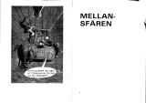
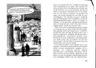

Nedanstående bok är OCR-scannad.
TÖNIS TÖNISSON
MAKT som HOBBY
KONSTEN ATT FLYTA OVANPÅ
Scan, sidorna 2–3
Scan, sidorna 4–5
Av Tönis Tönisson har tidigare utkommit på Askild & Kärnekull
Kalkylera på lek
©1978 Tönis Tönison. Askild & Kärnekull Förlag AB.
Omslag: Raphaël Boillon. Illustrationer: 1870-talsgrafik,
verbalanimerad av författaren. Typsnitt: Times 11/13. Papper:
80 g bulkig plain print. Tryck: Gotab AB, Stockholm
1978 Bindning: Gotab A&K 943
ISBN 91 7008 943 4
Innehåll
• • •
Acknowledgements
Scan, sidorna 8–9
Denna bok skulle inte kunnat förverkligas utan den osjälviska hjälp som kommit
mig till del från mängder av privatpersoner och åtskilliga institutioner.
Otaliga är de som välvilligt och sig själv ovetande ställt sig till förfogande
som försökskaniner vid utprovningen av bokens maktmetoder. Av skilda skäl kan
jag inte tacka alla i offentlighetens kalla ljus. Därför ska jag bara bringa en
personlig hälsning till dem som betytt mest. Tack kära
Olof P-e, Gösta B-n, Marcus W-g, Hans M-t K-n, Curt N-n, Skolöverst-n
(byrå Ve, byrå L-å), Överbefä-n, Ärkebis-p-en, Riksrevi-sver-t,
Vatten-fa-sstyr-n, Sveri-s Riks-g, Kronof-emyndi-n, Invandr-rv-t, AS-A, AB-B,
Securi-s, S-S, Sven-kt S-ål AB(v-k 80), advokat Leif S-y, advokat HS, advokat
Anders F-r, generaldirektör Lars P-n, generaldirektör Owe R-r,
generalsekreterare Kurt W-m, generalmajor Sven P-n, Generalsta-n,
generalissimus Josef S-n, direktör Pehr G-r, direktör Kjell R-d, direktör Olle
N-n, direktör Marko T-ć, Riksskatt-t, Avtals-t, L-ndsorgani-en, S-F,
centralbyråkrat Hans S-g, professor Milton F-n, professor Ra L-m, professor
Stig W-r, professor Albert E-n, professor Karl M-x, rektor T-s, rektor Ö-d,
rektor M-i, doktor Ulla W-r, doktor Cara T-n, doktor Kerstin B-n, doktor Mikael
M-n, överdoktor Harald K-d, underdoktor Elis S-g, hypnotisös Jane N-n,
demonregissör Gustav W-d, mastodontregissör Ingvar S-g, S:t Regissör Ingmar
B-n, redaktör Per W-g, redaktör Love K-g, redaktör Berit S-g, analytiker
Richard M-y, rabulist Britt A-r, klassifikatör Anne B-ö, organisatör Jan C-n,
revolutionar Mac P-s, ex-revolutionär Fidel C-o, dammsugaragent W-G, SÄ-O,
Krim-lvår-sst-n, artist Lennart R-s, artist Pablo P-o, verbalartist Tobias B-n,
hushållslärare Raoul T-n, medborgare Johan B-n, bokhandlare HW, playgirl Tina
T-n, handledare Birgitta B-n, leg handledare Ingrid R-d, medborgarna Eva, Lisa,
Liisa, Eva-Lisa, Siv Mari, Ann, Mari-Ann, Ulla, Britt, Ulla-Britt, Elsa, Sven,
Erik, Sven-Erik, Eriksson, Erixon, Svensson, Swensson, Shvenssohn, Schvenzon
och bokförläggare T-o K-l.
Tack ska ni ha, allesammans!
T-s T-n
Förord
Scan, sidorna 10–11
Som nyfödda skriker vi segervisst inför livet. Nästan alla föds med utmärkta
biologiska förutsättningar för lycka och framgäng. Sen bär der utför. Efter
något har föräldrar och samhällsnormer reducerat oss till skuldmedvetna
stackare med ångest i blick. Vi har stämplats av socialgrupp, föräldraambition
och vuxenförtryck. Självförtroendet är knäckt före fem år fyllda. Skolan
pulveriserar äterstoden med professionellt handlag. Vid uppnådd
myndighetsålder inser de flesta att det stolta födelseskriket var förhastat.
Ett grátt liv återstår, ett liv som andra har programmerat och som andra
drar nytta av. Folk trampar på oss, lirkar oss till saker vi inte vill göra.
Utnyttjar oss utan att vi kan värja oss. Då är det dags att vända trenden innan
den slutar med att syster tar snapsen ifrån dig på hemmet. Skillnaden mellan
vad vi vill här i livet och der vi faktiskt uppnär är alltsä pinsamt Stor. Vad
kan det bero pá? En del menar att vårt svaga psyke är boven i dramat.
Får man bara bukt med Sina inre konñikter och blir harmonisk, infinner
sig lycka och framgång automatiskt. Och visst är det en ranke som ger framgång
ät växande skaror ~ den lada s kotera iindustrin, g P Y P nämligen. Andra säger
att vår brist på framgång beror på att vi styrs av ett förtryckande och
manipulerande system, av ett samhälle som hindrar oss från att få det
Scan, sidorna 12–13
som rätteligen tillkommer oss. Alltså ska vi jobba. i det politiska
systemet.
Systemet ger lycka åt vissa: skattefria frikort på flyget, feta pensioner i
makt att styra och ställa efter eget huvud mot anständig betalning. Lyckan
formligen öser sig över der kloka gäng som förstár att rätt plantera in
villfarelser i medvetandet hos flertalet och sen dra personlig nytta av det.
Men det är svårt att platsa i det gänget. För det är inte många som ryms
där.
För mannen på gatan är såna metoder inget annat än illasinnat nonsens. De är
bara till för att avleda oss från att ta itu med våra egna mål här och nu.
Ingen revolution i världen kan hjälpa en sann ynkrygg. Det å andra sidan gott
om maktapparater som kan stoppa även den psykiskt starkaste. Felet med de
metoderna är att de härleder sig från en syn på lycka och framgång som spmngen
ur ett stillastående tillstånd. I det ena fallet gäller det en inre ankdamm av
psykisk harmoni, i det andra ett yttre statiskt hälle. I verkligheten är
allting förändring, även lycka. Det är snabba skiftningar som utgör
livslyckan.
Ditt personliga liv är helt och hållet en konkret mellan den omedelbara
omgivningen och dina avsikter. Du rör till det för dig om du draf in allmänna
och innehållslösa luddigheter som ”samhällssystemet” eller
”min psykiska styrka” i den affären. Der är bara konkreta åtgärder
som du kan vidta här och nu som har intresse för dig – i nuet, inte i
nägra framtida idealtillstånd.
Har samhällssystem och psyke ingen betydelse för hur det
går för mig? Visst har de. Vi i der följande anledning att analysera dessa
viktiga faktorer. Men det är inte saker som du kan göra särskilt mycket under
den här veckan eller nästa. Under den närmsta tiden är de bara en del av den
mer eller mindre konstanta ”livsluften” kring dig. De kan inte
sättas i någon vettig konstruktiv relation till dina omedelbara mäl, t ex att
få påökt på jobbet, slippa följa med Påstridige Pelle på bio, Flitiga Lisa att
deklarera åt dig eller minst fyra på nästa matteskrivning. Det är på sådant det
lönar sig att sätta in krafter. på sikt kan det leda till att hela
livsperspektivet förändras till det bättre.
När jag råder dig att inte vältra dig i ditt psyke och dess egenheter, menar
jag inte att psyket i konkreta situationer inte kan ställa till svårigheter.
Men just i konkreta situationer är det lättast att komma över psykiska
svårigheter. Det är svårt att göra ett lejon av en räddhågad hare, men det är
ganska lätt att honom att känna sig och handla som ett lejon i en avgränsad
situation. Om nervositet och ängslan gör att du inte vågar uppträda offentligt,
orsakar att du glömmer allt du lärt dig inför en skrivning eller ett förhör
eller hindrar dig att koncentrera dig på en viktig uppgift, då är hjälpen
nära.
Medlet heter medveten och metodisk självsuggestion. jag har valt att inte
kalla det självhypnos, man principen är densamma. Även der fordrar en del
träning men lönar sig duktigt. När du har Lränat in tekniken har du ytterligare
ett bra vapen i makrkampen makten Över dina egna reaktioner.
När jag räder dig att inte söva dig med ”politiskt
Scan, sidorna 14–15
arbete” på systemets villkor menar jag inte att du ska avhålla dig frän
att förändra samhället. Motsatsen är fallet. sikt bör samhället förstås
anpassas till dig och inte du till samhället. Men det ska ske på dina villkor.
Ett tekniskt grepp i processen är att lära sig domptera de nuvarande
makthavarnas institutionerz myndigheter, regeringar och bolag. Du i der
följande också en del tips som hur mail kan få dom att dansa efter din
pipa.
INLEDNING
Livet är som ett kloakrör. Vad som kommer ut ur det, beror på vad man
stoppar in i det.
/Tom Lehrer
Maktskalan
Scan, sidorna 16–17
Makt kan ses som en växande storhet. Den börjar i en absolut minimipunkt på
minussidan. Där är mgm fullkomligt förslavad. Det är maktbranschens
motsvarighet till fysikernas absoluta nollpunkt, och skulle i vårt fack kunna
kallas den absoluta mes-punkten, -273°M. Ju fler friheter man så
småningom. tar sig, desto mer närmar man sig underifrån maktens
islossningspunkt, 0°M. Derma fixpunkt i maktläran heter
manzpulationspunkten. Det är först här det börjar bli möjligt att bli sin egen
lyckas smed. Beteckningen manipulationspunkt är också träffande som försynt
varning. Här är der ännu möjligt för motståndaren att manipulera dig cillbaka
till minussidan. Det är ett hoppingivande men obekvämt läge. Med stigande
makttemperatur når du småningom det tempererade maktklimatet, Precis som
fysikemas rumstemperatur, är den behaglig att vistas i och lätt att
upprätthålla med gańska smä energiinsatser. Den är säkert avstånd från
manipulationspunkten. Du har med smärre misstag utan att behöva hamna i
messidans iskyla. Det är en vilopunkt från vilken maktmänniskan planerar sina
utflykter till hetare och mer fantasieggande trakter. Den andra
ñxpunkten i maktskalan nár vi vid
100°M§jò`rtryckspunkten. Det är ett kritiskt läge. Här har du
tillräckligt med makt för atl en del
Scan, sidorna 18–19
personer i omgivningên kan börja kiinna sig förtryckta. Men du har ännu.
på tok för lite ¿lv i y varan för att Omgivningen ska accepterzi dirt
¿y överläge som självklart och t. 0. m. moraliskt riktigt, vilket alltid
inträffar när makten redan är oinskränkt. Direktörens Stora makt ifrågasätts ,
I É; aldrig, men förmannen med Sina begränsade if yy befogenheter stöter
på patrull. Risken för uppror 1, är alltså stof vid förtryckspunkten.
Parallellen med V _ I; värmelärans kokpunkt är uppenbar. Bubblandet och det
stigande trycket kan åstadkomma y förödande explosioner. Men lyckas man klara F
. I ï y y 7 övergången med situationen under full kontroll, blir
resultatet ett gasformigt maktmedium, med förmåga att utvidga sig utan gräns.
Att framgångsrikr passera förtryckspunkten är varje maktspe 5 _gf „___
lares mål och förhoppning. Men med tanke på riskerna vid tillståndsändringen
väljer många att stanna strax därunder.
Maktens sfärer
Den systematiskt sinnade kan dela in maktens sfärer i fyra (koncentriska)
delsfärer:
- Inre sfären. Den upptas av vårat psyke, vår karaktär, våra inre
förtjänster och bristen
- Närsfären. Här finns de människor vi
har
Scan, sidorna 20–21
dagliga och känslobetonade relationer till: familj, vänner, arbets- och
skolkamrater.
- Mellansfären. Den befolkas av individer vi visserligen har
direkta personkontakter med – chefer, lärare etc'- men relationerna
till dem styrs av formella regler. En viktig del av Mellansfären är Den
Kommersiella Kalotten folk du har personliga affärskontakter med damen i
snabbköpet, bilhandlaren, dammsugaragenten, hyresvärden, läkaren m fl.
- Yttre Sfären. Den karakteriseras av sitt abstrakt obestämda
persongalleri. Du känner inte individerna direkt, möjligen ensidigt genom
TV och tidningar. Det är Institutionernas sfär. Här ñnns Staten,
Myndigheterna, Skolväsendet, Facket, Partiet, Företaget, Försvaret och alla
andra abstrakta åskmoln i vär värld. Det bara ett sätt för oss maktlystna
att linda yttre sfären kring vårt finger. 'Det är att utföra manövern
Nedätriktad Sjärskyining, dra ner de delar av Yttre Sfären, som vi tänker
slå till mot till Mellansfären. Vi måste leta fram och upprätta personliga
kontakter med märmiskorna bakom institutionfèxjna. Staten måste
förvandlas till statssekreŕcirare Stoltsén och minister
Minander, Myndigheten till överdirektör Överborg, skolväsendet till
undervisningsrådet Undergran osv. De ska attackeras i sitt mänsligt
skröpliga kött och blod, aldrig i Sina blanka Institutionsrustnihgar.
Sfärerna presenterar rätt olika problem och fordrar tekniska
grepp därefter. En allmän regel ¿ir att ju längre ut i sfärerna man
dristar sig, desto ändamålsenligare måste Inre Sfären möbleras och arrangeras.
Det är t ex ganska utsiktslöst att via manipulation av partibossar, ämbetsmän
och riksdagsledamöter försöka driva igenom en lag i riksdagen som gynnar ens
person, om man samma gáng hyser skuldkänslor för saken. Men med för
ändamålet väloljad Inre Sfär går det galant – det görs varje dag.
Jag har en nära god vän, lika lågavlönad och grå som de flesta av oss, som
för en tid sedan lyckades med just detta – att stifta och få igenom en egen ny
lag som han behövde för att vinna en privat tvist. Det tog honom år av nära nog
heltidsjobb och ett under av maktteknisk skicklighet. Men sedan den 1 januari
1977 står lagen i lagboken. Ingen, vare sig partiel", departement eller de
riksdagsgubbar som röstade för lagen, Har ringaste aning om att de har blivit
manipulerade till alltsammans av en enda musbrun medelmedborgare. Som skicklig
makttekniker gör han inte dumheten att skrodera med sin bedrift. Vi är högst
fem i landet som känner till hela bilden och inte bara. lösryckta bitar. Det är
makt vi vill ha, inte plats i kiindismenageriet. Du privilegiet att liira dig
hur man bär sig ät i avsnittet om Yttre Sfären. Tills vidare får min gode vän
tjäna som exempel på att det inte är samma Sak att vara känd och att ha makt.
Någon enstaka gång går kändisskap och makt att
Scan, sidorna 22–23
kombinera.
I de allra flesta fall utövas makt bäst i det tysta. Makt som hobby
är Den Tysta Sporten. Varie maktsfär består av ett antal
Attackkalotter, Zenitzoner, Stötsektorer eller vad vi nu väljer att
kalla de områden som väcker vår maktlystnad. Inre Sfären och dess positiva och
negativa kalotter har förstås central betydelse. idor och tekniska
Vi tvingas att ägna många sidor och tekniska övningar åt den i det följande.
Det mesta kommer växa fram i samband med analysen av de andr andra sfärernas
problem. Vissa speciella tekniska frågor om Inre Sfären ska vi ta upp i slutet
av boken. I övrigt kan vi nu direkt över till motståndarsfärerna –
Närsfären, Mellansfären och Yttre Sfären.
NÄRSFÄREN
Scan, sidorna 24–25
Scan, sidorna 26–27
Problemet i Närsfären är inte så mycket att skaffa sig makt över andra som
aft undgå att bli maktoffer ät andra. I nära personliga förhållanden är det
pá sikt omöjligt att köra med effektiva maktmetoder och behálla
Sina nära relationer. Folk man träffar varje dag börjar föra statistik i
tankarna över hur ofta du och inte de – har fått din vilja fram. Trots
ditt föredömliga fotarbete blir du inte beundrad. Du blir spolad. Der innebär
inte att fotarbetet ska försummas under begränsade tidsperioder går det utmärkt
att hålla familj och vänkrets under tummen utan att de anar oråd. Såna
möjligheter inte försittas. Men i längden är det utsiktslöst att kombinera
varmt besvarade känslor med oinskränkt övning. Därför ska vi här diskutera
försvar. Vi ska Enna motmedel mot svärmors inblandning och mot Pelles förmäga
att få med oss pá bio när vi egentligen vill se ishochey. Vi ska lära
oss stå emot vår omgivning när den vill få Oss till det i själva inte vill.
Av resonemanget följer att det i Närsfären mest gäller att svinga sig till
strax ovanför manipulationspunkten (O°M), men inte mycket hògre.
Redan det tempererade maktklimatet (ca kan tidvis ligga för högt, om man säkert
vill behålla motspelarnas vänskap och kärlek. Men att metoderna i denna sfär i
huvudsak är defensiva, och ska ta oss ur diverse manipulations- och
förtryckssituationer, innebär inte att de är harmlösa. Flera av dem kommer vi
att bruka med
Scan, sidorna 28–29
hänsynslös aggressivitet i kampsfärerna. Resonemanget i detta kapitel blir en
god grund att stä på av ännu en anledning. Der är nämligen behandlar begreppet
skuldkänslor ingående en basingrediens på ömse sidor i allt måktspel.
De enklare softens när-napoleoner av båda könen, som inte inset Närsfärens
inbyggda begränsningar, opererar med förkärlek med olika varianter av
Skuldartilleriet. Tunga vapen, förvisso, men också svårhanterliga. De
kan lätt explodera i den oskickliges ansikte. Och den som Ánvänder
Skuldartilleriet i Närsfären – när vapnens rätta plats är Mellansfären
och Yttre Sfären; har redan avslöjat sig som oskicldig maktspelare. Det finns
alltså inte mycket att frukta, mela fenomenet ger oss tillfälle att analysera
skuldkänslor och dess uppkomstmekanismer lite närmare, vilket är utmärkt.
Ty en maktspelare utan gedigna kunskaper i skuldlärans grunder är som -en
säökapten utan kunskaper i navigation.
Elementär skuldlära
Det finns en uppsjö av skuldteorier i facklitteratu ren. Den som följer här
har vissa fördelar framför andra fuskverk på området. Den är ny (det är första
gången den presenteras inför större publik), den är praktiskt
prövad och den förklarar just det vi önskar förklara och ingenting
ovidkommande. Sá ter den sig: Som små vi lära oss gott uppförande genom
att vuxenmaffian omväxlande berömde och bannade vára handlingar. Om vi
hojtade högt, sa vuxna ibland ”hurra”, ibland ”tyst”.
Bajs resulterade ibland i ”duktigt”, ibland i ”usch”.
Men vad Var det som egentligen var dåligt med bajs när det var dåligt, och bra
når det var bra? Tyvärr var vi alldeles för smá och oerfarna för att
kunna lösa en sådan filosoñsk gåta. Inte hade vi tid heller. Hela vår
lycka hängde på att rätt avläsa morsans och farsans minspel.
‘Verkligheten bakom Eck av praktiska skäl kvitta. Att spå i
vuxenansikten var jobbigt nog. Om det vi gjorde (eller lät bli att göra)
verkligen var ont eller gott, gick för oss alltsä inte att fastställa sakligt.
Stämpeln ”gott uppförande” var inte knutet till de faktiska
handlingarna. Den var i stället totalt upphakad på vuxenmaffians ganska
godtycldiga gillande (eller ogillande) av handlingarna. Vad vi inpräntat för
evigt, var att våra handlingars moraliska halt inte bestäms av handlingarnas
karaktär i sak. Den bestäms av människornas reaktion i vår omgivning. Och
därmed basta!
Parallellt med denna besynnerliga etiska utveckling blev vi likväl äldre och
visare. Vi fick oberoende av alla tanter och farbröder lära känna
Scan, sidorna 30–31
eget skinn att vissa handlingar verklagen ledde till goda, andra till dåliga
upplevelser. Våra erfarenheter kunde ofta (men alls icke alltid) stämma överens
der offïciella goda uppförander. Men deras Stora styrka var art de var
realiteter och inte hörsägen. så vis har de flesta redan i tonåren utbildat en
egen, mycket privat värdeskala. Med deSs hjälp kan vi nästan automatiskt känna
Vad som enligt vår bedömning är bra, rätt och rimligt. Det är vår privata
moral. Vilken av de moralerna den sanna? Der vi reda på först i efterhańd,
när vi veta vad våra handlingar ledde till. Då är det för sent. Vi är alltså
tvungna att se saken ur praktisk synpunkt: är det klokast att grunda sina
handlingar på egna erfarenheter, eller på hörsägen? Efterson vi ändå själva
måste bära ansvaret för följderna, vilken metod vi än väljer, verkar det bättre
att efter vad man själv vet och har kontroll över, än efter vad andra märmiskor
(som dessutom går helt fria från ansvar för vad du gör) ¿Tor sig veta.
Vår privata moral fungerar bra till vardags, men vi är snara att skämmas inför
andra för att vi använder den. För långt inne i den av barndomsuppfostran
kròkta delen av ryggmärgen lurar det officiella goda uppförandet. Der
goda tycks oss känslomässigt inte gott förrän det godkänts av andras
moralstrukturer, förrän der hälsats av andras nådiga miner. Det är förstås en
förvirrande definition av gott och ont: Vad som till slut ska visa sig rätt
avgörs inte av objektiva kriterier, utan av
Scan, sidorna 32–33
andra människors reaktioner som vi inte kan förutse. Sá länge vi inte
har gjort upp med den 0 II 0 11 I „_ 9 ryggmärgsskadan kommer vi alltsä
alltid att omkring med ständig skuld och ångest för att enligt rfågons äsikt ha
felat, och hoppar till varje gång vi ser en ogillandç min.
Moralen är ditt ansvar, inte moralisternas
Moral i praktiken kan inte vara annat än egna värderingar under eget ansvar.
Och egna värderingar bygger vi på privata känsloupplevelser. I sista hand är
därför all praktisk moral i någon mening privat och subjektiv – det egna
samvetets friska röst i motsats till ängslig skuldmedvetenhet inför andras
värderingar. Den är absolut ingenting att skämmas för, vad andra människor än
kan få för sig att säga.
Det är klart att vårt privata moralsystem inte kan ge garantier mot
klavertramp. Det är oroande. Men det officiella systemet ger lika dåliga
garantier. Det går inte så bra för den som alltid obrottsligt följer budet "du
skall inte stjäla", och råkar bli instängd i ett livsmedelslager över
julisemestern. Den som av princip aldrig stjäl,
ljuger, begår hor eller går mot röd gubbe, är ett allmänfarligt nöt. Oberoende
av vad folk i "ansvarsställning" säger, är vi i sista hand alltid själva
ansvariga för vad som sker – både för våra handlingar och vår brist på
handlingar. Omvärlden accepterar aldrig ursäkten "Jag följde bara lagar och
förordningar", när fosterskadorna, atomkraftkatastrofen eller storkriget är ett
faktum. Den gör det lika lite i de små frågorna – den missade
exportordern för att jag inte mutade ämbetsmännen, det dåliga betyget för att
jag var den ende som inte fuskade på skrivningen. Om jag anser att
föreskrifterna i ett visst läge är fel, är det min plikt att åsidosätta dem
– det lärde sig varenda krigsförbrytare innan han hängdes. Innan de
sköts, lärde sig å andra sidan åtskilliga motståndsmän motsatsen. Av det kan vi
för vår del lära att det visserligen ofta är oklokt att följa av andra
uppställda lagar, förordningar och moralregler, men att det ofta är lika oklokt
att göra det till ett herrans spektakel att inte följa dem. Om jag står och
väntar på grön gubbe klockan tre på natten på en otrafikerad gata är jag ett
fån. Men jag bör verkligen spärras in om jag inte väntar tills polisbilen har
åkt förbi.
De flesta saker som du tycker är rimliga, men som förbjuds av i ditt tycke
larviga regler, kan du utan vidare göra med lite diskretion och sinne för
praktiska finesser. I ett lite mera allmänmänskligt perspektiv – mot
bakgrund av historiska massmord och andra risker med att vara följsam
Scan, sidorna 34–35
med makthavartänkandet – är det till och med din plikt.
Det en smula kaotiska samhället, där ingen tar reglerna riktigt på allvar, är
långt hälsosammare för dess invånare och grannar än den preussiskt effektiva
staten. Det vanliga motargumentet brukar vara: "Men hur kommer det gå om alla
gör så?" Svaret är enkelt: Det kommer alla aldrig att göra, i vart fall inte
samtidigt. De flesta kommer alltid att följa gängse regler, delvis av lättja,
delvis därför att det beteendet som för tillfället är lämpligast råkar
sammanfall med reglerna. Vad man än må tycka om reglerna är de oftast –
statistiskt sett – en god sammanfattning av hur det i de flesta
fall är förnuftigt att bete sig. Men det faktum att det i de flesta
fall bara ställer till med en massa trubbel att gå i säng med grannens
äkta hälft, betyder inte att just ni inte kan få ert sexualliv förnyat av några
samlag i skogen och i garaget. Det som är bra och det som är dåligt är något
som du måste avgöra alldeles på egen hand. Det måste du alltid göra –
även om du vanligen följer regler av ohejdad vana. För du ställs till svars i
livet för dina handlingar. Det är ingen som i efterhand är intresserad om de
kom till av lust att följa regler, eller av lust i sig.
Livet är lyckligtvis alltför komplicerat och variationsrikt för att det ska
gå att sammanfatta i tio tumregler eller ens i hyllmetrar av lagböcker. Att sen
de flestas privata moraliska värderingar sammanfaller med de flesta andras i
enklare fall, är bara naturligt. Vi får alla livserfarenheter i växelverkan med
varandra.
Scan, sidorna 36–37
Vår naturliga rätt
En sammanfattning av den tjusiga tiraden ovan skulle kunna göras i följande
grundsats: Det enda i längden hållbara moralsystemet för dig är ditt eget
privata system.
Du har följaktligen all rätt i världen att själv vara domare över ditt
beteende, dina tankar och dina känslor utan att känna skuld inför någon annan.
Det är du och ingen annan som har det fulla ansvaret för följderna.
Ur denna grundsats följer t ex att:
| du har rätt |
att inte behöva rättfärdiga eller ursäkta ditt beteende |
| du har rätt |
att säga nej |
| du har rätt |
att ändra dig |
| du har rätt |
att göra fel och bära ansvaret för felen |
| du har rätt |
att vara okunnig |
| du har rätt |
att resonera ologiskt |
| du har rätt |
att inte förstå |
| du har rätt |
att strunta i saker och ting |
| du har rätt |
att strunta i vad andra tycker |
| du har rätt |
att strunta i andras problem * |
* Listan på rättigheter härrör (med vissa ändringar) från
den amerikanske psykologen Manuel J. Smith.
Skuldartilleriet
Scan, sidorna 38–39
Skuldartilleriet får sin ammunition från att det ofñciella goda
uppförandet heit förnekar dessa självklara rättigheter. Plus der sorgliga
faktum att vi ännu hyser det goda uppförandet i ryggmärgen ett i och för sig
skamligt faktum, om vi skulle råka vara äldre än fjorton år. Men, OK, vi har
all rätt i världen att inte känna skam för det heiler. Pjäserna i
Skuldartilleriet är många. Lättast att urskilja är:
| Motiveringsmörsaren |
| Kritikgranaten |
| Logikstycket |
| Kunskapskanonen |
| Ändringsbomben |
De är alla laddade med ett tillbakavisande av rättigheterna ovan.
Motiveringsmörsaren förs in när motståndaren i
fullständigt självklara situationer ber dig motivera ditt beteende:
”Varför tappade du soppan på bästa mattan?”, ”Varför vill du
inte låna mig 100:–?”, ”Varför är du så fjär?”,
”Varför bjuder du inte til1?”, ”Varför älskar du mig inte
längre?”. Precis som i andra fältövningar med Skuldartilleriet försöker
motståndaren här suga in dig i sin moraliska struktur – ofta uppgjord
enkom för tillfället i fråga. Ty den officiella moralen är
Scan, sidorna 40–41
elastisk. Till innehållet tillåter den vilka tänjningar som helst, bara den
till der yttre fär behålla stämpeln ”ofñcie11”.
Motståndaren litar på – ofta på goda grunder att för oss ryggmärgsskadade är
som är uttalat av en annan person”.
Så fort man ger sig in på att svara på absurditeterna är man i motståndarens
grepp. Man accepterar hans moralstruktur som krigsskådeplats och sitter i
omöjligt underläge. Frågaren är inte intresserad av dina motiv. Vad han vill är
mjuka upp dig skuldmässigt – för att sen manipulera leran i egna syften.
Alltså gäller det att till varje pris undvika att svara. Vi kommer snart att
behandla några bra sätt för det.
Kritikgranaten briserar i kritik. Kritik är
förödande. Den innehåller öppna eller underförstådda fördömanden – från
andra. Ryggmärgen krullar sig. Vi ställer oss i försvarsposition. Vi vill
förklara, gottgöra. Vad som helst är bättre än ogillande – när allt
kommer omkring förtjänar vi det inte.
Det är klart att vi inte förtjänar kritik – den enda som har ansvar
för vårt beteende är vi själva. Men hur klarar vi det här: ”Du har inte
gjort något annat än läst serietidningar hela morgonen”, ”Att du
alltid lyckas klä dig som en raggare/gammal
tant/symaskinsförsäljare/fnask,” ”Med den arbetstakten kommer du
inte långt i liver”. Vi klarar det uselt.
Automatiken slår till och vi hittar tusen ursäkter för
saker som inte behöver ursäktas. För det är ju saker som vi själva vill,
visserligen utan Övertänkta motiv, utan större logik, utan Stora långtsyftande
planer, men för stunden vill vi det, och tycker att det är OK. Motståndaren är
inte dummare än att han förstår det. Men vad bryr han sig om det, om han ser
att du kan att känna skuld för vad som helst som han uttrycker sitt ogillande
inför. Kritikgranaten är, hur konstigt det än kan låta, ofta ett defensivt
vapen. Den anfallande vill egentligen själv någonting också, men har inte mod
nog att säga det rakt ut. Han är också oförmögen att förstå att han är i sin
fulla rätt att vilja det han vill, utan att behöva motivera och utan av att
vara logisk. När han inte råkar ha några bärande skäl eller logiska resonemang
i rockärmen, reagerar han med olust och gnatighet. Anklagelsen ”Du har
inte-gjort något annat än läst serietidningar hela morgonen” är kanske en
olustreaktion inför kritikerns egen oförmåga att finna motiv för att han dagen
lång har längtat efter att åka ut och ro i ekan med dig. Kritiken är alltså
isak mycket sällan något att bry sig om. Den är inte ens allvarligt menad
– sakligt sett. Under andra dagar han ni båda myst Över samma
serietidningar, samma kläder har fått gillande ögonkast, och ditt lugna och
metodiska arbete har fått uppskattning. Kritikgranatens verkan den är inte
föraktlig beror på att du tvingas in i en arman persons bedömningsstruktur. Väl
där är du som vanligt i underläge. Ty dina egna, säkert i och
Scan, sidorna 42–43
för sig rimliga bedömningar, gäller tyvärr inte på främmande territorium.
försvar dig djupare ner i den dypöl du vältaligt försöker försköna. Bara med
den extra nesan att den aldrig var en dypöl utan en kristallklar havsvik
– en omöjlig sak att förklara för folk som av princip vägrar
förstå dina begrepp. Att käfta emot, ’Hag har visst inte läst serier hela
dan, bara en timme i förmiddags”, är att ta direktflyg till ett okänt
moraliskt Australien. Det ska du noga akta dig för. Hur det tekniskt ska gå
till ska vi behandla strax.
Logikstvcket, Kunskapskanonen
och Ändringsbomben är variationer samma tema. De utgår från de löjliga
idéerna att man inte kan ha någon egen mening om någonting om man inte kan
presentera den med fullfjädrad logik, att man måste backa upp sin mening med
encyklopediska detaljkunskaper, att ändra sin mening är skurkaktigt och
oanständigt. Nu är det förstås så, att ditt tyckande knappast blir sämre av att
du inte lyckas föra fram det med aristotelisk precision. De flesta beslut
– även de mest livsavgörande – måste tyvärr fattas utan tillgång
till information om alla deta1jer. Och att kunna ändra sig är ett gott bevis på
att man kan dra lärdom av erfarenheter. Det är snarare konstigt att folk inte
reagerar med fasa på alla politiker som säger att ”Vårt partis ståndpunkt
i trafikfrågan/energifrågan/försvarsfrågan står fast och har stått fast i
femtio år.” Det är en
Scan, sidorna 44–45
sjuhelsikes tur för landet att de ljuger och inte alls förespråkar höskrindor,
ångmaskiner och sabelfäktning. Lögnen har samhällsnyttiga sidor.
Skuldbekämpningsarsenalen
Själva projektilerna i skuldartilleriet är tekniskt lätta att parera. Det är
svårare med den egna inbyggda ryggmärgsskadan. Att hålla den under kontroll
och låta bli att övermannas av skuldreflexer fordrar träning. Lämplig
försvarsteknik mot skuldartilleriet är därför en metod som projektilerna att
fara ät fanders och samtidigt tränar oss att kontrollera skuldreflexen.
Jag hävdar att den metod vi nu ska behandla har följande
förträffliga egenskaper:
- den är idiotsäker och ger inga tillfällen till dumma misstag, om man
så skulle rodna invärtes av skuld och uppfostringsskador,
- den tränar oss effektivt i konsten att se på våra egna handlingar och
egenheter med upphöjt lugn och suverän självgodhet,
- den vänjer oss vid att se det vi sysslar med från vårt eget
bedömningsperspektiv, som är verkligt, och inte från andras, som är
inbillat (för hur farao vet du vad de
andra egentligen tycker?),
- den gör oss med tiden känslomässigt immun mot andras godtyckliga
bedömningar och ?????
Men du måste träna, morgon, middag och kväll.
Nåväl, de tre tekniska knep som besitter dessa utmärkta egenskaper
är Hack I Skivan (HIS), Vakuumjörpackning (VF)
och Klandra Mig Mera (KMM). De utgör de viktlaste delarna
i Skuldbekämpningsarsenalen. De kan användas var för sig eller i
kombination. De klarar garanterat ditt tillfälliga maktproblem. Men inte bara
det. ju mer du brukar dem, desto mer botas du från din gamla skada i
ryggmärgen.
Hack I Skivan
Hack I Skivan är så enkelt som att under hela konfrontationen bara upprepa
det du av dig själv vill och tycker. Enkelt, men förödande som neutronbomben
(förintar manipulationen men bevarar vänskapen om man inte klantar sig).
Påstridige Pelle hälsar på och vill få dig med på bio. Du vill se ishockey
på TV. Så här kan speler utvecklas med Hack I Skivan-metoden:
Scan, sidorna 46–47
| Pelle: |
Tur att du var hemma. I kväll har vi sista chansen att se
”Gryning över Katmandu”. Snabba dig på, så hinner vita en
hamburgare innan. |
| Du: |
Jag ska inte gå på bio i kväll, jag ska se matchen. |
| Pelle: |
Kallar du det match! Mot Polen! Nä, nu du rycka upp dig. I kväll går vi
och ser årets tuffaste film! |
| Du: |
Jag förstår, men jag ska inte gå på bio i kväll. |
| Pelle: |
Du kommer inte att fatta vad folk säger längre – alla bara
snackar om den här filmen. Ta på dig nu med lite fart, så tar vi
Eva med oss ocksä! |
| Du: |
Jag förstår, men jag ska inte på bio i kväll. |
| Pelle: |
Du är ju ologisk! Senast i sa du att du inte missa ”Gryning över
Katmandu”! Klä på dig så sticker vi! |
| Du: |
Ja, jag förstår hur du menar, men jag ska inte gd på bio i
kväll. |
| Pelle: |
Ska du säga ”förstår”! När du sviker dina bästa vänner! Och
Eva tänker du tydligen inte alls på! Är det så du lönar kärlek? |
| Du: |
Ja, jag förstår, men jag ska inte gå på bio i kväll. |
| Pelle: |
Kan du ge mig ett enda rimligt skäl? För matchen mot Polen är ett bra
dåligt svepskäl! |
| Du: |
Jag förstår bur du menar, men jag ska inte gd på bio i
kväll. |
| Pelle: |
Du är en förbannad tjurskallig åsna! |
| Du: |
Jag förstår hur du menar, men jag ska inte gd på bio i
kväll. |
| Pelle: |
Du är det envisaste jag varit med om. Är du hemma i morgon då? |
| Du: |
ja, det är jag. |
| Pelle: |
Kan vi gå på bio i morgon då? |
| Du: |
Det ska bli riktigt roligt. Jag ska ringa Eva, gör vi upp om tid. |
Fraserna av typen ’Jag förstår”, ”Det förstår jag”,
’Jag förstår hur du menar”, som inleder själva Hack I
Skivan-satsen, är till för att markera att du från din sida lyssnar artigt och
uppmärksamt, men fortfarande håller fast vid ditt beslut. Motståndarens utfall
därmed något ovidkommande över sig utan att man behöver säga det eller ge sig
in på hans/hennes argument:
Du älskar mig inte längre!
Jag förstår hur du menar, men jag ska inte på bio i kväll.
I ditt svar finns ett förtäckt ”Det är alldeles huvudlöst att koppla
ihop hela vår kärlek med ett ‘futtigt biobesök”, men du behöver
aldrig säga det. Det är viktigt, för det och outsagda har ofantligt större
manipulationskraft än de mest raffinerade påståenden i klartext. Om du direkt
svarar på motståndarens frågor och kommenterar hans páståenden sakligt,
vet han precis var han har dig. Han vet att du försöker skjuta med bästa
ammunitionen. Du avslöjar bara din skrala beväpning. Men om du inte svarar och
inte kommenterar projektilerna, blir han osäker. Kanske sitter du på en
atombomb och bara
Scan, sidorna 48–49
skrattar hans futtiga granater? Oron minskar träffsäkerheten. Snart märker han
det själv. Paniken ökar, och till slut blint att du på nágot mystiskt
sätt har fätt övertaget. Han ger upp eller går över till din sida.
Med "jag förstår, men”-fraserna undgår du alltså de farligaste
misstagen – att svara på frågor och reagera negativt på förolämpande
tillmälen. ’jag förstår, men” understryker listigt att du mycket
väl har uppfattat att motståndarens frågor inte alls är några egentliga frågor
som fordrar svar, utan bara manipulation för att få dig i försvarsposition.
HIS (Hack I Skivan) i renodlad form är grov och onyanserad. Men i
kombination med VF (=Vakuumförpackning) och KMM (=Klandra Mig Mera) är den mer
flexibel. Ren HIS innebär dock vissa fördelar för nybörjaren. Receptet är
enkelt att man inte tappar koncepten och kan fortsätta planenligt, även om man
skulle få några svåra smällar från motståndarens skuldartilleri. Och just det
faktum att man ändå lyckas, ”svåra sår” till trots, gör att man
börjar se skuldprojektilerna med nya ögon. När allt kommer omkring var t o m de
gruvligaste anklagelserna – illojalitet mot vänner, skumma motiv,
bristande logik – tydligen inte sakligt menade utan bara tekniska led i
simpel manipulation. Inte nog med att anklagelsen ”Svikare!” inte
nödvändigtvis gör mig till svikare – anklagaren tycks inte ens själv ta
sin anklagelse på allvar när han släpper taget om den lätt!
Upprepa tekniken ofta. Snart småler du invärtes när folk påstår att du är
tjuvaktig, sadistisk eller opålitlig.
Vakuumförpackning
Effekten är ännu vid träger bruk av Vakuumförpackning (VF).
Vakuumförpackning är i första hand ett verktyg för att desarmèra
Kritikgranater, som t ex ”Du gör inget annat än láser dumma
serietidningar.” Vakuumförpackning går ut på att glatt (utan spår av
ironi eller bitter biton) bekräfta att man har uppfattat motståndarens
sakpdstáenden, ”Det har du rätt i, på senare tid har jag faktiskt
läst ovanligt mycket serietidningar”, men inte ge sig in på att försvara
sig mot de underförstådda eller uttalade moraliska fördömandena. så sätt dras
man inte in i motståndarens normsystem, men behöver för den skull inte förneka
det man gör. Rätten att bedäma sina handlingar reserverar man ät sig själv. För
om du vill tillbringa en söndag med att läsa serier, har du bedömt det som ett
för dig bra sätt att fördriva tiden. Det ingen arman som kan göra bedömningen
bättre. Om någon inte tycker om din serieläsning är det hans problem och inte
ditt. Hittar han en lösning som tilltalar både dig och honom, finns det grund
för en rimlig kompromiss. Men det vore onödigt att låta sig manipuleras mot sin
vilja.
Scan, sidorna 50–51
Genom att strikt hålla sig till sakfrågorna och växla bort bedömningarna på
sidospår, kan man också komma fram till vad motståndaren egentligen
vill. Det kan ju knappast vara så enkelt som att du ska upphöra att Iäsa
serietidningar för att göra motståndaren lycklig.
Beteckningen Vakuumförpackning syftar på att alla anklagelser går förlorade
i det vänliga och nyktra bemötandets absoluta tomrum. Motståndaren känner det
som att skjuta sina projektiler ut i universums totala vakuum – de bara
försvinner in i den motståndslösa oändligheten. Det är också lite av japansk
brottning över VF. Genom att vi bara ger efter, blir det motståndarens egen
kraft som får honom på fall.
Granskar man metoden att upprepa moståndarens anklagelse och hålla med om
den (jag betonar: helt utan sarkasm och upprördhet) finner man att det
finns i princip tre nyktra och neutrala sätt att hålla med om kritik:
- Du håller med om ett faktapåstående. ”Ja, jag har faktiskt läst
mycket serietidningar på sistone.” ”Du har rätt, jag är väldigt
fumlig.”
- Du håller med om en princip. ”Ja det kan nog stämma, mycket
serieläsande förstör nog smaken för god litteratur.” ”Det är
riktigt, fumliga personer ska helst inte laga mat.”
- Du håller med om en sannolikhet. ”Ja, det är
faktiskt möjligt att folk som läser mycket serier med
tiden får lägre intelligens.”
Scan, sidorna 52–53
Vilket sätt du ska välja beror delvis på hur kritiken uttalades. Du måste
kanske omformulera motståndarens uttalande en aning att det gär att passa in i
någon av de neutrala kategorierna ovan. Det är bara bra. Hans kritiska
påstående då gärna klang av ”naturlag”, vilket han aldrig avsåg,
och får det att framstå i något absurd dager. Men inga sakförändringar och inga
försköningar! Du ska glatt ta på dig allt som läggs dig till last! Att
anklagelserna ofta inte överensstämmer med sanningen är inte ditt problem.
Strunta i det och följ bara instruktionerna. Den som får mest bekymmer av sin
bristande sannfärdighet är småningom motståndaren. Så här kan det till:
Motståndaren: Nu är jag trött på att komma hem efter jobbet och finna att
ingen har köpt hem mjölk/öl/morötter/heroin.
Du: Du har rätt, jag har verkligen misskött inköpen på senare tid.
Motståndaren: Och dessutom ser det ut som fy fan i hallen!
Du: Jo, hallen borde jag verkligen ha städat mycket bättre.
Motståndaren: Du har då alltid förklaringar för alltingl
Scan, sidorna 54–55
Du: Det är sant, jag har ovanligt lätt för att skylla ifrån mig.
Motståndaren: Din slappa stil gör att jag snart inte vågar ta hem folk!
Du: En del kommer att bli rätt chockade, det har du rätt i. Det borde jag
tänka på oftare.
Motståndaren: Får du inga skuldkänslor – så som du bär dig ät?
Du: När du nu säger det så måste jag säga att det får jag ofta.
Motståndaren: Det förbannat ynkligt att gå omkring med skuldkänslor för
allting!
Du: Det har du faktiskt rätt i, att ständigt omkring med känslor är inte
alls bra.
Motståndaren: Varför gör du då ingenting ät det?
Du: Det är sant, jag borde göra något åt att jag får så mycket
skuldkänslor.
Motståndaren: Det enda du någonsin gör är att snacka den här typen av
fullständigt struntprat!
Du: Jo, när jag tänker efter så är jag faktiskt en rätt vissen komversatör.
Motståndaren: Och nu närjag har bjudit rektorn hem till oss!
Du menar att du är rädd att han ett dåligt intryck?
Motståndaren: Jag är jättenervös!
Du: Men då kan jag bjuda min chef också. När hon är med smälter alla som
smör.
Motståndaren: Kan du göra det? Det är ju det jag vill! Du är då den
hyggligaste prick jag känner!
En arman variant är de klassiska
föräldrarna/svärföräldrarna till vuxna barn som bara tränger sig på och fordrar
ständiga uppställningar. Här passar det bra att demonstrera kombinationen av
HIS och VF:
Motparten: Ja, då kommer ni som vanligt på söndag. Se nu
bara att ni inte missar 9-tåget och kommer i tid.
Du: Nästa söndag kommer vi inte, för vi ska till några av Ullas
arbetskamrater.
Motparten: Hur kan du vara kallsinnig när du vet att far/mor är sjuk!
Du: Det är verkligen tråkigt att far/mor har snuva. Men vi kommer inte
nästa söndag.
Motparten: Att inte visa sina strävsamma föräldrar hänsyn är väl högsta mode
i era kretsar. Men vad ska vi göra med steken för fem
Scan, sidorna 56–57
personer som vi köpte för er skull?
Du: Du har rätt i att jag borde visa större tacksamhet mot er, och jag vet
inte vad ni ska göra med steken. Men vi kommer inte på söndag.
Motparten: Det var det oförskämdaste jag hört från dig, och ändå har jag
känt dig i 22 år! Men låt oss sluta bråka. Och se nu till att ni inte kommer för
sent en gång till. Fat/mor blev väldigt upprörd förra gången!
Du: Du har rätt i att jag verkligen borde visa större respekt för dig. Men
vi kommer inte på söndag.
Motparten: Allhelgonadagen då?
Du: Allhelgonadagen? Få se, är det inte om tre veckor? Jo, då kommer vi
gärna. Men vi stannar inte till middag. Vi ska på demonstration klockan 2.
Jag hoppas att du har lärt dig något av motståndarnas
insatser också, trots att de förlorade i just dessa exempel. En en variant är
t ex motpartens fjärde replik i sista dialogen. Vad motparten här kör med är
något som vi kommer att behandla i kapitlet om Mellansfären,
Ta-för-givet-metoden. I det här fallet var den ett sista ynkligt
försök före ett säkert nederlag (så effektiv är faktiskt
kombinationen av HIS och VF). Men i bättre valda sammanhang gär den inte bara
hem, den tar hem segern. Vi ska inte orda mycket om saken. Men har det inte en
vidunderlig manipulerande effekt – trots att man tror att man har bestämt
sig: att tvingas ta ställning till när man ska anlända till en plats, när man
inte ens vet om man vill bege sig till platsen i fråga?
Låt motståndaren stå för
talekonsten och du för maktvinsten
En sak till som man kan lära sig av dessa exempel är att der är en
villfarelse att »tro att det som i sak sägs i en argumentering har
betydelse för utgången. När man hör munviga debattörer i aktion faller man
alldeles i onödan för Skickliga formuleringar. Att uttrycka sig elegant och
kunnigt är förvisso en fin konst. Det kan leda till snabb karriär i kultur- och
författarvärlden. Men flotta fraser vinner på sin höjd litteraturpristävlingar,
inte maktkonfrontationer. Vad som motståndaren att handla är inte sakskälen i
sig, utan hans känsloattityder till dem. Som maktspelare vill vi få
motståndaren att reagera som vi önskar, inte framkalla applåder för vår lärdom
och formuleringskonst.
En förolämpnings kvalitet bestäms t ex inte av de intressanta och riktiga
sakpåståenden den
Scan, sidorna 58–59
innehåller. Den bestäms av den reaktion den säger sin förolämpning för att
förolämpa, inte för att säga sanningar. Som bekant är osanna beskyllningar som
”Du är en impotent hustruplågare”, mycket effektivare än sanna, t
ex ”jävla bilist”. Ingenting retar folk mer än att andra har en
”falsk bild” av dem.
I en maktkonfrontation ska du aldrig säga något bara för att det råkar vara
sant, kunnigt, välfunnet eller vackert uttryckt. Sånt hör hemma i
underhållningsbranschen. I maktsammanhang ska man säga det som gagnar det
manipulativa syftet och inter därutöver. Det är ingen tillfällighet att folk
som har minst makt av alla (förtryckta hemmafruar, parkalkoholister,
tonårsflickor etc) jämt tjatar om hur de i ord plattade till sina antagonister,
”... och då sa han..., men dä sa jag ...”, trots att de tydligen
förlorade själva spelet med hästlängder. De lider av missuppfattningen att de
har gjort en kompromiss: den andre visserligen sin vilja fram, men i gengäld
de säga alla bra saker.
Lustigt nog är det som inte sägs i en argumentering ofta avgörande för
utgången, inte replikerna. Det outsagda och oklart formulerade stimulerar
motståndarens sjuka fantasi och skräck: ”Kanske tror han att jag är en
impotent hustruplågare?”, ”Han har kommit på mig&rquo;, ”Han
läser mina svagheter som i en öppen bok.” Motpartens gränslösa inre
osäkerhet och ångest är din trognaste bundsförvant. Underhåll den genom att
vara fåordig och luddigt korrekt: ’Jag
Scan, sidorna 60–61
förstår hur du menar”, ”Det var en intressant iakttagelse”,
då, menar du?”, &rquo;Vill du förklara det närmare?”,
”Berätta mera.” Låt honom själv snacka in sig i ett hörn. Det gör
han, bara han hålla på ostört. Här har det handlat om försvar, men som vi sen
ska se, går samma medel att använda i anfallssyfte också.
Klandra Mig Mera
Klandra Mig Mera (KMM) är ett aktivare desarmeringsredskap för
Kritikgranater. VF kan också sättas in mer aktivt genom att man tar på sig en
bit rqer elände än motparten har avsett att ldandra en för, och på eget bevåg
kritiserar egenheter hos sig själv som motparten inte harkommit på idèn
att göra. Motståndaren kalla fötter: han är ställd mot en Skuldbranschens
Stålman, synbarligen osårbar för all kritik: det är alldeles fantastiskt Vad
jag kan hálla på och läsa dumma serietidningar. Litteratur förstår jag
mig tydligen inte på ett dugg.ja, inte konst, musik och sport heller, för den
delen. Det blir inte mycket över, vid närmare eftertanke. Mannen/ kvinnan utan
vettiga intressen, det är jag det!”
Men det nya inslaget i KMM(K1andra Mig Mera) är att du direkt frågar
efter kritik (och kontrar kritiken med VF som vanligt). Det ger dig
möjlighet att styra spelet dit du vill. Dina aktiva repliker är
i frågande form. Glöm inte att sätta ut frågetecknet, vad som
än händer, och hur motständaren än formulerar sig! Spelet kan föras på två
manér:
- Klandra Mig Mera, oriktad – KMM(or)
- Klandra Mig Mera, riktad – KMM(r)
Den oriktade varianten, KMM(or), ”Ja, jag har
verkligen bara läst serietidningar på sistone. Tycker du inte att jag också har
försummat huset? Jag kunde tänka mig det, du har alldeles rätt. Är det
speciellt städningen du tänker på?”, drar ut mer och mer kritik ur
motståndaren tills han är utmattad och tappar initiativet. Med dina frågor
*styr du speler till ofarlig mark där det inte finnns mycket att klandra.
motståndaren känner sig som en gnatig petimäter.
KMM(r) (Klandra Mig Mera, riktad) öppnar elakare möjligheter. Du
frágar fortfarande efter klander och tar glatt på dig kritiken i sak.
Men dessutom ber du motståndaren i vänlig och neutral ton förklara på vilket
sätt den kritiserade handlingen är fel'. Nu är det han som har fått den
varma potatisen. Det är hans tur att behöva motivera, förklara och försvara.
För nybörjaren är det en lite svårhanterlig metod, för det är av yttersta vikt
att inte låta insinuant, ironisk eller stört! Du aldrig låta som ”Vem är
du att säga vad som är rätt?”. Du ska bara vänligt och intresserat be
motståndaren om nágot som verkar neutrala upplysningar, inte motsätta
dig hans bedömning. Ett exempel:
 Scan, sidorna 62–63
Ska det här föreställa städat, tycker du? Nej, du har rätt, det var nog inte så
bra. Vad är det speciellt som är fel? Det ser för jävligt ut. Stolarna
stár t ex kvar runt border. Vi har dom alltid uppradade längs väggen.
Det har du rätt Dumt av mig att inte ställa dom längs väggen...Vad är det för
fel med att ha dom runt bordet? u Vi brukar bara ha det Sá. Det ser
trevligare ut. Det kan du nog ha rätt i. Är det fler saker som borde vara
armorlunda? ja, askkopparna ska ställas ut på borden och inte stå på skänken
allesammans. Det är sant, jag har dumt nog inte ställt ut dom. Varför är det
bra att ställa ut dom, förresten? Det ser mer inbjudande ut. Folk kan bara
sätta sig ner var som heist om dom vil-1 röka.
Scan, sidorna 62–63
Ska det här föreställa städat, tycker du? Nej, du har rätt, det var nog inte så
bra. Vad är det speciellt som är fel? Det ser för jävligt ut. Stolarna
stár t ex kvar runt border. Vi har dom alltid uppradade längs väggen.
Det har du rätt Dumt av mig att inte ställa dom längs väggen...Vad är det för
fel med att ha dom runt bordet? u Vi brukar bara ha det Sá. Det ser
trevligare ut. Det kan du nog ha rätt i. Är det fler saker som borde vara
armorlunda? ja, askkopparna ska ställas ut på borden och inte stå på skänken
allesammans. Det är sant, jag har dumt nog inte ställt ut dom. Varför är det
bra att ställa ut dom, förresten? Det ser mer inbjudande ut. Folk kan bara
sätta sig ner var som heist om dom vil-1 röka.
ja, det har du alldeles rätt i, det
känns mycket mer ombonat. Men hur är det då med stolarna?
Scan, sidorna 64–65
Motståndaren: När jag nu tänker på det borde nog stolarna stå kvar runt bordet.
Du: om jag ställer ut askkopparna, så är siädningen bra, eller är det
'något mer som borde ändras? Motståndareni jag vet inte...nej, då ser det
nog riktigt ñnt ut. Du: Taclá ska du ha. Det känns alltid bra när
man har gjort ett bra
Det ñnns inte så många tillfállen i Närsfären där KMM(r) går
att spela i sin renodlade form, men den är uimärkt ¿itt ha som en extra
krydda i en konfrontation, uppblandad med HIS och VF. Mellansfären virrilår
däremot av situationer där KMM(r) ensam kan ta hem speler.
Barnsektorn
Två sektorer i Närsfären fordrar ytterligare påpekanden och kommentarer. Den
ena är förälder-barn-relationen. Den förälder som spelar effektivt maktspel mbt
sina barn vet inte sitt bästa. Barn, även förtryckta barn, har
en benägenhet att växa upp och bli skrämmande stora. De glömmer aldrig och de
förlåter aldrig. Att i sin skröpliga sextioårsålder behöva slåss på liv och död
med i maktspelet vältränade hatiska 35-äringar är inte det öde vi önskar.
Utbredd oskicklighet gör att det blir de flesta föräldrars öde. Men du är
åtminstone varnad. Precis som varje annan relation, kräver också föräldraskap
manipulation. Men tekniken måste ta hänsyn till att barn i alla lägen är
försvarslösa mot vuxna. Ska de ha chans att förstå de vuxnas bästa, måste de
ges utrymme att förverkliga sånt som de anser vara deras eget bästa, att tränas
i ett effektivt självförsvar och få trygghet i sig själva. Det finns en del
metoder för detta, bl a,Thomas Gordons Aktivt föräldraskap. I motsatt riktning,
barn mot tyranniska föräldrar, har man all anledningg att tillämpa de metoder
vi har diskuterat.
Sexuella Sektorn
Det andra specialområdet i Närsfären är Sexuella Sektorn. Den är Närsfärens
Kommersiella Kalott. Alla relationer mellan könen är affärsmässiga –
romantisk kärlek, äktenskap, pornografi, platonska
Scan, sidorna 66–67
förhållanden. Det kan tänkas att de inte borde vara det. Det är möjligt att man
kan hysa förhoppningar om att de förändras om x antal Det är kanske också ett
vitalt samhällsintresse att dölja saken. Men i dag står vi icke desto mindre
inför étt faktum som vi måste ta hänsyn till i maktspelet.
Kommersen i Sexuella Sektorn är bara till liten del byggd på penningen som
bytesvaluta. Den stora och allt överskuggande omsättningen sker genom
naturatransaktioner. På senare tid börjar Ãllt fler avslut göras i
psykologisk valuta, de materiella affärerna dominerar ännu. Rollerna är väl
defînierade: alla kvinnor jobbar på säljsidan, männen är alltid köpare.
Det gäller alla: mig, dig, nunnor och munkar, oskulder och moralister,
idealister och frigjorda.
Hur det har blivit här kan man ha många meningar om. Kanske är det ett
kulturarv från en tid när- märmen hade oinskränkt förfoganderätt över
produktionsmedlen jorden, byggnaderna, redskåpen. Kvinnans enda sätt att
överleva var att koppla på en man – att sälja sina fördelar (inte alls
enbart de sexuella) i utbyte mot materiell försörjning. Hennes marknadsvärde
bestämdes av foglighet, arbetsamhet och attraktivitet. Motsvarande manliga
fördelar var hur säker och riklig materiell försörjning kvinnan kunde vänta sig
av mannen. Sagoprinsen representerar köparens makt och rikèdòm,
Askungen säljarens attraktivitet, flit och tillgivenhet.
Kulturarvet har förts vidare genom omärkliga inslag i vår
uppfostran. Der sitter hårt i vårt undermedvetna. De materiella orsakema till
rollfördelningen mellan könen har bleknat; de psykologiska finns kvar lika
starkt som förr. Mannen ser fortfarande sitt liv som en yttre aktivitet att
forma och styra efter eget huvud, medan kvinnan undermedvetet föreställer sig
liver som rxågot som bara kan upplevas genom en man. F ör en man ska kvinnan
enligt kulturarvet fungera som extra tillbehör till hans
gör-det~sjä1v-existens, ett följsamt, várdande och dekorativt tillbehör.
Det är mannen som flyttar till nya platser för sin karriär. Kvinnan ska
självfallet följa med, även om hon skulle råka sitta på samma pinne på
karriärste gen.
Sex, det är när det plingar i apparaten
Kommersen i Sexuella Sektorn har sin bas i idén om de ”sanna”
livsrollerna: mannens aktivt utåtriktade roll och kvinnans medföljande och
tillbehörsmässiga. Sexualiteten är lustigt nog inte vad som kommer först i den
här könsbundna affärsverksamheten, den kommer sist. Den sexuella tändningen är
bara plinget i kassaapparaten, en hormonell bekräftelse på att affärerna är i
gång.
| Om |
kvinnan känner på sig att mannen har rätt liv
att erbjuda (att hon får haka framgång, status
etc), |
| om |
mannen känner på sig att kvinnan har de önskade egenskaperna som hans
”livstillbehör” (vårdande, följsam och dekorativ, med rätt
slags själ och kropp), |
| om |
båda förnimmer det ömsesidiga affärsintresset, så tänder det på båda
håll! |
Scan, sidorna 68–69
Hela proceduren går blixtsnabbt och på ganska lösa boliner (båda har ännu
däligt med varuupplysningar och gissar mest) och kontrahenterna är inte ens
medvetna om att de medverkar i någon procedur.
Kvinnor attraheras av slagkraft och framgång hos män &nash; en logisk
konsekvens av leva-genom-en-man-arvet i kvinnans undermedvetna. En åldrig
Picasso och Chaplin jagas trots flint och hängbuk av unga vackra kvinnor.
Hollywoods kvinnor lägger sig för den fete Kissingers fötter. Det är ett
misstag att tro att kvinnorna gör det av krass kalkyl, för kronor och ören.
Kvinnor blir fysiologiskt upphetsade av framgångsrika män, oberoende av deras
älder och utseende. Makt hos män fungerar för kvinnor lika kroppsligt som en
hormonspruta. Det är bara manligt önsketänkande att potens och fysik lockar
kvinnor. Sexualiteten sitter inte i organet under håret på magen. Den sitter
hos båda könen i organet under håret på huvudet – på samma ställe som
kulturarvets
Scan, sidorna 70–71
undermedvetna spöken. Tro inte att der undermedvctna behöverjobba i rena
tomrummet, att det numera inte någon egentlig anledning för kvirmor att känna
att de måste sälja kropp och själ för att få ett liv, eller för män att känna
att de kan köpa vilken kvinna de vill, bara de kan ”betala”. Har
inte tiderna förändrats? Jodå. Den 100%-iga manliga bestämmanderätten över allt
materiellt liv har minskat till en 95%-ig. Den backas inte längre upp av
lagparagrafer – det har visat sig överflödigt. Kulturarvet sitter så bra
fast i Sinnen och Seder att kommersen flyter ändå. Språkbruket har också
ändrats. Det är inte längre riktigt fînt att tala om hur det är, bara om
hur det borde vara. Då är det lättare att få bruk för populära termer som
”könsjämlikhet”, berättigad” etc. Vem tjänar på affären,
säljaren eller köparen? Det är en fråga om tycke och smak. Men det är uppenbart
att säljarenkvinnari har svårare att ändra på situationen om hon skulle vilja.
För mannen är det bara att vägra ställa upp på affärerna, leva ensam och sköta
karriären. Sexuallivet klarar sig ändå med lösa kontakter. Om karriären går
bra, det gott om kvinnor som tänder och lärrmar gratis varuprov. Men män är
uppfostrade till att inte tända på makt och framgång hos kvinnor, snarare
tvärtom. Om en kvinna vägrar vara ett leende våp med böljande hår, om hon inte
gapar av beundran åt alla fåntrattar på festen, får hon ofta hem solo.
De konventionella och
de mindre konventionella
Kulturarvet påverkar alla, men inte i samma grad. I skalans ena ände sitter
de konventionella som alltid fungerar efter kulturmönstret, i den andra de
okonventionella som sällan gör det. Det är inte de som sällan ägnar sig ät sex
som är okonventionella. En sipp fröken som aldrig ”släpper till” är
oftast ett superfnask. Det är inte sexhandlingarna som gör fnasket eller
kunden. Det är att se sexhandlingarna som värdeföremål i ett varuutbyte
(materiellt eller ej). Vår sippa fröken vill helt enkelt pressa ut högsta
möjliga pris. Hon tar aldrig sex för vad det är, enbart som handelsvara. Denna
något extrema syn leder till att hon magert med erfarenheter som skulle kunna
modifîera den. Den bristande erfarenheten ger henne överdrivna
uppfattningar om värdet och marknadspriset. Hon förblir utan köpare liver
igenom ett kvalificerat fnask med oskulden i behåll.
Med uppdelningen konventionella och okonventionella män och kvinnor (KM, OM,
KK, OK) blir antalet tänkbara maktkonfrontationer i Sexuella Sektorn ganska
stort, närmare bestämt 8, om man skiljer mellan anfallande och passiva roller:
OM–OK, OM–KK, KM–OK, KM–KK, OK–OM, OK–KM,
KK–OM, KK–KM. Men de flesta behöver vi inte befatta oss med. En
konventionell anfallare är t ex låst av sin kommersiella själ. Mönstret är
givet. Mot en okonventionell
Scan, sidorna 72–73
kontrahent slutar det på den okonventionellas villkor. Det är inte mycket
den kulturskadade parten kan göra ät det. TV5; helt okonventionella följer sina
egna lagar och våra lärdomar kan inte tillämpas här heller. Det som återstår
är alltså en okonventionell anfallande man eller kvinna, ställd mot en part som
lever i standardmallen. Till all lycka gör de flesta män och kvinnor det. Om du
själv råkar vara (eller bestämt dig för att bli) okonventionell, är det bäddat
för framgångar i Sexuella Sektorn.
Allmänna metoder när sex är
med i spelet
1) Att göda motståndarens hopp om att du faller för dennes konventionella
fördelar.
2) Att ge sken av att själv kunna levereŕa konventionella fördelar
3) Att aldrig tappa det maktanalytiska perspektivet (och bli konventionellt
kär eller nágot lika fånigt).
Frånsett basregeln (Regel 3) är Regel 1 konstigt nog den viktigaste. Alla är
djupt osäkra på sitt eget värde. Att få bevis för att man är eftertraktad bet
der mer för offret än löften om leverans av Y yttre fördelar. Der kan låta som
en motsägelse en handlare som intresserar sig mer för att få beröm för sin
varas kvalitet än för det pris han får. Men genom att bli
övertygad om varans kvalitet man trygghet, trygghet i att varan alltid ska
kunna ge försörjning. Det känns viktigare än dagspriset på torget.
För den anfallande är detta billigt och bra. Det är i början inte så noga
med den egna PR-en, vilket kan vara ett bekymmersamt kapitel. En mängd
metoder är därför till formen gemensamma, vare sig offret är man eller
kvinna. Innehållet anpassas efter kön. Här är de vikigaste tvåkönade
metoderna:
Ohöljd beudran.
Skamlöst smicker.
Låta offret hålla låda och inte själv säga flaska.
Visa lyckorusigt intresse för offrets idéer och infall.
Psykoanalys, dvs utbreda sig om offrets ”vansinnigt
intressanta” själsliv och personlighetsdrag.
Män måste beundras för sina kommersiella förtjänster som ”riktiga
karlar” (dynamisk utstrålning, konstruktiva idéer, styrka,
halsstarrighet, abstraktionsförmåga, mekaniska talanger), kvinnor måste
beundras för sina affärsfördelar som ”riktiga kvinnor” (värme,
förståelse för människor och djur, känslighet, psykologisk blick, utseende).
En riktig man beundrar dessutom vältaligt och abstrakt. En riktig kvinna
beundrar fåordigt men konkret, ofta bara med skräckblandat förtjusta ögonkast.
Om en kvinna ger en man en känsla av status, speciellt om han ingen status har,
är mannen fast.
Nedbrottad Av Övermakten
Scan, sidorna 74–75
Med män som har viss vana 'att bli beundrade (halvkändisar m fl) behövs mer
rafñnerade insatser än det vanliga så intressant, tänk att du kan
mycket.” En metod som ofta ger utdelning är Nedbrottad Av Ö1/ermakten. Du
låter motståndaren briljera. Men ibland kastar du dig tufft över någon detalj
där du är ”starkt oemig”. Under hárt motstånd låter du dig
sedan övertygas, för att efter ett antal repliker till slut le den nyfrälstes
förklarade leende. Det är viktigt att inte ge sig på verkligt svaga punkter i
motståndarens resonemang. Motständaren fär givetvis inte förlora. Metoden ger
också den extra fördelen att man själv lättare håller sig vaken under
m-otståndarens utläggningar:
Du: Sá långt var jag med, men nu är jaginte på samma linje. Hur kan
en religion som budhismen ha med ekonomisk utveckling att göra! Det
láter inte riktigt genomtänkt, hörrudu! Motståndaren: Blabla blabla,
blabla, bla blaha (vad han egenrligen säger rör dig ifxte i ryggen). Du: Anej,
det här förklarar inte industrialiseringsprocessen, vad jag kan se!
Motståndaren: Blaha, bla. Blablabla blaha bla Du: jasså, är
det så du menar att det hänger ihop. Dét tålju faktiskt att tänka
pá. Men hur stämmer det i så fall med läget i Indonesien, det kan det
väl inte göra? Motståndaren: BLA, blabbaz b, l, a. Du: Hörrudu, det var enormt
Spännande! Det är först nu jag börjar fatta hela vidden av din teori. Och den
.verkar ju helt riktig! En fantastiskt briljant tanks! Nu måste du berätta allt
om hur du kom på den!
Med könsanpassning av innehäll och ordval metoden bra också mot
bekantskapskretsens fîrade psykolog och Florence Nightingale:
Du: Du är alltid så underbart lyhörd för människor. Men hur kan du känna så
kallsinnigt för Pelles problem? Motståndaren: Blaha, blablablabbla bla bla
blab1a...b1a. Du: Masochistiska drag, javisst. Men det är ju inte hans fel. Det
känns så otäckt krasst!
Scan, sidorna 76–77
Motståndaren: Blabla blab bla laba bla, blahaha bla. Du: jag försöker känna
efter... Du menar att ge honom stärker hans trygghet i Eva? Det har faktiskt
inte fallit mig in ï förut. Motståndaren: Blahablahahabla bla bli blu, bla
Du: javisst! Vad riktigt det känns! Det skönt med dig, du har en osviklig
känsla för alla omkring dig. Uran dig upplever jag allting vilset. Du vad
säger du egentligen om Barbros relation till sina brorsbarn... jag
upplever-den ödslig när jag känner mig in i den. Men du har ju upplevt den så
mycket
(Anm: att tänka hör det utåtriktade,rr1an1iga livet till. En riktig kvinna
tänker inte, hon ”känner” och ”upp1ever”. Det bör du
också göra här, för sällskaps skull.)
Könsspecifika metoder
Ett axpock ur floran av könsspecifika metoder:
ge sken av ”upphakad bara på dig”, låtsas falla för oH"rets
utseende, ge sken av ”olycklig innerst inne”. Kvinna mot manligt
' verka sexig (inte tänd), ge sken av hjälplös i ”manssyss1or”
(bil, deklaration etc), verka foglig, látsas falla för offrets
”dynamiska manlighet”, låtsas imponerad av storslagna planer,
ge sken av ”harmonisk och stark innerst inne”.
Konventionell manlig och kvinnlig sexuell tändning fungerar olika. Mannen är
uppfostrad till köpare och tänder på varan direkt. För kvinnan/ säljaren är det
förstås inte kunden som är bytesobjekt, det är hans ”pengar” (i
form av de manliga sociala fördelarna). Det är vad hon är uppfostrad att tända
pá. Men visar han sig tänd på henne, betyder det uppskattning av hermes
varor. Der gör henne enormt tänd. En kvinna blir allrså mest tänd på mannens
tändning i sig, inte på hans
 Scan, sidorna 78–79
kropp. En man tänder å andra sidan på en kvinnas kropp, men blir närmast av
hennes eventuella tändning. Påträngande försäljare är aldrig populära.
Scan, sidorna 78–79
kropp. En man tänder å andra sidan på en kvinnas kropp, men blir närmast av
hennes eventuella tändning. Påträngande försäljare är aldrig populära.
jag bör upprepa att ovanstående gäller konventionellt kulturmönsterlåsta
män och kvinnor. För kvinnor och män som har befriat sig från det traditionella
rollmönstret även i sitt undermedvetna gäller inga könsbundna regler, vare sig
i yrkeslivet eller i sängen! Men de är som sagt än så länge en pytteliten
minoritet. De stör knappast våra ritningar.
Ska man lägga sig med chefen?
En fråga som ibland uppstår senare under makrstriden i1\/Iellansfären, är om
det kan vara till nytta. att lägga sig med chefen. Vilket kön man än har, är
svaret ett obetingat NEJ. I allmänhet försvagar man bara sin maktposition:
a) En manlig chef trof att kvinnan har fastnat för hans utstrålning av makt
och framgång. Chefen har ingen anledning att släppa ifrån sig någon makt henne
det var ju den som fångade bytet. Han kommer tvärtom att tro att han i stället
har utökat sin egen makt genom att ha skaffat sig ett lojalt öra hos
personalen.
b) Den kvinnliga chefen kommer i konflikt med sig själv. Att
vara chef fordrar objektivitet, att vara riktig kvinna följsamhet och
foglighet. Eftersom hon trots allt tänker fortsätta att vara chef på jobbet,
vill hon inte falla i mannamånsfällan. I-Ion blir överdrivet rättvis och ger
dig färre fördelar än förut, för att vara på säkra sidan. Hon kompenserar det
med underbart kvinnlig följsamhet när ni ses privat, men det var ju inte precis
vad du var ute efter.
Det Iînns undantag. Dessutom är det fritt fram att lägga sig med
chefen enligt lustprincipen, för nöjets skull. Men som universellt verktyg i
makrspelet är sex med chefen inte att rekommendera.
MELLANSFÄREN
Scan, sidorna 80–81
Scan, sidorna 82–83
Mellansfären är maktmänniskans hemmaarena. Det är här all aktiv maktkamp förs.
Sedda ur grodperspektiv har mellansfärens drabbningar kännetecken:
a) närvaron av en eller flera gripbara människor (chefen, försäljaren,
läraren), i synbart överläge.
b) en formell struktur (arbetslivsre ler, affärslaI 0 gu gar, skolstadga),
som ramar 1n sxtuatxonen.
Swensson mot Pös-Putte
Oftast är det frán början betydande skillnad i makttemperatur mellan
parterna. Den part som står närmast den formella strukturens centrum (Makrhärd
A) har förstås den högre makttemperaturen. De-t kan t. ex. vara chefen,
läraren, kronofogden eller föreningsordföranden. Han betecknas i det följande
Pös-Putte. Hans motpart med i utgångsläget lägre makttemperatur beteeknar vi
Swensson.
Swenssons första uppgift blir att söka utjämna skillnaden i makttemperatur
genom nágon av följande öppningsmanövrer:
 Scan, sidorna 84–85
S1: fösa born Pös-Putte från Makthärden genom att över snacket till det
personliga planet. ”... krockat firmabilen – inte ska
transportchefen använda hårda ord för den där lilla bucklan. Vi är ju alla
människor. Från det ena till det andra, jag hör att det är kärvt med
skilsmässanl Nu är det lyckligt att min syster är en av landets styvaste
skilsmässoadvokater. Vet ni vad, ska vi inte ringa henne på stuberten! Inte ska
den där haggan dra längsta stráet om jag kan hjälpa till! Vi grabbar
måste ställa upp för varann!”
Scan, sidorna 84–85
S1: fösa born Pös-Putte från Makthärden genom att över snacket till det
personliga planet. ”... krockat firmabilen – inte ska
transportchefen använda hårda ord för den där lilla bucklan. Vi är ju alla
människor. Från det ena till det andra, jag hör att det är kärvt med
skilsmässanl Nu är det lyckligt att min syster är en av landets styvaste
skilsmässoadvokater. Vet ni vad, ska vi inte ringa henne på stuberten! Inte ska
den där haggan dra längsta stráet om jag kan hjälpa till! Vi grabbar
måste ställa upp för varann!”
S2: försöka få Makrhärdens glöd att falna genom att spela på plan där den är
ovidkommande. Üavisst, företagsekonomiskt var det en förlustaffär. Men
vad direktör Dirèn inte har observerat är att saken aldrig rörde affärer
utan personalvärd. Jag- har bara skött det administrativa och det måste väl
direktör Dirèn också medge, trots att det sá att säga inte är ert
bord med glans!”
S3: föra över spelet till omräden som styrs av en helt arman makthärd,
Makthärd B, som ligger närmare Swensson än Pös-Putte. ’jag är förvånad
över att verkmästare Verkander ser mitt agerande som ett disciplinbrott. I
verkligheten är det ett solklart fall enligt XY i MBL-lagen. Den ende som kan
ta ställning till det är jag i egenskap av facklig förtroen
deman. I så fall ska jag tids nog ta upp förhandlingar direkt med<
personäldirekiiåren. Jag beklagar att jag inte kan göra något för
er.”
S4: förneka Pös-Puttes samband med Makthärden. ”Vadå,
legitimationl Såna förfalskade lappar som heist för en spottstyver på Sergels
Torg. Och ha mage att att man är kronofogde! Nä, den här förfalskningen tar jag
hand om, inte grannarna råkar ut för samma skurkaktighet. Seså, försvinn nu
innan jag och min bogcande bror möblerar om dirt otäcka
knarl<artryne!”
S5: ge sken av att själv vara nårmare Makrhärden än Pös-Putte. Om Swensson
civilklädd över en kaserngård och ryar ät den misstänksamme vakten med militär
tordönsstämma, tror vakten att Swensson egemligen har högre rang Och ställer
sig änggligt i givakt.
Pös-Puttes övertag i utgángsläget är makttemperaturskillnaden. Den
måste han till varje pris bevara, helst vidga. Han har flera öppninugsdrag till
sitt förfogande:
P1: mota Swensson ännu längre bort från makthärden genom att förneka
rättigheter som Swensson egentligen har. ”Innan vi går
Scan, sidorna 86–87
närmare in på saken bör jag tala om att miti; beslut inte kan överklagas. F ör
ert eget bästa räder jag er alltså att visa samarbetsvilja.”
P2: ställa sig närmare Makthärden genom att ge sken av fler befogenheter än
han egentligen har. den här saken har generaldirektören gett mig fria händer.
Der är jag som av ör frå an. Men 'a är inte alls ointresS É J S
serad av vad ni har att säga, förutsatt att det går på högst minuten”
P3: utföra manövern Upptriktad Sfärskiftning och få över kampen
till Yttre Sfären. ”Nu uttalar jag mig inte som en enskild rektor. Här
gäller det skolväsendets centrala policy. Sånt kan inte någon av oss sätta sig
över.”
P4: överdriva Makthärdens betydelse och få den att stråla starkare.
”Ni är väl medveten om att Frivilliga Morotsinstitutets omdöme om er
studieförmága kommer att bli helt för er framtida karriär?”
Om vi ser sakerna från Swenssons position, vilket är meningen med den här
boken, finner vi att P3, Uppåtriktad Sfärskiftning, är det ruskigaste
öppningsdraget han kan råka ut för. Bakgrunden till det. fordrar en plågsamt
grundlig utredning, men den är nödvändig.
Abstraktioner som terrorvapen
Vad det rör sig om är vissa egenheter i den mänskliga tankeapparaten. Om de
utnyttjas skickligt, kan man få miljoner att röra sig efter någons pipa. Det är
inte nödvändigt att bli denne någon om man vill behärska situationen. Men der
är oundgängligt för all framgång i branschen att åtminstone känna igen och
motstå locktonerna.
Ett kugghjul är visserligen en del av maskinen, men det är inte
maskinen. En del ingår i helheten, men den har inte helhetens egenskaper, lika
lite som helheten har delens. Det verkar löjligt klart, men är svårt att fatta
i praktiken. Försök svara på följande frågor: Vilket land (nation, folk) är
bäst i slalom? Vilka är bäst i ishockey? Vilket folk är arbetsammast i Europa?
Parman lägger sig i veck och du gör upp listor i stil med ”Sverige,
Tjeckoslovakien Och svenskarna” eller ”Schweiz, Sovjet och
tyskarna”, allt efter åsikter i frágan. Debatterna om vilken lista
som är den rätta slutar lätt i handgemäng. Ingen märker att frågorna saknar
svar. Sverige har aldrig vunnit en slalomtävling, Tjeckoslovakien har aldrig
besegrat någon i ishockey. Det har heller aldrig någonsin funnits något
arbetsamt folk i någon del av Europa. En i Sverige bosatt person har däremot
vunnit många slalomtävlingar Över andra privatpersoner med skilda adresser.
Elva personer med tjeckoslovakiska pass har ofta visat överlägsen
 Scan, sidorna 88–89
skicklighet i ishockey. Det borde ocksá att uppbåda ett antal namngivna
personer i Skandinavien, Centraleuropa och Sydiralien som på goda grunder kan
betecknas som arbetsamma, Idiotisk lek med ord? Tyvärr inte. Snarare en
livsfarlig lek under effektiv ledning. Miljoner har förlorat liver i den. Det
gäller att inte hamna i samma massgrav' utan snarast genomskåda
fusket.
Scan, sidorna 88–89
skicklighet i ishockey. Det borde ocksá att uppbåda ett antal namngivna
personer i Skandinavien, Centraleuropa och Sydiralien som på goda grunder kan
betecknas som arbetsamma, Idiotisk lek med ord? Tyvärr inte. Snarare en
livsfarlig lek under effektiv ledning. Miljoner har förlorat liver i den. Det
gäller att inte hamna i samma massgrav' utan snarast genomskåda
fusket.
Sverige finns inte
Fusket i påstáenden av typen ”Sverige/ USA/ Uganda/ Monaco vann
i slalom” är att ett Sverige som kan vinna eller förlora tävlingar inte
existerar. Med ”Sverige” kan man mena ett geografiskt landområde,
ett begrepp av samma nyktra sort som ”det nordeuropeiska
barrskogsområdet” eller ”den fennoskandiska urbergsskölden”.
Urberg och barrskogar kan inta åka skidor. Med ”Sverige” kan mari
också mena ”den svenska staten”. Den består i så fall av ett ganska
litet antal människor av kött och blod som med hjälp av vissa spelregler
tillskansat sig makt att kommendera de övriga i vissa frágor, och kan
backa upp sin makt med goda ñnanser och en konkret
beväpnad polis och militär. Att makthavarna i Sverige oftast
är vänliga och hyggliga människor, och att der i spelreglerna bl a ingår en
allmän röstningsprocedur, förändrar inte faktum.
Ingen av personerna på listan över dagens makthavare har mig veterligt
utmärkt sig i alpin utförsåkning. Vad man än skulle kurma få för sig att lägga
in i begreppet ”Sverige”, tycks ”Sverige” ha skrala
möjligheter att vinna tävlingar.
Det är rätt ofarligt att ta ät sig lite ära av berömdheter som råkar vara
bosatta i närheten. Men det är livsviktigt att förstå hur tankegången är
uppbyggd. När vi solar oss i Stenmarks strålglans är resonemanget – eller
snarare felet i resonemanget samma som i följande gamla bevis för att månen
egentligen är en ost:
| 1. |
Alla Ostar är funda. |
| 2. |
Månen är rund. |
| 3. |
Alltså är månen en ost. |
Riktigt farligt att envisas med den typen av bevisföring är det när order
”slalom” byts mot ordet ”krig”. Ta påståendet ”Du
bor i Sverige och mäste därför riskera ditt liv så att Sverige kan vinna
kriget.” Här måste der handla om ”Sverige”i bemärkelsen
”den svenska staten”. Urberget är lika däligt på krig som på
skidor. Och den svenska staten är som sagt ett litet gäng högst verkliga
personer som går att namnge, borsta på ryggen och skriva brev till. På
gränslinjen mellan
 Scan, sidorna 90–91
makthavare och stora undersátar kan der bli en del praktiska
definitionsproblem. Men hur man än räknar, ligger antalet sannolikt mellan
femtio och tiotusen namngivna perso ner, folk som står i telefonkatalogen, som
ibland har förstoppning, som äter ärtsoppa, som kanske gillar sex alltså folk
som på alla sätt liknar dig, ¿atom att det är dom som bestämmer över dig
i bestämda frågor, och att de dessutom kallar såna frågor ”Sveriges
angelägenheter”. Att dessa angelägenhecer påverkar många inom der svenska
landområdet beror inte på att de skulle vara mångas angelägenhet. Det beror på
att det lilla makthavargänget har makt att göra dem till mångas angelägenhet.
För hur kan annars mellanölet bli en angelägenhet för några andra än bryggaren
och Öldrickaren? Du får inte heller förväxla detta sakernas tillstånd med att
du ofta gillar åtgärder som makthavarna vidtar ät Oss. Det gör vi. Visst gillar
vi sjukförsäkring, pensioner och att man sätter ät Otrevliga typer. Men det
visar på sin höjd att du också skulle vilja ha makt att styra och ställa i men
att du tyvärr inte har någon annu.
Scan, sidorna 90–91
makthavare och stora undersátar kan der bli en del praktiska
definitionsproblem. Men hur man än räknar, ligger antalet sannolikt mellan
femtio och tiotusen namngivna perso ner, folk som står i telefonkatalogen, som
ibland har förstoppning, som äter ärtsoppa, som kanske gillar sex alltså folk
som på alla sätt liknar dig, ¿atom att det är dom som bestämmer över dig
i bestämda frågor, och att de dessutom kallar såna frågor ”Sveriges
angelägenheter”. Att dessa angelägenhecer påverkar många inom der svenska
landområdet beror inte på att de skulle vara mångas angelägenhet. Det beror på
att det lilla makthavargänget har makt att göra dem till mångas angelägenhet.
För hur kan annars mellanölet bli en angelägenhet för några andra än bryggaren
och Öldrickaren? Du får inte heller förväxla detta sakernas tillstånd med att
du ofta gillar åtgärder som makthavarna vidtar ät Oss. Det gör vi. Visst gillar
vi sjukförsäkring, pensioner och att man sätter ät Otrevliga typer. Men det
visar på sin höjd att du också skulle vilja ha makt att styra och ställa i men
att du tyvärr inte har någon annu.
Hur man inte vinner i krig
För att återvända till kriget, så är dess verklighet den, att du inte order
att (med fara för eget liv)
Scan, sidorna 92–93
skjuta ihjäl suddiga sovjetiska princippolitruker eller ogripbara
representanter för den amerikanska imperialismen. Du tvingas snarare att
skjuta på (och vara måltavla ät) högst verkliga människor med egennamn som Igor
Ivanovitj och joe Miller, trevliga prickar som du inte har det minsta otalt
med. Under andra omständigheter skulle ni tillbringa 'många mysiga kvällar
över några stop folköl. Det är pinsamt påfallande att du, Igor och joe saknar
förmåga att vinna krig. För den enda roll ni någbnsin tilldelas är att vara
stuntmän i någon annans krig. De som virmer eller förlorar är de som har
hittat på kriget i fråga, utpekbara makthavargrupper som ibrist på bättre
beteckningar under namnet ”s\/enska staten”,
”sovjetstaten” etc.
Att dessa personer, som ofta är lika trevliga att pimpla öl med som Igor och
joe – en chock för många samhällsomstör-tare själva kallar sin
välavlönade hantering för ”Sveriges (USA:s, San Marinos etc)
utrikespolitik”, är ett osedvanligt torftigt skäl att offra liv för den.
Den enda sakliga bevekelsegrunden är att de och du har liknande adresser. Har
vi personligen blivit bättre i slalom för att bäde Ingemar Stenmark och vi
ibland vykort med ordet ”Sverige” understruket i adressen? Men iden
fungerar. Historien har visat att följande variant av ostresonemanget har en
tendens att hem:
1. Du bor i (landområdet) Sverige.
2. Sverige (maktklicken) måste i krig.
3. Alltså måste du i krig.
Der är inte min avsikt att ta ifrån dig lusten att kriga jag kan tänka mig
flera goda skäl för att ge sig ut i krig. Ett är att den samling narrmgivna
personer som kallar sig ”svenska staten” i annat fall hotar skjuta
dig. Det har i alla tider varit det vanligaste skälet och är värt respekt. Ett
annat är att du personligen tjänar på att Sverige vinner kriget, i pengar,
inflytande vad vet jag. Men då gör du klokt i att fråga dig varför de som
propsar att du ska riskera livet, inte själva tänker ställa sig i elden.
För att bli god kamrat behöver människan inga
kamrater
Förargligt nog handlar det inte enbart om dålig logik. Människor tycks ha en
inbyggd benägenhet att utan några som helst skäl räkna sig till varjehanda mer
eller mindre overkliga gruppen Begrunda t ex följande psykologiska
experiment:
En försöksperson nágra namnlistor som påstods gälla deltagarna i
vissa arbetsgrupper. en av listorna farms hans eget namn, men han kände inte de
andra deltagarna. Man talade om för honom att listan som också upptog hans eget
namn var hans arbetsgrupp. Eftersom han inte
Scan, sidorna 94–95
deltagit i arbetet, skulle han nu i stället få hjälpa till att fördela
penningbelöningar till alla medverkande (men inte till sig själv) efter ett
visst system. Fördelningssystemet gav honom ganska fria händer, och han
uppmanades att använda sitt eget omdöme mycket som möjligt. I själva verket
var alla personer utom han själv påhittade, och arbetsgrupperna hade aldrig
existerat. Trots att han aldrig hade träffat eller hört talas om någon av de
inblandade, visade det sig efter försöket att han hade delat ut betydligt högre
belopp till de som stod på hans egen lista, alltså till hans förmodade
gruppkamrater. Upprepningar av försöket med andra försökspersoner gav liknande
resultat. Att visa lojalitet mot sina kamrater t cks inte ens fordra kamrater
om det Y kniper.
Den lärdom du bör dra av dessa iakttagelser om människans skröplighet är att
folk (och därmed också du själv) har böjelse att visa välvilja mot grupper som
de själva påstås tillhöra vare sig grupperna existerar eller de själva ens noga
taget hör dit. I maktspelet vi här högst gängbara vapen, både att bruka och
värja oss mot.
Pronomengropen
Sá här på nybörjarstadiet gäller der mest att se upp för andras
tjuvtricks. Der allra enklaste tricket och kanske det effektivaste – är
att gräva Pronomengropar. Groparna är lättgrävda. I meningar som handlar om
saker som motspelarna bör välvilligt inställda till ersätter man heli enkelt de
pronomina som annars rätteligen hör hemma i satsen (t ex jag, du, de, ni, han,
hon) med pronomenet ”vi”. ’gag behöver pengar” blir
”Vi måste trygga vår finansiella bas”. ”Du det sämre
ställt” blir ”Vi måste alla solidariskt dra ät svångremmen”.
”Han har bättre betalt än du” blir måste alla acceptera att vi är
olika”. ”Min position horas om ni fortsätter era krav” blir
”Vi máste samarbeta för allas bästa”.
Sjukvårdsbranschen knappt över poli» tikerskräet i konsten att gräva
Pronomengropar. I bäda fallen har man lyckats göra rent hus och rationalisera
bort alla andra pronomina utom ”vi”: ”Nu tar vi snällt
tabletterna”, ”Ir1te ska vi besvära doktorn med såna
småsaker”. Sjukvårdsgänget har visserligen förvaltat sitt pronomenpund så
uselt att deras språk nu mest väcker löje. Men olitikernas
”vi”-bruk är lån it skickli are och P g g gär hem. bilindustri (hur
många Volvoaktier äger du?) fordrar solidariska samhällsinsatser av oss
alla.”
En lärorik övning för den som vill komma
Scan, sidorna 96–97
någon vart i maktsfärerna är följande: anteckna under dagar alla som på ett
eller armar sätt riktas till dig av familjemedlemmar, chefer, lärare och
politiker. Skriv sedan om satserna så att grammatiken verkligen stämmer med det
du tror sagesmännen faktiskt ville förmedla.
När chefen t ex säger att ”Vi måste bli färdiga med det här senast på
torsdag”, förmedlar han befallningen ’jag beordrar alla som inte
vill få foren från den här firman att bli färdiga med jobbet senast torsdag,
och skulle någon få för sig att vägra jobba övertid, har han satt sin. sista
potatis på der här stället.” Till och med i till synes harmlösa
sammanhzmg som när far säger ”Efter lunch tar vi oss en härlig
skogspromenad”, används enbart i manipulerande syfte ’jag vill ut i
skogen och om inte ni andra hänger med utan knot, blir jag förbarmat
sur.”_]ag ger dig rådet att verkligen samvetsgrant genomföra övningen
många ska falla från dina ögon. Du blir aldrig mer ditt gamla troskyldiga
jag.
Ett viktigt resultat av Övningen är att du på köpet också tränar digi att
upptäcka dina motständare i maktspelet. ”Vi”-satserna sveper in en
manipulationssituation i ett diffust, opersonligt dis. Man förstår vad som
krävs av en, men inte vilka som kräver. Det känns nästan som vore det
övernaturliga krafter bakom kraven. Ord som företaget, kommunen, skolan,
samhället och föreningen förstärker den kusliga känslan av att
vara föremál för anonyma makters dunkla spel. Nu är du förstås klar över
att företaget och samhället lika lite finns till i sinnevärlden som Sverige.
Företaget består på varje beslutsnivå av människor av kött och blod som är lika
lättmanipulerade och ängsliga som du.
För att kunna göra något ät din situation måste du lära dig vaska fram de
livs levande människorna i form av verkmästare Anderborg och försäljningschef
Bolmèr ur företagets abstrakta floskelmoln. När du för övnings skull ska
formulera om dina ”vi”-satser, måste du förstäs först fråga dig
”Vem vill der här?”. Det leder till frågan ”Vem är det som
tjänar på eller drar nytta av det här?”. Svaret på den sista frågan
identifîerar din motståndare. Och har du väl funnit de personer som står
i din väg, Enns det alltid nágot knep som kan baxa bort dem, men mot
dimmiga abstraktioner står du dig slätt. ”Vem tjänar på det här?”
består ofta av flera namn som kan hän a samman I 1 I g A på ett rätt komphcerat
sätt. Det tvlngar dlg att forska en smula bakom kulisserna för att förstå
sammanhangen – åter en oundgänglig färdighet för den maktlystne.
Den ytligt sett banala grammatikövningen ger dig alltså förstklassig träning
i tre avgörande färdigheter som maktens utövning fordrar:
- att genomskåda sprákliga illusionstrick och se hur nästan alla
språldiga satser som innehåller gllmänbegrepp (samhället,
före
Scan, sidorna 98–99
taget etc) och pronomenet ”vi” döljer någons despotiska
ränker.
- att träna sig i att automatiskt leta efter konkreta människor med namn
och nuna bakom abstraktioner och allmänbegrepp – att ñnna den
verklige motståndaren (eller motståndarna) av kött och blod.
- att hålla sig väl informerad om vad som gagnar motståndaren och
bevekelsegrunder som fär honom att agera, att ut hur han tjänar pá
det (att han försöker tjäna på det behöver man aldrig tvivlapå –
sanna välgörare behöver inte använda manipulativt språk). «
Revolverord
Nazistledaren Hermann Göring lär en gáng ha sagt: ”Var gång jag
hör ordet kultur, griper jag efter min revolver.” Tjocke Hermann hade
säkert skäl för sin ilska. Tyskarnas nedärvda beundran för kultur och förfining
var utan tvekan något som gick nazisterna med deras grovhuggna och primitiva
utstrålning emot. Hänvisningar till kultur kunde i Tyskland bli en effektiv
antinazistisk manipulation, tom inför de råa typer som
nazisterna vände sig till. Kulturen kunde kanske inte påverka folk så mycket.
Men det kunde åkallandet av den nämnandet av blotta ordet kultur.
I vårt dagliga liv bombarderas vi av lassvis med ord som den insiktsfulle
bör dra revolver inför. De saknar all täckning. Men de fár oss på knä
genom sin klang. är et; typiskt revolverord. En annan typ av revolverord fär
sin vérkan genom uppfostringsskador som tillfogats tidigt.
Syna buketten nedan: ~
Samarbete
Enighet
Solidaritet
Medmänsklighet
Förståelse
Känns det inte som en järnhand som griper tag i hjärtat och får dig att
spritta till av sentimental lystringslusta? Det är för att du så länge du kan
minnas har manats till alla dessa saker av far, mor, fröken, Robin Hood och
statsministern. De är själva kärnan i din moraluppfattning och etik. Sá
mycket angelägnare att kvickt träna upp revolvertekniken och värja sig.
”Var gång jag hör order samarbete (enighet, solidaritet etc) drar jag min
revolver!” bör du mässa för dig själv lika ofta som en katolsk syndare
mumlar böner. Det är din enda
Scan, sidorna 100–101
räddning undan en vederstygglig begreppsförväxling.
Hur kan det vara fel på samarbete och solidaritet? Det är der inte. Vill du
samarbeta, samarbetar du förstås. Vill du visa solidaritet gör du det, och
fînner du att du är enig med en del personer, hindrar det inte dina
fortsatta framgångar alls. Men – hör du någon uppmana dig till samarbete,
enighet etc, är det dags för skjutjärnet. För den softens uppmaningar är
undantagslöst till för att utnyttja och manövrera lättrörda k1antskallar. Dessa
ord är egentligen beskrivningar z' ¿jïerhand av Vissa
sakförhålanden. Sakfòrhållandena har det gemensamt, att de har uppstått
spontam, av märmiskors fria vilja. Om jag är solidarisk med en grupp människor,
så tar jag mig an deras Sak av egen fri vilja. Kanske visar jag min solidaritet
genom aktivt stöd och penninggåvor. Men om det är utomstående individer som
med olika mede! förmår mig till precis samma handlingar och utlägg, dá
heter det inte 'längre på svenska att jag är solidarisk. Det normala
språkliga uttrycket för det som sker är att jag är utpressad.
Begreppet samarbete bet)/der att några personer av egen vilja och insikt
förstår att de tillsammans kan lösa ett problem enklare än om de arbetade var
för sig. Om du gräver hålen och jag gör störarna staketet färdigt fortare.
Visst kan der hända att vi inte kommer på idèn, och att någon påpekar
annan saken. manar han oss inte till samarbetc. Han ger tekniska
upplysningar.
Scan, sidorna 102–103
Samarbetet är fortfarande en följd av vår egen fria vilja. Men om
nágon uppmanar. oss att samarbeta om något som vi inte vill
göra (och kanske inte ens tycker behöver göras) – vad är der då för
arbete samarberet gäller? En bra fråga, med bara ett svar: uppmanarens arbete.
Och det rätta order för verksamheten är inte längre samarbete, utan av andra
påtvingat arbete, tvångsarbete.
På samma sätt är der med resten av revolverorden. Enighet räder när flera
personer har sammanfallande egna åsikter. Om man lyckas lirka en till enighet,
betyder det att några i gruppen måste bita i det Sura äpplet och påstá
att de nu har samma åsikt som majoriteten. Men då är den språkliga termen inte
längre enighet, utan minoritetens kapitulation. Om du tänker efter, måste du
medge att du bara hört revolverorden uttalas när man försökt förmå dig till
något. Ta nästa gång ett stadigare grepp i revolvern Och fråga dig: Vem eller
vilka kommer att dra nytta av den här enigheten och solidariteren eller der här
samarbetet? Svaret på frågan kommer, precis som i fallet med
”vi”-sägafna, att peka ut dina motstándare eller
konkurrenter i maktbranschen. Aven här måste du antagligen luska fram en del
otvättad byk ur de bakre garderoberna innan du förstår hur der hänger ihop. Der
är nyttig och nödvändig träning. Ofta är sammanhangen generande enkla. Du
behöver inte tänka länge för att komma på avsikter och bovar.
Vi har alla anledning att önska mer av samarbete,
solidaritet, enighet och vackert väder här i världen. Jag önskar lika frornt
som du. Men känslosuget från starka önskningar är förledande. Vi drabbas ay
magiska föreställningar om att verkligheten på något vis förändras, bara någon
åkallar språksymboler för dc-:ssa vackra saker. Det är tyvärr vidskepelse att
tro att de kan besvärjas fram. Och det är ren och skär begreppsförväxling att
tro att de kan manas fram.
Scan, sidorna 104–105
samarbete- 'påtvingat arbete enighet kapitulation inför råstyrkan
solidaritet urpressning medmänsldighet utsugning förståelse att tvingas
acceptera något helt
oacceptabelt
Stridsutrustningen
När vi har neutraliserat Revolverorden och övriga farliga abstraktioner, och
inte behöver försvarslösa inför försök till Uppåtriktad Sfärskiftning, är det
dags att till attack. Vår allmänna fältutrustning bör bl a omfatta dessa
ting:
I) Märkta kort
II) Omvägskarta
III) Målkikare
IV) Läkarrock
Spela alltid med märkta
kort
Att ge sig in i spel man inte har arrangerat i förväg för att säkra vinsten
är inte bara poänglöst, det är ingen sport. Det folk som påstår sig spela
hasard för nöjets skull. De flesta av dem ljuger av taktiska skäl och är värda
all aktning. Övriga är antingen perversa, obegåvade eller bådadera. Det
ñnns bara ett rimligt skäl att ge sig in i spel med höga insatser: att
vara så gott som säker på att vinna. Ätgärderna för arf' komma därhån är
spelers egentliga tjusning. –
Att i maktspelet märka sina kort är att veta mer än motståndarçen om
motståndaren själv, om situationen, om avlägsna .faktorer kan päverka utgången,
om praktiskt taget allt.
Låt oss säga att du för karriärens skull behöver sektionschefen på firman
att peta Perzzon frán Samordningsgruppen och pilla in dig i stället.
Samordningsgruppen är på väg att kläcka en genialitet. Den kan ge eko ända till
direktionsnivå. Listen härrör visserligen frän den tillbakadragne Timander.
Men han är för blyg för att göra väsen av sig. De som råkar sitta i
Samordningsgruppen i det rätta Ögonblicket fär äran. Det skulle smaka
fágel när direktionen ska utse efterträdare till gamie avdelningschefen
Svenofsky.
Der lönar sig inte att på vinst; och förlust in till sektionschef Ampert
(A-sektionen) och lita på charmen. Sektionschefen kan allt om intriger.
Scan, sidorna 106–107
Han bara större manöverutrymme om han underblåser maktkampen mellan Perzzon och
dig. Ampert ger blanka fan i vem som till slut blir avdelningschef. Vad han
vill är att den nye spelar hans spel. Ampert kan t o m vara djävulsk att han
själv föreslär finten med Samordningsgruppen. Men då kan du ge dig att det
kommer atp kosta. Du utföra en del riktigt smutsiga manövrer ät honom, manövrer
som du efteråt inte vågar andas om. Han hållhakar på dig. Adelningschef eller
inte, du kan bli livegen.
Du vet helt enkelt för lite. Din attack kan precis hur som helst.
Det enda du hittills vet är att sektionschefen utser sektionens representant i
Samordningsgruppen och att det inte är så ovanligt att representanter byts ut.
Många fler kort måste märkas. Du har i alla fall redan visat gott gry genom att
luska fram vad Samordningsgruppen håller på att koka ihop.
Du inser att även om klöver (A-Sektionen) ¿ir trumf, och
honnörskorten smäller högst, så har falskspelaren lika stor nytta av att märka
andra färger och låga valörer. Der är tom bättre. Motspelarna vaktar ängsligt
på fuffens iklöver och ser inte upp med de andra färgerna.
Kontaktnätet
Tiden är inne att göra bruk av kontaktnätet. Det är varsamt och målmedvetet
uppbyggt sen andra dagen du började på firman. Du är t ex med i
prestigesportgäng: squash varje torsdag eftermiddag, badminton tisdagar.
Sjålvklart är det inte folk som jobbar i din avbalkning i kontorslandskapet.
Man ska aldrig ha sociala relationer med de närmaste arbetskamraterna. Vad de
gör och tänker man reda på ändå. Privatumgänge är överflödigt och oekonomiskt.
Det är taktiskt dumt. Om du är vänligt korrekt men opersonlig, sprider du
nyttig mystik omkring dig i avbalkningen. Besökare lägger märke till den.
Kollegerna
Scan, sidorna 108–109
märker att besökarna märker den. Utan varje ansträngning har du fått folk att
se dig som avbalkningens inofñciella grå eminens. Men umgås du socialt,
kan du ráka spy i den flintskallige kollegans badrum eller hångla med
dataexperten. ”Tre\/liga hyvens prickar” har ingen respekt med sig.
Vänligheter som inte kan att löna sig, lönar sig inte.
Två våningar upp-regeln
Det är inte heller tillrådligt att lägga an på sin närmaste i ditt fall
avdelningschefen Svenofsky. I-Ian skulle inte bli det minsta berörd om du
klistrade dig på i lunchrummet och vred på charmkranen. Han skulle bara känna
sig lu nad – "snäll inställsam skit, den där nye". Overordnade respekt
för en bara om man umgås privat med daras överordnade. Det är två
våningar upp-regeln. Och det är förstås ett av skälen till att du ofta ses i
lunchrummet under hjärtligt samspråk med Borrkrona och Cederin, cheferna för
B- och C-sektionerna. Der var Borrkrona som blev inkörsporten till
sektionschefsgänget. Han visade sig ha sin segelbåt på samma bätklubb där du
förvarar din eka. Men vad betyder båttyp, sjömän emellan. I syrmerhet när du
gert sken av att nyss ha sålt din skärgårdskryssare och vill ha en verkligt
erfaren havsseglares råd, när du nu ska byta upp dig. Ampert är sällan med vid
bordet.
Scan, sidorna 110–111
han avskyr sjön. Men ända sen Svenofsky la märke till dig och ditt
lunchsällskap har han behandlat dig som en jämlike.
Umgänge två våningar upp fungerar tryggt. Höjdarna har ingen tanke på att;
du skulle vara ute efter något. Dom tror att avståndet är alldeles för stort
för det, uppblåsta som de är. Der lönar sig att förstärka den känslan: nästan
aldrig snacka jobb själv och aldrig någonsin kommentera höjdarnas jobbsnack
(som de förstås inte kan låta bli att ha en guldgruva för den lyhörde), bara
hålla sig till privatvänskapens grund, båt, politik, kultur eller vad det kan
vara. När Borrkrona och Cederin utbyter firmaangelägenheter sinsemellan tystnar
du artigt, tittar ner i tallriken och petar i maten under sken av att tålmodigt
uppoffra dig för de betydelsefulla vännerna.
Utnyttja småkorten
Om lunchen är avsatt för att frottera sig med två våningar upp-gänget måste
kaffepauserna ägnas åt kort i låga valörer av alla färger. Närkollegerna i
avbalkningen är utesluma av samma skäl som ovan. Nägon gång ibland, kanske,
delar du med dig av din grace, och det är uppskattat. Men i vanliga fall
dricker du förmiddagskaffet på centralen, stället där arméer av lågavlönade
skriver ut firmans korrespondens och andra alster. Då och då är du t o m
utrustad med tårta.
Scan, sidorna 112–113
Men tårta inte medföras av slentrian. Det ger nyrikt och överlägset intryck. Du
ska finna anledningar: födelsedagar, namnsdagar (lätta att få fram ur
personalkontorets register). På skrivcentralen för du dig som en i familjen.
Du kan nu få kopior av allt som uttrycks i skrift på företaget, brev,
konfidentiella rapporter, budgetutkast. kring var tredje gåńg brukar det
vara nyttigt att dyka upp på skrivcentralens firmafester. Uppvakta alla. Undvik
favoriter, inge alla känslan av favor1t.
Under eftermiddagskaffet är det dags att hälsa på kompisarna i
vaktmästeriet, dunka lite rygg och flabba åt en och arman fräckis. Här har du
nyckelfigurerna som vet det mesta som händer, vad som beställs, vad som sänds
ut, Vem som har tagit till flaskan, hur mycket Amperts nya matta kostade. Det
är också personer med s spjuverglmten i ögat, gärna med på ett eller annat
upptåg som du kan finna nyttigt att föreslå. Och de är personer som regelbundet
behandlas get av alla andra än "av dig. De är numera din trogna hemliga
gerilla. Kostnad: en daglig kopp automatkaffe och Öl i mánaden efter
jobbet.
Squash- och badmintonfolket är ytliga. Det du stå ut med. sina avdelningar
och sektioner är de populära solbrända typer med rikt kärleksliv. De läcker
skandaler i ett mellan serv och smash. Egna amorösa äventyr? Ånej, inte här.
Sportskönheterna av båda könen är bara betagna av sin egen solbränna. Sexuellt
lutar de närmast ät narcissism. Det finns inget att hämta
utöver der du redan har.
Kärlek som hjälpmedel
För att amorösa eskapader ska ge utdelning i maktspelet och inte bara bli en
black om foren, måste kontrahenten befïnna sig långt från ditt dagliga
värv. Först dá vågar han/ hon klämma fram med riktigt hämningslösa
förtroenden Om sitt jobb. Du behåller också din lockelse för eventuella på
närm-are håll. Att det taktiskt är fel att smaka av kärlekssoppan på nära håll,
betyder inte att den inte ska hållas varm, tvärtom. _ Bra sexobjekt är
lågstatusmedarbetare till de verkliga toppkanonerna, t ex assistenter och
sekreterare till företagets styrelseordförande eller VD. Andra som du med hjälp
av kärlek kan få att vidga horisonten är välinformerade personer i
konkurrentföretag och kundföretag, elleri statliga och kommunala myndigheter
som kontrollerar branschens verksamhet. Den som jobbar i en skola bör skaffa
sexkontakter i kommunens styrelse, den sjukhusanställde på landstingskansliet
och den som arbetar med livsmedel (restaurang, varuhus) i hälsovårdsnämnden.
Dina kontakter riskerar inte så lätt att bli kända. I de fall de blir det, ses
de bara som slumpens skördar.
Kontaktnätet på ñrman är inte bara till för att
Scan, sidorna 114–115
samla pusselbitar. «Det har också en imageförstärkande effekt i den egna
avdelningen. Här är den mystiske mannen/kvinnan som hela firman känner
uppskattar. Kollegerna kan inte veta hur ytliga dina kontakter är, de
överväldigas av mängden.
Hur namn ger makt
Att rätt mjölka kontaktnätet på upplysningar är en konst. Def duger
„inte att vara frágvis rakt ut och avslöja sig. Under passiva
perioder, när man inte har ÅirelÃta aktioner i gång, bör man bara
kallprata, lyssna uppmärksamt och anteckna fakta för framtida bruk. Det är
mycket noga att komma ihåg namn och enkla personfakta. Ingenting smickrar en
person så som oväntad uppmärksamhet på hans namn och person. En motpart som du
Èidigare bara träffat en halv minut, faller helt i farstun när han nästa
gång ni träffas möts av ett ”Va roligt att se dig igen, Karl~Anton
Norgenbaum! Nu måste du berätta hur det gick med det där torrdasset på Ekerö
som du skulle måla gult! Va sa grannarna till slut, Karl-Antor1?”'
När du pratar med folk bör du i minst varannan mening peta in deras namn vare
sig det behövs eller ej. Èörutom att motpartens intimitetskänsla gente
mot dig tar ett skutt uppåt varje gång namnet nämns, är det också ett bra sätt
att träna att komma ihåg det för framtiden. När det gäller
hoprafsade grupper av människor, t ex på kurser, konferenser och
cocktailpartyn, kan den som snabbast lär sig och gör flitigt bruk av de andras
namn, svinga sig till ledarställning direkt. Alla känner sig ännu vilsna och
upplever den som kan deras narrm som sin enda vän. Han blir automatiskt
gruppens centrum. Den positionen är sedan lätt att behålla.
Man kan tycka att sånt fordrar medfött hästminne. Sá illa är det
inte. Det går förstås inte att lära sig narrm eller nágonting annat
heller om man inte är motiverad. Nyckeln till din motivation att lära namn är
din maktlystnad. Häll den brinnande! Du ska se alla människor bara som
byggstenar i'ditt maktbygge. Då är de inte en samling ointressanta hösäckar
som du inte kan hålla isär. Var och en innehäller en precis möjlighet och kan
stoppas in på exakt rätt plats i maktmönstret om du kvickt tar reda på hur.
För dig är konferensgruppen långt ifrån en trist grå massa. Den består av idel
särskiljbara intressanta individer, högintressanta för senare syften:
”jag máste kartlägga med en gång. Vad heter den länge i
läderjacka; verkar vek tycker jag. Och bruden med krullhår... är der inte lite
ledartyp över henne, eller har jag fel? Den mörke vid fönstret verkar spela
pajas. Osäker på sig själv, lättfångad typ... jag börjar med honom, tar
krulltjejen sen och därefter läderjackan. Pajasen tror jag att jag tills vidare
bussar på krulltjejen, är hon neutraliserad för ett litet tag. Hon verkar
Scan, sidorna 116–117
farligast än så länge. Då jag tid att täcka de andra i fred... Bra, direkt
pá, för nu brinner der i knutarnal”
När du känslomässigt ser dig som schackmästaren och alla andra som dina
privata pjäser, är der inte alls svårt att hålla isär springarè; löpare,
tom och drottning och komma ihåg Vad de heter. Personerna är viktiga för
spelet, namnen är viktiga. Du är aktiv i huvudet, gör i tankarna nya
uppställningar i takt med att nya fakta strömmår in. Hjärnan arbetar för
högtryck och namnen fastnar utan medveten ansträn nin : ”Eivor Hållg S
quist är farlig, precis som jag trodde... fackk1ubbsordförande t 0 m och vet
vad hon vill. Och sabla dumt av mig att missbedöma Carlo Novosin, bara för att
han har humor! Carlo är en räv! Måste snabbt skilja på Eivor och Carlo... Tur
att den där urblåste Torbjörn Hernander ‘dryper så mycket sex under
skinnjackan... Eivor verkar inte direkt osårbar för sånt. Nu lufsar jag iväg
till henne med korkbollen Torbjörn i hampan. Carlos flygintresse fårjag ta som
förevändning för att vi sen ska ta kontakt med den flintskallige vid dörren,
han med segelflygmärket på kavajen...
Skarp hjärna har han, lille flintisen Viktor Fixhult. Men oj, oj, oj, blir
man så löjligt egocentrisk av segelflygning? Alldeles ofarlig är han, stackarn.
Fast begåvningen måste jag komma ihåg... Viktor kan vara bra att ha på rätt
plats längre fram. Nu håller han i alla Óarlo Novosin sysselsatt. Puh,
nära ögat, den där blundern
Scan, sidorna 118–119
med Eivor Hållquist och Carlo! Men nu är den reparerad. jag bör hinna med
gruppen vid kakelugnen. Den rödhäriga ser ut som hon kände igen Eivor... bäst
att ta henne först och sen den snobbldäddel”
Två slags egocentricitet – omedveten och Gudomlig
Det värsta som kan hända i såna sammanhang är att bli omedvetet egocentrisk.
Man tappar kontrollen över situationen, kan inte minnas ett namn, och allt som
sker på maktplanet går en förbi. Förvirringen har sin grund i att man plötsligt
för sig att andra bryr sig om Vad man ¿if och utstrålar, bara för att
man råkar vara och utstråla. Som praktisk idé är den förstås befängd.
Ingen bryr sig om dig ett vitten för vad du är. Alla ger fullständigt farao i
dig som sádan, om du är glad eller ledsen, dum eller klok, nöjd eller
missnöjd eller ens om du existerar. Der enda andra bryr sig om är hur de kan
göra bruk av dig för siti eget välbeñnnande. Om du bolstrar deras
självkänsla, lättar upp deras tungsinne, kan hjälpa dem ur en rillfällig knipa,
ger dem chans att komma i överläge, om de kanske kan tjäna på dig -ja då är du
förstås användbar och intressant, åtminstone för stunden. Eftersom det precis
är vad du själv i vardagslag brukar andra till, är det oftast inte ett problem
för någon. Det är ett ganska jämlikt affärsutbyte, om du
skärper dig, ett slags importexport i hygglig balans. Men den gamla boven, den
fßiciella moralen, ser det inte så. Här ska det minsann älskas till höger
och vänster bara för vad folk är, inte för vad man får ut av dem. Med en viktig
grammatisk förändring kan man få rim och reson i moralenz älska folk för att
de är det de rákar vara, inte för vad de råkar vara. Det kan t ex handla
om att vara barn, gammal, sjuk, handikappad. Principen är dä fortfarande
sunda affärer: genom goda handlingar mot svaga och olyckliga presterar jag en
försäkringspremie. Om jag skulle råka i olycka. blir jag förhoppningsvis lika
hyggligt bemött. Det är väl vad som ligger i begreppet medlidandez ett
statistiskt sinne för att även goda affärer ibland har nedgång, insikten att
jag har viss chans att råka lika förbannat illa ut som de som redan har
rákat illa ut, och bör förbereda mig på eventualiteten.
Läsaren har förmodligen lagt märke till att allt som hittills avhandlats i
denna bok är i god överensstämmelse med bibeln och andra äldre framställningar
i vårt ämne. ”Vända andra kindern til1” kan tex ses som en primitiv
men utvecklingsbar form av Vakuumförpackning (sid 49).
Principen din nästa såsom dig själv” är en tillspetsad formulering av
försäkringsresonemanget ovan. Den intresserade kan som extraövning leta efter
Her paralleller. Men att hävda att man bör älska varje tråkmåns och snuskhummer
just för att: han ¿ir tråkmåns och snuskhummer, är
Scan, sidorna 120–121
en högst självsvåldig tolkning av alla skrifter, inklusive den du háller
i handen. Resonemanget gäller lika mycket människors positiva drag. Ingen
älskar ett geni, en miljonär eller ett helgon för att han ¿ir dessa
ting. Vi älskar dem för att vi själva kan få nytta av de begävade tankarna,
miljonerna och snällheten. Det är alltså alldeles överflödigt att självupptaget
framhålla alla Sina förtjänster och samtidigt oroa sig för att andra kanske
inte uppfattar dem. Även om de andra skulle uppfatta din förträfflighet till
fullo, ger de blanka tusan i den. De saknar helt enkelt varje uns av intresse
för din person. Däremot är de mycket intresserade av vad du faktiskt kan göm
för dem. Rätt bondiga idéer, småsnåla peńningsummor och
halvhyggliga handlingar tänder dem, om de Övertygas att det är vad de får. Den
ofñciella moralens snedtolkning av tema ligger troligen bakom många
olyckliga fall av omedveten egocentricitet. De ñesta drabbas gv den bara
ibland – rampfeber, prestationsångest och andra tillfälliga bekymmer. En
del har åkomman mer permanent – den ständige kverulanten som tror att
han ska få sympati bara för att han drabbats av så många olyckor, den lärde som
tror att alla kommer att gilla honom bara de får klart för sig hur lärd han är,
den vackre som tror att folk gillar honom för hans skönhet, den patologiskt
blyge, som tror att folk inte gillar honom om de veta hur han egentligen
är.
Medveten egocentricitet är däremot ett nödvändigt och positivt
personlighetsdrag hos maktmänniskan. Om du inte besitter den redan, måste du
tillägna dig den. Det är Den Gudomliga Egocentriciteten: Du är Gud och världens
centrum, även om du skulle vara dålig på att spela piano och inte förstår
relativitetsteorin. Din centrala ställning i
Scan, sidorna 122–123
universum behöver inte bevisas. Den är ett faktum. Detta faktum ruckas inte av
att gulliga människor bestrider det, försöker motbevisa det eller inte känner
till det. Framför allt det behöver inte föras till torgs eller basuneras ut.
Guds existens är när allt kommer omkring en affär bara mellan och Honom själv,
mellan dig och din Inre Sfär. Det är den Gudomliga Egocentriciteten som räddar
dig från den omedvetna egocentriciteten. Eftersom du är världens självklara
centrumfkan du glömma dig själv och bara rikta dina blièkar utåt,
objektivt, nyktert kalky1erande,utan skuldkänslor.
Associera och minns
Den Gudomliga Egocentriciteten och det som är dess följd, maktlystnaden, ger
dig alltså tillråçkligt med motivation för att det inte ska vara svårt
att lära dig personnamn. Ute på fältet kan det ändå vara ett bra tips att det
är lättare att komma ihåg saker som hänger ihop med andra saker än helt
lösryckta fakta. Listor på meningslösa stavelser i stil med abri, kilp, telv,
osme, är mycket svárare att komma ihåg än ordlistor som kan ge
associationer: anka, korv, test, omväg. Ett trick är att hitta på små löjliga
sammanhangskedjor, precis hur larviga som helst, för att länka samman namn,
person och fakta. Du kan ta fasta på att Viktor betyder segrare och att en
Hintskallig persons hår flugit sin kos. Viktor Fixhult är
enligt din bedömning en säker förlorare. Dessutom segelflyger han och är rätt
begåvad, trots att han inte lyckas dra fördel av det p g a sin svårartade
omedvetna egocentricitet. kodord, som kan påminna dig om både namnet 'och
personfakta är ”Viktor Fixhult den förlorade förflugna fixaren”.
Ofta finns det mer att efter än bara ett namn och en lösryckt replik. Det gör
det ännu lättare att författa små fániga bakgrundssammanhang för att
hjälpa mmnet.
Rationell spionageteknik
Den infofmarion du fár in genom kontaktnätet ska förstås
systematiseras och kartläggas. Hemma har du ett schema över företagets
personrelationer och aktiviteter, sedda ur ditt maktperspek tiv. Det är bra att
göra det till vana att titta på det varje kväll, föra in kompletteringar och få
impulser till attackpunkter att vidareutveckla. Vi har pratat om de passiva
periodema. Under aktiva perioder, när striden om ett giver mål är i full gång,
tvingas du som sagt mjölka informationer och inte bara avvakta tills de kommer
av sig själva. Det fár aldrig göras direkt, genom att det du faktiskt
vill veta – omgivningen blir bara misstänksam och musslorna sluter sig.
Dessutom drar du på dig otäcka motoffensiver.
Scan, sidorna 124–125
Några hållpunkter för rationell datainsamling:
a) samla upplysningar ”korsvis”: uppgifter om Asektionen
försöker du få fram på C-sektionen, fakta om B-sektionen på A-Sektionen osv.
Personer som inte är inblandade i der du frågar Om, ser samtalet som ofarlig
konversation och är både meddelsamma och objektiva. Om sina egna göranden är
de ingetdera.
b) ge sken av atînágon arman har uttryckt intresse för saken,
inte du själv. ’jag mirms inte längre Vem, men i förmiddags var det
någon som sa...”, ”Förresten, Bensén på Qavdelnîngen
trodde att... Vad säger du om det?” '
c) verka oinformerad. Avslöja din okunnighet genom att medvetet 'a saker
som är u ät g È _ PP väggarna. ”Har xnte Perzzon jobbat med film
förut? Och är det inte han som har varit gift med dataexperten?” Alla
älskar att vara folkbildare. Du kommer att få en uttömmande lektion om alla
faser av Perzzons privatliv. d) ge sken av att fräga av artigt intresse för
sagesmannens välfärd, inte av intresse i sak. Üa, du måste då ha ett jäkla
sjä att hålla reda på alla bud och motbud i prisförhandlingarna. Gud! Hur har
du egentligen burit dig cit i ett så svårt fall som AB Läsar och
Tänger!?”
Omvägskartan
och det indirekta anfallet
Vi antar nu att all tillgänglig information är samlad. Många kort i leken är
märkta med vårt osynliga bläck. Hur ska korten spelas? Här kommer Omvägskartan
in. Maktattacker aldrig, aldrig göras direkt! I en offensiv ingår förstås många
direktkonfrontationer i bemärkelsen ansikte mot ansikte. Men de på inga villkor
riktas rakt mot maktmälet. Trots din gudomlighet heter du fortfarande Swensson
i Hrmans telefonlista. Om allas vapen skulle radas upp i dagsljuset och
Scan, sidorna 126–127
räknas, skulle din lilla hög inte imponera. Det är i buskarna du är farlig. 9
Om du ännu kan minnas upprinnelsen till vårt skolexempel (sid
105), gällde det att in dig i stället för Perzzon i Samordningsgruppen.
Det uppenbara vore att påverka sektiorschef Ampert, som sköter utnämningarna.
Men just därför är det fel. Det uppenbara vore att svartmåla Perzzon.
Förkastligt igen av samma skäl. Det uppenbara vore att göra reklam för sig
själv. Det bör du just därför avhålla dig frán. Även de minst slipade
genomskådar det uppenbara, drar sina slutsatser och vidtar motåtgärder.
Tvärtommetoden
Om du inte redan råkar vara ett taktiskt geni, kan du få viss hjälp art rita
Omvägskartan om du tillämpar Tvärtommetoden se vad det leder till om du alla
lägen gör precis motsatsen till det uppenbara. Det är på inget sätt genialt,
men det stimulerar fantasin i rätt riktning. Perzzon ska alltså inte svartmålas
utan förgyllas. Ingen dum idé egentligen. För då kan man hdnom att
framstå som alldeles oumbärlig för någon lángt viktigare uppgift än
Samordningsgruppen. Det betyder också att Samordningsgruppen, som är viktig,
ska framställas som strunt. Själv ska du svartmålas eller åtminstone ges en
präktig, gråaktig och ointressant kulör.
Du klagar för avdelningschef Svenofsky – du känner dig
otillräcklig, har för lite överblick av firman ännu, blir stressad av alla
akuta problem. Din image är välskött att Svenofsky tappar hakan. En seriös typ,
den där Swensson. Det han får ur händerna är ju utan anmärkning. Tänk om fler
kunde vara konstruktivt självkritiska. Honom måste vi hjälpa. Jag ska prata med
Ampert om vi inte kan hitta på något där han kan
Scan, sidorna 128–129
mogna. Det är en arbetshäst att satsa pá.
På luncherna med sektionscheferna Borrkrona och Cederin berättar du under
tiden om en verklig hejare på data, en person vid namn Perzzon. Ingenting är
för svårt för honom. Cederin blir intresserad. Det har slumpat sig att AB Låsar
och Tänger, C-sektionens viktigaste kund, på allra sista tiden börjat föra ett
sjuhelsikes liv om sektionens beställnings- och lagerhållnings rutiner. Visst
är det hög tid att de ses över. Men bra datafolk växer inte på trän, i alla
fall inte på Sektion C. AB Låsar och Tängers ilska härstammar frán
inköparen, som det slumpar sig, en av dina intimare sängkamrater. Samtalsämnet
för dagen vid alla bord i lunchrummet är annars ett festligt brev från
Samordningsgruppen sòm nägon spjuver har satt upp på anslagstavlan.
Egentligen är det ett misslyckat utkast som aldrig sändes iväg. Men såna
bortförklaringar går ju ingen på. Inte minskar det munterheten heller. Som det
slumpade sig hittade du det på skrivcentralen. Vaktmästargerillan likaledes av
en slump, en kopia... Cederin ringer Ampert. Hur kan man läta en pärla som
Perzzon sitta och mögla i den där löjliga Samordningsgruppen – går det
inte att få loss honom åtminstone för en månad eller två? Ampert blir ängslig
för att inte ha blick för talanger bland sina underordnade. jamen självldart,
det har ju hela tiden bara varit en tillfällig nödlösning! Och nu har vi hittat
den rätte för Samordningsgruppen, den där Swensson du vet,
han som ska köpa båt. Är det OK om Perzzon kommer vecka 11?
Ha alltid en konkret mål i
kikaren
Det egentliga maktmålet angrips som sagt sällan direkt. Med hjälp av
Omvägskartan letar man rätt på en liten grupp valda delmál som
tillsammans kolossen på fall. Den farligaste giftspindel kan fångas genom att
klippa av några få tunna trådar på hälsosamt avständ. Huvudmålet – att få ett
mer betydande jobb, en högre post i föreningen, en farlig konkurrent petad –
kan totalt sett vara komplicerat och svåruppnått. Delmålen däremot kan (och
ska) väljas sá att de var för sig är enkla och påtagliga. F ör den
oinvigde (och det är alla utom du) har de inget samband med huvudmålet. Du kan
spara på din rafïïnerade övertalningskonst. Om man väljer delmålen
skickligt, känner motparten sig närmast lättad för att det bara var så här lite
du ville. Han hade befarat åtskilligt mer. Han kan t o m falla i en verkligt
farlig grop och få för sig att han vann eller lyckades stå emot.
Scan, sidorna 130–131
I striden om delmålen är Målkikaren ett lättskött automatvapen. Men
det är bara avsett för närstrid. Der inte ställas in på långa avstånd. Om du
redan nu fastnar i önske-mål – att bli generaldirektör, omåttligt rik,
nobelpristagare spolierar du alla möjligheter att nä varje delmål. Saker som
kan åtgärdas, det är saker som är ”här och nu”. Långtsyftande
planer är bara till för att sätta en kurs. Den bör kunna ändras och modifieras
med ett ögonblicks varsel. Har du riktat in dig på att bli nobelpristagare i
medicin, men uppfäcker att Eurovisionsschlagerpriset är inom räckhäll, får
medicinen kvitta, pris som pris. I en konfrontation har den som har ett enkelt
och påtagligt mál (okänt för motsidan), ett enormt öveftag den som inget
har. Orsaken är både taktisk och psykologisk. Den psykologiska orsaken är att
är osäker på vad som sker och kan pendla mellan alla tråkiga tillstånd, från
djupaste ängslan till dumdristigt övermod. Den som har ett klart mål är
däremot säker på sig själv, inom ramen för det helt rimliga. Säkerheten
förstärks av iakttagelser om hur motparten är ute och Cyklar. Angripåren småler
inombords och kan rikta alla stötar rakt på målet, t 0 m få motparten själv att
jobba för det utan att förstå det. Den taktiska orsaken är att det okända målet
är ett märkt kort, något som motsidan inte vet och därför inte kan gardera sig
emot. Det är solklaft att måler måste vara mycket enklare och oskyldigare än
motparten kan föreställa sig det. Låt oss säga att du tar
kontakt med en arbetsgivare i hopp om att få ett lockande jobb. Det långsiktiga
målet är att få jobbet, men der kan knappast förverkligas vid första besöket.
Alltså ställer du bara upp två små för ditt första besök hos personalchef
Popper:
- att komma överens om ytterligare ett sammanträffande med honom,
- att ta reda på vad din kommande chef i det blivande arbetet heter.
Det är realistiskt och fullt tillräckligt för att sätta
Scan, sidorna 132–133
igång en manipulationskedja som säkrar jobbet ät dig. Samtidigt är det ett så
blygsamt mål att personalchefen knappast förstår att ta skydd.
Han är beredd på att du ska orera vältaligt om dina förtjänster och försöka
slå diverse blå dunster i hans ögon.
Och det är väl precis vad du – ve och fasa – skulle frestas om
du inte hade ställt upp konkreta besöksmål. Nu kan du i stället lugnt ägna dig
ät att bolstra hans självkänsla, låta honom hålla låda om sin förträfflighet,
firmans förträfflighet och den betydelsefulla position han har i den. Du kan
hinna berömma honom för hans goda smak (mattan på golvet, reproduktionen på
väggen), hans stora insikter i psykologi, hans eyentuella privatintressen som
han råkar avslöja under samtalet. Du kommer att göra ett oförglömligt intryck
utan att berätta mer om dina kvalifikationer för jobbet än ditt personnummer.
Och du kommer säkert ut ur hans besöksrum med ditt mål uppfyllt.
Två uppfyllda mål är bättre än trettio minuter
munväder i luften
Är inte målet löjligt blygsamt? Det är klart att du háller andra
möjligheter öppna och spelar i någon mån på gehör också. Men om det inte händer
något verkligt epokgörande under samtalet, är det inte troligt att du kan göra
mycket för att jobbet på en gång. Med största sannolikhet
följer ärendet sin vanliga rutin. Det är rutinen du kan utnyttja till din
fördel. Personalchefer är en ny och föraktad yrkeskár i svenskt
arbetsliv. De är som regel okunniga om vad det egna företaget sysslar med.
Personalchefen på ett kemiskt företag ver med största sannolikhet inte mer om
kemi än det han lyckats slå i sig ur firmans PR-broschyrer. Och det som
fastnat, är inte bara ytligt som ett äppelskal, der är ofta pinsamt fel.
Utbildningsmässigt är personalfolket ofta på nivå med socialassistenter –
lite kvasipsykologi, lite sociologi, lite popidéer om administration och
organisation. De är kaxiga till max omåttligt stolta över att vara firmans
experter på Människan. Ursprunget till deras existens är en från Amerika hämtad
effektivitetstanke: det är dumt att ta upp produktiva arbetsledares tid med att
gallra strömmar av arbetssökande, när man kan anställa struntfigurer för såna
grovjobb. Trots att de verkliga cheferna är glada att slippa intervjua
dussintals arbetssökande, ser de samtidigt personalfolket med en blandning av
förakt och avund. Personalfolket har lyckats kamouflera sin intighet med en
stormeld av tester, psykologisk intervjuteknik och ”moderna
personaladministrativa grepp”, ofta saker som har gehör på direktionsnivå
på grund av den gressiva” image det ger företaget. Cheferna ure
avdelningarna känner si åsidosatta av charlataner.
Till syvende och sist får du inget jobb om inte
Scan, sidorna 134–135
avdelningens chef vill ha dig. Ä andra sidan kan personalchefen torpedera
diggenom att hänvisa till resultatet på något av hans med förlov sagt fåniga
test. Det gäller att åka mjuk slalom mellan portarna, men hålla sig m/ycket
närmare avdeliningschefen än personalchefen. Hur det nu än är, så är det
avdelningschefen som drar in pengarna till aktieägarna. är han som är
produktiv. Om saken skulle till skiljedom på högre nivá, virmer
avdelńingschefen. Hans namn och en -direkt kontakt med honom, helst utan
personalavdelningens vetskap," är det du för «att segla förbi alla
andra fåntrat-tar som svarat påannonsen. ‘Det räcker förstås inte bara
mcd att kontakta nästlaïin dig grundpá avdelningen; Det är
enfhistoria för sig. Men det är heltklart att dina till“ Synes _ynkliga
delmål kan ge mycket mer på sikt än att skrodera inför en tvivelaktig som
persorxalchefen. Mitt i okunnighets djupa mörker är han åtminstone specialist
på en sak att genomskåda munväder.
Nu kan du
1) påverka personalchefen en gáng till med backning från avdelningen
och
2) hinna kila in dig hos dem som verkligen betyder nágot.
Konsten att
vare sig älska eller hata
Läkarrocken är ett skyddsplagg, tillverkat av samma fibrer som den
Gudomliga Egocentriciteten. Om man ser motparten som ett fall, som ett slags
psykpatient, håller man sig kallt analytisk och är immun mot personliga
angrepp. Namnet Läkarrock syftar på en vanlig attityd hos läkare inför
brákiga eller kvirriga patienter: 7’Högiröd i tet...
typiska"cirkulationsrubbrxingar. Intressant, fäktar med armarna och går
pá, vänster arm inte lika hògt upp som den högra... kanske sviter
av en kärlbristning i höger hjärnhalva. Språkfärdigheten 'nedsatt
’uppblåst drummel-ligist’ – löjligt primitiv invektivsamman
ställningjojo, antagligen kärlbrismingar i vänster hjärnhalva också. jag
'passar på attskriva ut remissen till EEG medan han hojtar och tröttar ut
sig, sen tar vi blodtrycket. Ganska rutinartat fall. Se där ’omänsklig
slaktardräng’ svag verklighetsförankriŕlg, tar mig för kirurg. Bra,
det gör diagnosen klarare!”
I en maktkonfrontation finns der ingen anledning att se motsidan som något
annat än det fall han är i ditt maktuppbyggnadssystem. Här är inte platsen att
känna vare sig sympati eller motvilja. Ditt över ri )ande totalmål bestär av en
män d g K delmål. Du har inte mycket tid att öda på vart och ett. Varje attack
måste bära frukt, på kortaste
Scan, sidorna 136–137
möjliga tid och med minsta möjliga ansträngning. Du kommer, du ser, du segrar
– och går kvickt vidare till nästa fall enligt planen, precis som en
effektiv poliklinikdoktor. Kärlek, hat och engagemang är fritidsnöjen. De
äterfinns aldrig på vinnarsidan i seriöst maktspel. Läkarrocken är alltså en
kallt aktiv känsloattityd. Dess karakteristika ges av nyckelorden kall, vaken,
nykter, analytisk, uppslagsrik, mentalt aktiv. Der låter kanske för bra för att
vara sant. Vem vill inte behälla huvudet kallt och tankeverksamheten i
topptrim inför viktiga avgöranden. Det bara det att det mestadels brukar bli
tVärtOrr1 -' nervös glömska, handsvett och en ängslan som syns lång väg.
Glöm dina tidigare erfarenheter. Alla kan tillägna sig Läkarrocken genom
att
- förnuftsmässigt övertyga sig om att den är den enda, attityden.
- skapa det nödvändiga känslotillståndet genom systematisk
självsuggestion.
Moment a) bör inte vålla problem. I längden är det bäst för alla parter att
avgöranden fattas på sakens meriter Och inte genom ovidkommande antipatier,
sympatier och känslostämningar. Moment b), självsuggestionsteknik, tar vi upp
i avsnittet om Inre Sfären (sid 202). Den är inte svår att
träna in. Alla kan lära sig den med lite övning. Läkarrocken är ett smidigt
plagg.
Fäkttekniska
detaljknep
Scan, sidorna 138–139
Vi förutsätter nu att du har skaffat dig grundlig kunskap om situationen
(Märkta kort), gjort en storvulen plan för indirekta angrepp (Omvägskarta),
satt upp enkla för varje planerad konfrontation (Målkikare) och är i den rätta
aktiva och oberörba-ra sinnesstämningen (Läkarrock). Då går vi över till den
enskilda maktkonfrontationens tekniska detaljer.
Väck motpartens lustar
För att samtalet inte ska sluta innan det kommit i gång, måste _du fåvnga
motsidans uppmärksamhet. Lust och uppmäŕksamhèt siarńesiska
tvfllingar. Du har motpartens hela öra om din första replik handlar om hans/
hennes (dig struntar han/hon som vanligt i):
- lust till något
- lust från (motvilja mot) något
Dina märkta kort kan ge bränsle till båda lustarna. Motpartens
privatintressen (och privata ångest) är ofta bättre aptitretare än frågor som
har med ditt ärende att skaffa: politik, konst, sport, skatteskulder, trubbel
med levern eller vad kan handla om. Ibland går det inte att få fram
tillräckligt med bakgrundsupplysningar. Då kan du utgå från
att alla människor har mördande tråkigt under 80% av sin
vakna tid av dygnet. De längtar efter avbrott, att komma ifrån
tristessen och kanske till åtminstone doften av ett mer spännande liv.
Gör alltså det oväntade. Var tvärtom, eller i varje fall annorlunda än
motparten är böjd att befara. I en anställningsintervju är t ex alla
arbetssökande måna om att ge ett korrekt och vederhäftigt intryck. Blusen är
nystruken och slipsen sitter rakt, även bildligt talat. Personalchefen sitter
däremot snett och håller på att vissna av» all mördande vederhäftighet.
Efter fèm puritanska intervjuobjekt före lunch kan inte Nordeuropas
vederhäftigaste uttalande framkalla annat än en hemlig gäspning. Det är hans
trista livsöde att inte träffa annat än präktiga torrbollar väl vetandes att
dom säkerç inte är torra, träigheten är bara en av spélets
pfegler.
Han/hon rycks upp, kanske med, om dui stället startar med något helt
ovidkommande och kalkylerat: ”Hörde ni på lunchekot? Är der inte för
jävligt att...”, ”Den här kåken måste ha ritats av en f d
fängelsearkitektl jag cellskräçk innan jag harm fram till
receptionsdiskem” Tänk dig in i motpartens dagliga situation och var den
som släpper in frisk luft i unkenheten. En poet spritter till «av
mekaniska manicker, en komiker av torra fakta och en tekniker av poesi. Genom
Omvägskartan och Målkikaren har du redan riggai situationen. Du vet; precis
vad besöket syftar till, både i den stora grandiosa planen och i nuet. Du är
Scan, sidorna 140–141
befriad från skyldigheten att följa spelregler som motsidan väntar sig. Det är
du, motsidan ovetandes, som har fastställt spelreglerna. Du kan tryggt följa
din fantasis impulser.
Fråga och härska
Så fort motpartens uppmärksamhet är väckt, lämnar du över mikrofonen
– slutgiltigt. Din tredje replik ska alltid vara en fråga och därefter
ger du nästan bara frågetecken ifrån dig. Folk trivs med att tala och lider av
att lyssna. Motparten är som sårbarast när han trivs. Se alltså till att han
trivs och får tala själv. Motparten bör tala minst 90% av tiden. Om du
plötsligt märker att du själv har hållit låda under de senaste fem minuterna,
är det fara värt att du är på vägatt bli överlistad.
Nyckeln till att låta motparten stå för snacket och ändå styra honom med
järnhand, är att ställa frágor på rätt sätt. Även när du vill något, gör
du det med en fråga. Genom en lämplig fråga eller serie av frågor lägger du
päståendet i motståndarens mun:
Du: Tycker du att Perzzon eller Timander är lämpligast? (du vet att Timander är omöjlig i sammanhanget)
Motståndaren: Om man ser det här, så är Perzzon förstås överlägsen, men..
Scan, sidorna 142–143
Du: Förlåt, jag uppfattade inte, vem är överlägsen?
Motståndaren: Perzzon, men...
Du: Du menar att Perzzon har de bästa har jag förstått dig rätt?
Motståndaren: Ja... men...
Du: . Berätta mer om Perzzons positiva sidor, jag känner honom Sá lite!
Motståndaren: Ja; för all del, han ju rätt välutbildad och... bla bla bla,
bla – bla bla bla.
Du: Vad är det som gör att han inger sånt förtroende?
Osv.
Den egna rösten har en ofantlig förmåga att övertyga. Mar är inte van att
vara kritisk och på sin vakt mot egna uttalanden. Att tala är att tro en smula.
Låt alltid motparten med egna. ord upprepa dina argument (”För1åt, men
innan vi vidare, vill du vara snäll och tala om hur du hat uppfattat det jag
sa, jag vet om jag har uttryckt mig k1art.”) Frågor kan vara ledande
e1ler„öppn'a: Ledande frågor ger ja, nq; eller en faktauppgft som
svar:
”Tycker du att Perzzon är lämp1ig”
”Börjar det inte bli dags att försöka påverka avde1ningen?”
”Bör vi inte få Lahrzon att assistera h0nom?”
”Hur mycket är lagom att ge Curtson i mutor?”
A öppna frågor: börjar med när, var, hur, vem, vad, varför:
Växla mellan ledande och öppna frågor i en takt som passar syftet. I början
är det bäst att knåda motståndaren med ledfrågor för att få honom fast i de
rätta åsikterna, ungefär som i dialogen om Perzzons lämplighet
på sid 141. Ges han alltför fria tyglar genom öppna
fiágor i början, är det fara värt att han hinner uttala obekväma åsikter
högt. Der fár absolut inte ske! Allt han säger med egen mun övertygar
honom! Sköt honom som en buktalardocka!
Väl inne på den rätta och pålitliga vägen serveras han nu öppna frågor. Han
tillfälle att nöta in ”sanningarna” och Övertyga sig genom att tala
själv. Dessutom får de öppna frågorna honom att trivas med situationen, och der
är bra. Öppna
Scan, sidorna 144–145
frågor kan å andra. sician ge oändliga utläggningar till svar, och tiden är
knapp i maktblfansèhen. Svävar han ut för mycket, är rätta tekniken att
avbryta med en serie ledande frågor. Att avbryta med frågor uppfattar motparten
inte som ohyfsat – han tycker ju att han bara uppmanas att tala mer.
Genom ledande frågor man ocksä en snabbare replikväxling, om tiden skulle vara
knapp. Men han meiste känna välbehag och uppskattning genom att tillåtas fritt
ibland!
Motpartens egna frågor måste neutraliseras. Ignorera dom så ofta du
kan.’ Han inte kçmma in och börja leda samtalet. Om du svara
svävande och kontra med en ny öppen fråga, helst om en Sak som du vet ligger
motjsidans hjärta nära. I 90% avfallen kan motståndaren inte motstä lusten att
lägga ut texten om den nya frågan, glömmer sin egen, och är åter på rätta
sidan om spelbordet. Om du råkar ut för verkligt pinsamma frågor som inte går
att ignorera, säg då ”Det var en intressant och bra fråga. Men jag skulla
vilja vänta med svaret till lite senare, om du tillåter” eller
”Mycket bra fråga! Jag ska strax återkomma till den!” Med stor
sannolikhet glömmer han den snart, i synnerhet om han kvickt får någon saftig,
öppen fråga att tugga
Svara ja eller ja!
Scan, sidorna 146–147
Avsikten med en konfrontation är att tvinga motpartèn till en handling
eller ett beslut; dvs till det vi har i Målkikaren. Frågorna ska förstás
ställas att han snackar in sig i det beslutshörn vi har avsett. Ett
illmarigpsätt är att ställa Svaraja ellerjalfrågor. Låt oss säga att du önskar
ett sammanträi fande med enovillig motståndare. Det vore dumt att servera ett
lättuttalat nej silverbricka. Frågan jag komma upp till dig nästa vecka?”
(eller ännu värre jag kanske komma nästa vecka om ‘du inte är
upptagen?”) är fasligt lätt att besvara med ”Nej, det’ tyvärr
inte.” Har han rédan hört sig själv uttala Ordet nej, är det svårt
att honom att ändra sig. Därför ger du honom uppgiften att välja mellan
alternativ som báda ińnebär ja 'pá huvudfrågan var komma
nästa vecka?”), t ex ”När jag kommer upp, är måndag bättre eller är
det bättre på onsdag?”. Han blir nu upptagen av det praktiska problemet
act värdera alternativen mändag/onsdag: se, på måndag skulle jag till frisören
klockan 5, men å andra sidan...” och glömmer att han ännu inte bestämt om
du överhuvudta et ska få komma. S Chansen är god att han kommer i tagen att
leta lediga rider, att han fortsätter av bara farten, om varken fnåndag eller
onsdag skulle ”Nu har jag hittat det, torsdag efter klockan 8, jag har
hela kvällen ledi !”. Den underliga, grammatiken
”bättre–bättre” i stället för
”bättre–bäst”, är avsiktig.
”Bäst” fokuserar intresset alltför hårt bara på det bästa
alternativet. Frágan ”är A bättre eller är B bättre?”
jämställer A och B. Man ser i tankarna en e ra un ersö in ar som más e
öras: är h 1 d d kn g t g A bättre än B, är B bättre än A, är A sämre än B, är
B sämre än A? Motståndaren tvingas psykologiskt in i ett noggrannare
järnförelsejobb och glömmer under vedermödorna lättare att han aldrig svara på
huvudfrågan.
Här är några exempel på Svara ja eller ja!-metoden, med lämpliga frågor att
ställa till motparten när han är tveksam om han överhuvudtaget ska:
låna dig 100:-: ”Hörrudu, klarar du att vara av med 200:- på
en vecka, eller går det bättre med en hundralapp?”
tala för din räkning vissa andra personer ”Ska du börja med
Perzzon eller är Sonsén bättre? Eller är det t o m bättre att ta
Teegelsteen först? Vad tycker du, hörrudu?”
åka bart för att uträtta ett ärende åt dig: ”Är det bättre att du
tar pendeltåget eller tycker du att bil är bättre?”
skriva ett rekommendationsbrev: ”Vill du formulera det här
brevet helt eller är det bättre att jag ger dig ett utkast att utgå
ifrån?”
Med lagom mellanrum är det bra att göra sammanfattningar av det ni hittills
”överenskommit” och be motparten bekräfta att de är riktiga. I
sammanfattningen kan du utelämna småsaker
Scan, sidorna 148–149
som inte går till din fördel och starkare lyfta fram det du är ure efter.
Motständaren är glad att få höra sina egna ord upprepas av någon annan. Han
kommer inte att vara kitslig i petitesser. Ställ ledande bekräftelsefrågor för
att få honom att nagla fast att han tycker likadant. ”Vad du alltså
säger, och här har du faktiskt övertygat mig med, är att Perzzon har de bästa
kvaliñkationerna, den bästa utbildningen och det säkraste uppträdandet.
Det var värdefullt att få reda på om hans utbildning och förmåga att inge
förtroende, som du berättade fînt om. Utan dina kunskaper skulle vi
aldrig klarat saken så lángt, eller hur? Vi är alltså överens så här
långt? Bra, jag har antecknat det. När tycker du att vi ska göra
persona1bytet?”
Klandra mig gärna och ge mig påökt
Vår tidigare bekantskap KMM(r) (Klandra Mig Mera, riktad,
se sid 61) är också en teknik för att manipulera med och kan
användas på många sätt i Mellansfären. Den är speciellt prakrisk när du själv
har mycket lägre makttemperatur än motparten, t ex i mellanhavanden med chefer,
lärare etc. Här är ett exempel på hur den nyanställde (tvá
mánader på firman) ser till att få inom kort:
Du: jag börjar nu känna att jag har kommit in i jobbet på
ville fräga om det är arbete som jag kunde förbättra, jag blir fullt i klass
med mina som är äldre på firman?
Chefen: Det var en utmärkt idé. Nej, jag måste säga som Swensson sa själv,
du har kommit fint in i rutinen.
Du: Det var trevligt att höra. Så Chefén menar att det är dags nu att ifrån
min nybörjarlön och gå över till den mer ordinarie skalan?
Chefen: Det nog att marschera väl fort. Du har ju ändå bara varit anställd i
två månader.
Du: Det är sant, jag är väldigt ny. Men jag är mån om att göra ett
förstklassigtjobb från början och tacksam för alla påpekanden. Är det något jag
kan göra för att mitt arbete ska komma upp fullt i nivå med de ordinarie
kollegernas?
Chefen: Visst har du en del att lära dig ännu. Offertarbetet går t ex lite
trögt ännu.
Du: Här har chefen helt rätt. Takten
 Scan, sidorna 150–151
har ökat under de senaste veckorna, men jag har nog en bit kvar. Hur många
offerter i veckan tyckér chefen att en ordinarie bör kunna klara?
Scan, sidorna 150–151
har ökat under de senaste veckorna, men jag har nog en bit kvar. Hur många
offerter i veckan tyckér chefen att en ordinarie bör kunna klara?
Chefen: Cirka tjugo i veckan, det tycker jag nog.
Du Är det något mer som jag bör göra för att motivera samma lön som en
ordinarie?
Chefen: Det är svårt för mig att säga det, men om man har varit i den här
branschen lite längre, förstär man hur oerhört mycket klädseln betyder. Man får
inte sticka av för mycket från kunderna – t ex vara utan slips.
Du: Tack, det var en mycket viktig upplysning för mig. Jag har verkligen
försummat den saken. Mycket dumt av mig. Är det yttefligare något som jag borde
förbättra?
Chefen: Nej, jag kan inte komma på något mer. Som jag så har du faktiskt
kommit rätt fort in i arbetet. Lite mer rutin, och det blir nog riktigt bra så
om.
Du: Och är det just de här sakerna som chefen nämnde, som gör
att jag inte är helt i klass med de ordinarie och inte kan ha
samma lön?
Chefen: Det är riktigt.
Du: När jag har lyckats klara av dessa saker, är chefen då redo att
diskutera min nya lön?
Just det. Men oroa dig inte, det kommer' med tiden. Vi är
valssamma på folk _som är framåt... Det är en ung','ruschig firma vi
hur?
Ja, jag blir mycket _stimulèrad här, bädf: av rriiljön Qch' av
att få prata öppenhjärfigç med chefen. Jag ska. Se till att ta
pá. mig slips rèdan _i '_morgOr1`. Och ningen ska nog bra
också, jag var uppe i 18 förra veckan. Om' ingenting Sig, vèrkar det
bli 21 denna vecka. Jag kommer alltsá tillbaka om en vecka eller Ijotton
dar, vi som chefen sa diskutera _min nya lön. Hjärrligr tack!
Scan, sidorna 152–153
Samma taktik går att använda för att pressa ut högre betyg i skolan, fler
roliga uppdrag i föreningen eller intressantare arbetsuppgifter på jobbet:
1) Be om ”konstruktiv” kritik med hjälp av KMM(r). Säg att du är
angelägen att få reda på hur du ska bli bättre och värdig det du önskar (betyg
etc.)
2) Sammanfatta kritiken i några enkla punkter och motparten naglafast att
det inte är nágot mer.
3) OM jag alltså gör A, B, C, ..., jag berättigad till x, y, z, ...,_ är det
rätt uppf`attat?” Låt mcnståndaren bekräfta. I
4) Ta för dig av det dukade bordet.
Risken för att bli ställd inför ohemula krav är liten. Det är snarare
troligt att de krav som ändå skulle ställas på dig, även om du inte tog till
den här taktiken, skulle vara en bit större än de nu blir. Chefen blir nämligen
nu enormt smickrad av att du målar AUKTORITET på honom med Stora bokstäver. Du
ger ett föredömligt seriöst, Samarbetsvilligt och konstruktivt intryck. Han
gillar leka pappa för sina underlydande. Han har knappast hjärta att komma med
särskilt förödande kritik under punkt 1. Under punkt 3 är det för sent. Han har
sält sin själ till djävulen och måste hålla sitt löfte, annars fár han
skuldkärxslor. Du är aldrig ovillig att hjälpa dem på traven.
Även utan sikte på omedelbara fördelar är der god politik att
efter en å månadcr ett nytt Ställe be om ”kor1struktiv kritik”
enligt punkterna 1 och 2. Skylten ”Seriös person med stor respekt för min
auktoritet” som du bleknar inte i första taget i chefens medvetande.
Dessutom mirms han att han själv farm att ditt syndaregister var kort. Du i
framtiden råd med átskilligt mer fuffens och misstag än dina
kollegen
Ta För Givet-metoden
Övertala inte, ta för givet att motparten redan är på din linje. Din linje
framställer du som lika självskriven som» framåtskridandet, och
naturlagarna. Den behöver inget stöd. Den säkert som tåget. Ta. för giver att
han har insert det. Din attityd kommer att smitta. Berätta inte vidlyftigt
vilket intresse saken har för dig. Det struntar han fullständigt i. Tala i
stället om bur han kan få en roll i det som ändå oundvikligt kommer att
inträffa.
Man inte folk att precis spritta av entusiasm om man sä er ”Det skulle
bet da väldi t m cker g Y g Y för mig om du gav mig ditt stöd i frågan med
Perzzon. Snälla du, prata med Svenofsky, kan du inte göra det för min
sku1l?”. Det enda skäl offret har för att agera är att undvika
skuldkänslor. Även omi hán pratar med Svenofsky, gör han det oinspirerad
som han är. Du ska i stället få
Scan, sidorna 154–155
motparten att tycka att det är ett privilegium att få vara med: ”Tycker
du inte också att det är festligt hur lavinartat Perzzon-frågan utvecklar sig?
(du vet att han inte vet ett dyft om Perzzon-frågans utveckling, men det vågar
han inte avslöja – han vill inte visa sig på efterkälken). Der kunde för
all del inte på annat sätt, men redan nu har alla som betyder nägot vänt. Folk
är rädda att missa tåget. Och det är klart, det blir inte nådigt att vara den
som sist inser vad det handlar om. När du ändå pratar med Svenofsky, kan det
vara en sak att framhålla. Det är bra att göra sig påmind som
framsynt.”
En variant av Ta För Givet-metoden är kusin till Svara ja eller
ja! (sid 146) Genom att Iåta motparten fördjupa sig i saker
som har aktualitet först efter beslutet, lirkar du honom till det beslut han är
tveksam om. Du går på i ullstrumporna som om du nog för giver att han redan
har bestämt sig. När han tänker sig in i saker som blir aktuella efter
beslutet, är han redan i tankarna i ”det nya landet”. Psyket vänjer
sig fort. Och då är beslutet omedvetet fattat. Metoden ska förstås inte
användas förrän motståndaren redan har kommit en bit i rätt riktnirxg, men
fortfarande tvekar.
Motparten tvekar att åka till Göteborg: ”När du kommer fram
upptäcker du redan på stationen hur fantastiskt lätt det är att få kontakt med
göteborgare”, ”Var ska du övernatta, på hotell Rubinen som
vanligt, eller ska du pröva Park Aveny?”, ”När ska du hälsa på
Sven, innan du går
Scan, sidorna 156–157
upp till byrån eller efteråt?”, ”Hur tar du dig från
hotellet till Hisingen?”. Stryk ordet ”om” från ditt
ordförrånd. ”När?” ska det heta.
Vinn aldrig debatter – vinn
maktsyftet
Att vinna en inte svårt. Men det blir en pyrrusseger i maktkampen. Folk ser
med mycket oblida» ögon att de har kommit till korta i en diskussion.
Sannolildleten är stor att de vill på något annat sätt. Detär en mänsklvsvaghet
att vilja visa_att man bäst. Mánga är beredda till förnöjet att få
”rätt”. Låt dem alltså få det och se. till att du tar hand om
offergåvorna. Bästasättet att försr,vara.k1entrogen men -så småningom ovilligt
med på motståndarens påståenden (se Nedbrottad Av Overmakten sid
74). Knyt på slutet ihop tron på motståndarens teser med något
som„motståndaren i så fall borde vara villig att göra, om han verkligen
hade rätt: ”Menar du det? Men i fall vore det ju bäst att muta Curtson.
det gör du a11tså.imorgon?”. Strunta i att du kanske verkligen vet
bättre eller eventuellt redan visste det han har att; komma med. Sanningen har
sällan egenvärde i maktkampen.
Manipulation av grupper
Folk behöver dig bara om du tillfredsställer deras behov. I sociala
sammanhang är människors dominerande behov att uppskattas av gruppen och känna
att de är med i gänget. Reglefnafrån ansikte-mot-ansikteduellen gäller inte
alltid i gruppsituationer. Du kan t ex knappast följa tumregeln käften och låta
motparten hålla låda” när motparten består av 10 personer. Ingen kommer
att lägga märke till dig, ingen betráktar dig som viktig och ingen
kommer att känna något av dig. Du får akta dig för att ingå kemisk förening
med väggen. Du är tvärtom tvilngen att göra dig bemärkt och ge sken av
nyckelñgur. Läkarrocken (se sid 135
och 226) måste ovillllorligen pá. Det är lätt att
gripas av Omedveten egocentricitet i sällskap. Det förödande konsekvenser för
din taktiska klarsyn. ”Artisten” (pajasen, lutsångaren,
historieberättaren) har t ex en mycket marginell roll i en social grupps
dynamik, trots att han/ hon syns mest. Artfsteffet tillfredsställer
gruppmedlemmarna bara ytligt och kortvarigt (”Nä, var är Pelle? Nu får
han sjúnéa en sáng så vi nån fart på
festen!”).Gitarrsångama och historieberättarna ses närmast sorh
resegrammofoner – ett sabla besvär att släpa på men nödvändiga om man
vill ha lite musik. Om du själv har nån talang (joddla, imitera Palme) använd
den då ytterst sparsarnt, högst gånger om året. Talangen kan på sin höjd
användas som
Scan, sidorna 158–159
extra garnering av din image (”Inte nog med det, ni skulle höra henne
sjunga „till gitarr! Det var underbart på Valberg förra året!”).
«
Du måste bli gruppens regissör, den som riggar och styr
föreställningen, inte den som spelar en på förhand bestämd huvudroll. Alla ska
bindas till dig genom att de görs psykologiskt beroende. Namntricket (som yi
diskuterade på sid 144) är en metod, men det är inte alltid
man tid och tillfälle att bearbeta var och en enskilt. Kasta då någon- till
gamama. Men se till att du patentet å detta ná ot, att ru medlemmarnas
behovstillfredställelse måste återföras på dig i fortsättningen.
Hemlagad partybomb
Den Hemlagade partybomben är bra gamföda. Säg något som har mycket
allmänt intresse (kärlek, sex, väder, pengar), men formulera det så ovanligt
att det låter väldigt kontroversiellt (”Kärlek är psykologisk
kommers. Alltså är alla kvinnor fnask och alla män deras kunder”. Se f ö
sid 65). Vad det innebär beror förstås på vilken betydelse
man väljer att lägga i orden. Alla kastar sig i leken med sin speciella syn på
saken. Men du har tagit patent på språket i den livliga diskussion som
följer. Folk måste vända sig till dig som domare. Leverera gärna lite mer
fikonspråk då och då för att hålla din roll levande. Men i övrigt behöver du
inte delta i diskussionen särskilt flitigt eller begåvat (det
är bra – andra nu trivas genom att hålla låda, men det är dig de är tack
skyldiga för att ha chansen). Du är ändå den självskrivne auktoriteten.
Folket på festen har blivit beroende av dig för att själva kunna ha roligt.
Det är en långt effektivare bindning än passiv beundran för din snabbt
förklingande exotiska folksång.
Betecknandets förhäxning
När du lärt känna personerna lite mer, är det tid att börja beteckna dem och
göra recensibner av deras person. Att bli pådyvlad i stil med ”utåtriktad
men filosoñsk”, ”medkännande men rätt arrogant”,
”mycket intelligen men ganska ytlig” betyder förstås ingenting. Det
är innehállslösa floskler som kan stå för vad som helst. Men det har en
förunderlig psykologisk effekt att bli betecknad. Alla människor lider nämligen
i någon mán av ”ordmagi”, dvs tron att ett ords nämnande kan
framkalla det ordet står för. Vi diskuterade saken en smula i samband med
Revolverorden, (se sid 98). Om du betecknar en medlem
i-gruppen offentligt som ”mycket intelligent men lite ytlig”, så
känns det för honom som om du på något sätt har gjort honom intelligent och
ytlig. Han har blivit det genom ditt offentliga ordtrolleri. Vill han av någon
anledning inte längre vara intelligent men
Scan, sidorna 160–161
ytlig, han vackert vända sig till magikern, dig, och be denna lösa honom frän
förtrollningen, någon annan bot ej. Och det roll att han vet att det inte
ñnns nágot som heter ”tarr1ber” eller
”korrumba1” – han vädjar ändå lika energiskt till dig för att
du ska göra honom vanlig igen efter att du infòr hela gruppen har
uttalat den magiska trollformen ”Pe11e är en tamber men trevlig
korrumbal”. Att ge folk beteckningar inför publik hypnotiserar dem.
Negativa etiketter gör dem rasande, positiva gör dem rusade. Blandningen 70%
plus, 30% minus, ger bästa verkan i maktsyfte. Plusdelen suger in dem i dirt
maktfälr och minusdelen är en varning – det här är uttalat av en ï
en auktoritet. Använd luftiga generaliseringaf «och abstrakta, ovanliga
ord. Det är bara nyttigt för dig att offren inte är riktigt säkra vad de nuhar
blivit genom dirt häxeri: ”Sven är ljuvligt Frisk, men han är en
människa med atroferat sjätte sinne”, ”Ul1a, du är en person som är
bräddfylld av entusiasmens desperation. Men du har en hjärtats intelligens som
är förförisk, nästan hård ibland.” De känner sig ändå smickrade att från
och med nu har blivit ”speciella människor”, låt vara med
outgrundliga och delvis negativa drag.
Ungefär en femtedel av gruppmedlemmama bör utsättas för offentligt
betecknande. Den femtedelen blir direkt bunden till dig. För de resterande blir
du nästan lika betydelsefull kanske sänker sig din betecknarnåd över
dem också en dag, om de sköter sig. Det är ingen oskyldig
teknik, den är explosiv. Alla drabbas nämligen psykiskt av att betecknas, även
de som ldart inser att det bara är tomma ord. I synnerhet de sistnärrmda hatar
sitt nya beroendè till dig. Men det gör ingenting, för de är lika fast
ändå, även om de bråkar. De älskar dig inte, men de behöver dig.
Recensera personligheter
offentligt
Den offentliga recensionen av en gruppmedlems personlighet är en
utvidgning oc-h fördjupning av betecknandet. Den ska alltid ske inför 'en
stor publik, precis som betecknandet, och _med samma 70/30-proportioner av
positivt/negativt. F ör offret är det en oemotståndlig föreïställriing,
vad han än má tycka om det du säger. Han är gruppens absoluta centrum
för kanske" en hel kvaŕt. faller någon i publiken in och kommenterar.
För publiken är spektaklet spärmande och fullt av föngtertittarkittlingar. Även
bär ska du alltid använda totalt innehållslösa generaliteter och abstraktioner,
aldrig konkreta fakta: ’Hag måste säga att din personlighet, Karin, har
en starkt magnetisk utstrålning. Men den är förbryllande, hörrudu. Du är utan
tvekan en dubbelnatur. Det ett underliggande djuriskt drag, men det är dränkt
av elegant storstadsförfining. Det är ett slags ’själens
musikalitet’ över dig – ja, jag vet att du
Scan, sidorna 162–163
inte kan caen ton; det är en abstrakt bild – men ofta skär der igenom
lite för starka schlagertorr gångar. Säg, hur uppfattar du egentligen själv
balansen mellan din uppenbara förñning och dina ibland ganska generande
banala drag?” Släpp in offret ibland; Hon blir smickrad av all
uppmärksamheten och omtumlad av Ordens magi eftersom det gälla hennes eget
innersta. Hon märker åldrig att alltsammans är Men lika meningslös ordramsa som
”hopp i deken, ner i steken, Hon kommer tvärtom engageratopponera sig på
vissa punkter och hålla med Öm andra. Publiken, som i förstone kan vara
förbryllad, att du 'har den psykologåva. Du har hädanefter grup-, pens
‘öra och behöver aldrig mer förnedra dig till att en sáng eller
dra en fräckis för attfånga uppmärksamheten. «
Smutskasta gärna, men rätt
Se till ¿tt du ALDRIG NÄGONSIN TALAR ILLA OM NÃGON I
HANS/HENNES FRÅNVARO, om du vill behålla maktpositionen i gruppen. Om skvallret
(om t ex den i dirt tycke vidrige slusken och bedragaren Erik) kommer i gång,
håller du dig i bakgrunden. Du påpekar snarare ett eller annat av föremålets få
försonliga drag, trots gängets protester. En psykologins häxmästare, en
karaktärsdragens trollkarl behöver inte baktala. Det vore ett
osvikligt tecken på svaghet. Alla skulle kvickt lägga märke till der och du
fallar ner till vanlig dödlig på tre sekunder blankt. Offentliga provokationer
och kritik möter inga hinder om taktiken kräver det. Baktaleri är däremot ett
av de mänsldiga och uppbyggliga nòjen som maktmänniskan är tvungen att
avstå frán. Man kan skinna folk, ta deras äkta hälfter ifrån dem, få dem
sparkade från jobbet, och ändå behålla vänskapen med lite skicklighet. Men de
reda på att man har talat illa om dem bakom ryggen är det klippt. Inför de
personer du för skvallret till gör du likaledes bort dig, trots att själva
sladdret är populärt. Personsmutskastning är givetvis ett oumbärligt verktyg.
Men det ska skötas mördande effektivt. Du aldrig ner dig med lortkokorna. Några
exempel hur Erik kan få det hert om öronen utan att man smutsiga fingrar, ar
att:
be Erik göra ett jobb som man har riggat så att det måste misslyckas,
be Pelle hämta cigarretter från ett rum där man vet att Erik hånglar med
Pelles fru,
ringa Erik på jobbet fast man vet att Erik är ”sjuk” och
förvånat säga att man trodde att Erik skulle direkt ‘till jobbet efter
Källaren Druvan,
låta förödande brev om Erik ligga framme,
luska fram svarta fakta om Erik och se till att andra kommer på dem.
Visa inga
andra känslor än kalkylerade
Scan, sidorna 164–165
Känsloutbrott bör undvikas utom i två fall. Även i dessa fall ska de förstås
bara vara krass kalkyl. Der spontiana känslolivet måste maktmänniskan föra till
sin Inre Sfär, inte bära utanpå. De situationer där der kan vara till nytta att
bli rosenraSande är:
a) infòr en grupp där man själv har auktoritetsposirion (högre
makttemperatur, tex förman, idrottsledare, fòreningsordfòrande,
lärare)
b) inför den auktoritära personlighetstypen.
Anledningen till det planerade utbrottet infòr gruppen ska vara
uträknat futtigt. D615 är det lättare att verkligen spela raszmde och inte bli
arg på allvar (en totalt förbjuden reaktion i maktspelet) när orsaken är en
bagatell, dels skakar det gruppen mer: du är den ofòrutsägbara
mŕinniskogåtan som aldrig går att utnyttjajag minus en älskad Och fruktad
fysiklärare som en septemberdag glömde sin gröna lärarkalender på
kate“dem. Eleverna tog chansen, bläddrade och kollade betyg. Men det som
dem att tappa hakan var en anteckning för den 8 oktober, en hel månad framåt i
tiden: ”Ska11 förgå mig i Nîb”. Det planerade utbrottet ska
komma innan relationerna med gruppen hunnit bli alltför familjära. En annan
gammal god lärarregel ár ”Inte ett småleende före november”.
lifter utbrottet har du däremot att skapa en mycket
avstressad atmosfär utan att tappa gruppens aktning. Den tyske sociologen och
filosofen "fheodor Adomo försökte efter kriget kartlägga vad det var för
personlighetstyper sofn gjorde möjligt för Hitler att ta Och behålla makten.
Der visade sig att de persontyper som hada den viktigaste rollen, den rytande
auktoritäre Översittaren och den underdånigt lismande undersåten, egentligen
var en Och samma person som hamnat i olika omständigheter. Situationen vände
bara upp den ena filler andra sidan av samma mynt. Att vara underdånig eller
översittaraktig är lika naturliga tillstånd för den auktoritära
persnnlighetstypen. Den auktoritära personligheten lider av missuppfattningen
att det något som heter ”rätt till makt”. Om han ¿ir bossad,
anser han att Översittaren har rätt att bossa honom och lyder och lider
tålmodigt, ordning måste det _ju vara”. När han själv förlänats rätten
att vara Översitrare, utnyttjar han den med sadistisk inlevelse. Mot sima
personer ¿ir det effektivt att vara iinnu mer rytande och aukroritär
tillbaka. Han kan börja tro att du har större rätt att bossa ¿in han
själv Och falla till föga. Der fïnns hela yrkeskårer som har
tréinats att bli auktoritåra: militärer, poliser, lärare. Med dem
¿ir metoden att rekommendera, i syrmerhet om du kan fabricera någon egen
rätt att vara auktoritäri expert, bekantåkzip med hòjdare, juridiskt
fikonspråk etc.
YTTRE SFÄREN
 Scan, sidorna 166–167
Scan, sidorna 168–169
Yttre Sfären består av abstraktioner. Men Staten, Vattenfallsstyrelsen och
Riksdagen ñrmsbara till så länge du väljer att låta dom bo i din
sagovärld. Dess realiteter- är egentligen enskilda mutbara ministrar,
karriärberusade byråchefer och pornograñskt lagda riksdagsledamöter. Vi
har redan analyserat saken (sid 87). Med manövern
Nedåtriktad Sfärskiftning sticker du hål på de abstrakta bubblorna och avslöjar
verkligheten. De nakna människorna ramlar ner till Mellansfären. Väl där man
las de ner nä vanli t vis.
Scan, sidorna 166–167
Scan, sidorna 168–169
Yttre Sfären består av abstraktioner. Men Staten, Vattenfallsstyrelsen och
Riksdagen ñrmsbara till så länge du väljer att låta dom bo i din
sagovärld. Dess realiteter- är egentligen enskilda mutbara ministrar,
karriärberusade byråchefer och pornograñskt lagda riksdagsledamöter. Vi
har redan analyserat saken (sid 87). Med manövern
Nedåtriktad Sfärskiftning sticker du hål på de abstrakta bubblorna och avslöjar
verkligheten. De nakna människorna ramlar ner till Mellansfären. Väl där man
las de ner nä vanli t vis.
Kartläggning
I Yttre Sfären är det ännu angelägnare att märka sina kort väl. Du måste
noga kartlägga den myndighet som du tar upp kampen med. Namn och
personuppgifter ska inte bara gälla den som handlägger ditt ärende. Uppgifter
om hans Överordnade ett och steg upp, kollegerna på samma nivå, verkschefen och
de instanser som kontrollerar myndigheten måste också fram. Med lite sinne för
diskretion och intrig går det ganska lätt. Vaktmästeriet är en bra första
informationsläcka. Du går upp personligen, spelar ”den vilsne mannen från
garan”, bygger upp vaktmästarens
Scan, sidorna 170–171
känsla av betydelse och kunnande. I-Ian ska känna sig som den uppskattade
experten som hjälper dig förstå hur detta underbara nätverk till Verk verkligen
fungerar och vilka som får det att fungera. Med en första namnlista i handen
ringer du ”fel” korsvis och kollar vidare. assistent Astman, 'a
vet att ni inte handlä er S-tillstårr J S gg den, men byrådirektör Sjunkholm
var svår att ná. Jaså gör inte han det heller (det visste du förstås
från början), vad intressant, se det trodde jag i_min enfald! Säg, vad är der
byrádirektör Sjunkholm då har som huvudområde?”
Folks ständiga iver att visa. _vad dom kan gör att du fram Vad du vill och
kan hålla dig blygt och anonymt i bakgrunden. Uppge helst inte dirt rätta namn
under de förberedande sonderingarna, Det är onödigt att dra uppmärksamhet till
sin person för tidigt. I de första skärmytslingarna ska man inte alls ta
personliga »kontakter med handläggarna.-Du bör i stället få ditt ärende
att framstå som så opersonligt, abstrakt och principiellt som möjligt. Ärendets
gång ska påverkas med hjälp av en Omvägskarta från sidan, inte av dig direkt.
Personliga besök väntar man med tills man sakligt sett är verkligt illa ute. är
det dags att väcka personlig och framtona som den hygglige ”rr1anner1 på
garan”, som genom omständigheternas spel råkat illa ut och nu hoppas på
hjälp av ”goa-allsmäktiga byrådirektör Sjunkholm”. Smicker, och att
visa gränslös tilltro till byrådirektörens makt, honom att överskrida sina
befogenheter i sin motsvara dina förväntningar. Dina
förväntningar överensstämmer nämligen med hans egen dagdröm om sig själv.
Det riktiga bruket av JO
Det lönar sig att lägga ner jobb på kartläggningen. Ibland kan der ge env
del att kolla om någon inblandad har dragit på sigen Att anmäla tjänstemän till
JO är en svensk folksport. De flesta ämbetsmän på medelnivå och däröver råkar
någon gáng ut för det. Flertalet anmälningar är helt obefogade. Men de
lämnar en tagg i hjärtat hos den drabbade. Och de sprider skadeglädje bland
offrets kollegen Du ska inte låtsas om att du vet omjO-anmä1nir1gen. Att
någon har varit JO-anmäld kan aldrig brukas som vapen. Det är 1/ad han anmälts
för som är intressant. Din egen evemuella kritik ska anpassas att den så nära
som möjligt ansluter sig till den som ligger h0sjO. Falska anklagelser, som
upprepas från flera håll, blir lätt en stor sanning.
Om det gagnar dig att svärta ner Sjunkholm, och_]O:s arkiv inte är till
någon hjälp, kan du bättra på det själv. Men det är inte bra att JO-anmäla
Scan, sidorna 172–173
under eget namn, ens om anklagelsen skulle vara riktig. Det gör man bara när_
man vill påverka tredje part genom att ge intryck av att vara modig, ädel och
rättvis. JO-anmälningar leder sällan till allvarligaföljder för den anmälde.
Anmälaren däremot för all framtid myndighetens ögon på sig. Det vore dumt.
Hämndlystnad – dyrare än
roligt
Det stora anta1et JO~anmä1ningar i Sverige beror på en självdestruktiv
– lystnad. Den maktlysme har att hållasig lyx. Hämndaktionexf lockar
fram hämndaktionelî från motpartep. Oändliga vçndettor tär
krafterna. De »leder ingenstansé .Den anda hämnd som därför kan
komma ifrága är _total förintelse av motsidan och hela hans anhang. Men
att dá bara lyckas till 99,9% är misslyckas till 100%. Nya drakhuvuden
växer ut fort.
För den Gudomligt Egocentriske är det inte något problem att förlora är en
kombination av sannolikhetens matematiska lagar och taktiska misstag. Matematik
är inte mycket att gjuta galla över, och taktiken ständigt bättre om man
förstår att dra lärdom av misstagen. I ingetdera fallet har en Gud anledning
att lasta någon själlös dödlig för förlusten. Han analyserar i sin oändliga
visdom bara nyktert vad som gick snett och försöker utan
känslostormar korrigera sig till nästa gång. Och Han ger
förstås inte upp världsherraväldet för att Han rákade snava. En Gud ger
aldrig upp, vist ändrar Han bara taktik.
Garantera anonymitetsskydd
Ofta kan man hetsa andra att göra den JOanmälan som skulle gagna syftet. Om
inte det gär, kan man anmäla anonymt. _IO befattar sig av princip inte med
anonyma anmälningar. Det gör ingenting. Aven anonyma jO-anmälningar är
offentliga handlingar och arkiveras samma sätt. Vem som Om syftet är att ge en
befattningshavare skamfîlat rykte, duger en anonym anmälan nästan lika
bra. ‘Man behöver bara fråga troskyldigt om det är det sägs att Sjunkholm
är JO-anmäld, och flera personer beger sig strax till JO-ämbetet för att titta
efter. Enlda anonyma anmälningar gör bara lokal skada. En tuffare variant, som
kan smutsa namnet Sjunkholm i hela landet, är att göra. en absurd_]Oanmälan mot
en verklig kändis, och dra in din antagònist mer i förbigående:
Till justitie Ombudsmannen
I samband med en undersökning av byrådirektör Patrik
Sjunkholms (45 O7 12–0377) aktiviteter i
Scan, sidorna 174–175
Pälsverket (misstanke om grovt tjänstefel, sättande av tjänsteplikt och olovlig
underrättelse verksamhet) som utförts under tystnadsplikt av en
Herpartssammansatt undersölmingsgrupp, har uppgifter framkommir som tyder på
att Valfrid Paulsson på otillbörligt sätt kan ha påverkats i sin
tjänsteutövning av prostituerade som han tycks ha umgåtts med. Det corde vara
ett väsentligt samhällsintresse attjO undersöker frågan närmare. på vårt
arbetes konfidentiella natur måste vi tyvärr förbli anonyma, men hoppas att
várt påpekande ändå till att JO bringar klarhet i denná viktiga
Sak.
Medborgargruppen Landets Väl
Tidningarna bevakar allt som kommer till JO, i hopp om
snaskiga sensationer. Om offret är tillräckligt-känt spelar det ingen roll om
anmälan är anonym och att JO inte kommer att ingripa. Stoffet räcker för
rubriker. Sjunkholm halkar ner i soppan av bara farten. Det spelar heller ingen
roll att hela historien är luft. Rykten kommer ändå att gå, i synnerhet om
Sjunkholm kopplas till en kändis. Falska rykten är i längden skadligare än
bevisade, Sanna anklagelser. Sanningen saknar underhállningsvärde. Folk
gillar att bli underhállna.
Kopia-alliansen
Det indirekta angreppet och Ornvägskartan är lika viktiga här som i
Mellansfären. Spelet är möjligen mer tungarbetat. Du kan inte framträda lika
direkt som å firman. En stor del av dra en måste öras P n n | i g g genom hsuga
«skr1ve1`ser. Största delen av de metoder vi diskuterade i samband med
Mellansfärens ansikte-monansikte-konfrontationer ocksá att anpassa till
skrivelser: Ta-För-Givet-metoden, fråga ofta, Svara sällan etc.
Ett helt nytt hjälpmedel, som kan föras in när spelet till stor del sköts
via skrivelser, är emellertid Kopia-alliansen. Den går ut på att ge
intryck av att ha mängder med högt uppsatta och farliga bundsbara genom att
tillfoga ett litet extra tillägg till sitt brev:
...vilket jag härmed anmodar er att omgående åtgärda.
Högaktningsfullt
K. Swensson
Kopia till: generaldirektör Svèrson
chefen för juridiska avdelningen,
byråchef Galman
Riksrevisionsverket
adv Henning Sjöström
Scan, sidorna 176–177
Kopiorna får inte vara bluff. De ska verkligen skickas iväg, t ex med ett
följebrev av följande lydelse:
För Eder kännedom översändes härmed en kopia av min skrivelse av den 7
november 1979, ställd till Pälsverkets underhållsavdelning.
Högaktningsfullt
K Swensson
Henning generaldirektören och de övriga skakar
visserligenpä huvudet, suckar, och lägger brevet i sin med knäppdet vet inte
motpgrpen. Dig kostar det inget och det sätter svår press på motparten.
Motparten är mycket längre ner i maktpyramiden på Verket än medlemmarna i din
Kopia-allians. Der enda han möjligen vägar kolla är om de har fått sin kopia.
Och det har de. Skulle han försöka luska djupare, och du verkligen har goda de
uppräknade, gör han bort sig. Alltsáfár han tills vidaré
jobba under hypotesen att generaldirektören, juridiska avdelningen på Verketoch
Riksrevisionsverket har sin uppmärksamhet på saken, och ser förmodligen din
sida av ärendet med en viss välvilja. Det är också möjligt att självaste
Henning Penning kan lura i buskarna om inte allt går som du önskar. Under alla
omständigheter inser Sjunkholm att
Scan, sidorna 178–179
det är ohälsosamt att behandla frågan som ett rutinärende. Det är bäst att
sköta den exemplariskt och leta efter eventuella kryphål som gár till
Swenssons förmån. Skicka aldrig en skrivelse till en handläggare i en
myndighet utan att ätminstone Skicka en kopia till hans överordnade steg
Korrespondera över
motståndarens huvud
Ett annat sätt att göra bruk av Kopia-alliansen är att korrespondera Över
huvudet på den instans du slåss med. Du `bes\/'afar inte alls deras
skŕivelser. I stället skickar du kopior avi brev som du har skrivit till
andra och tyngre kanoner. Du låter myndigheten veta din inställning till
ärenclet. Men den måste förnedra sig till att läsa det över axeln på andra:
Till
advokat Henning Sjöström
Stockholm
Broder!
Som du ser av bifogade kopia, är Pälsverkets underhållsavdelning
(handläggare P. Nötbergh) på väg att ge sig ut på djupt
vatten. Du inser förstås att det inte bara ärjordabalken och Brottsbalkens
andra kapitel man tycks vilja äsidosätta saken verkar ocksá intressant
ur grundlagssynpunkt. Men jag tycker att vi avvaktar tills vidare. Det kan ju
röra sig om ett misslyckat utkast. Saken granskas väl snart av någon ansvarig
chef som ser vartåt; det barkar. Dessutom ska vi inte göra någonting förrän Per
Sonsén på Riksrevisionsverket säger sitt. Det vore synd att förstöra
hela Pälsverkets anseende bara för att en handläggare gör bort sig. Hälsa Per
frán mig när du träffar honom förresten, och tacka för kräftskivan!
Inget går upp emot Pers handlag med honoma – ha, ha. Och min hälsning
till Ulla-Bella!
Din tillgivne
Karl
Kopia till: Riksrevisionsverket
Industridepartementet
Kungl. Vattenfallsstyrelsen
handläggare Nötbergh, underhavd, Pälsverket
Vad Vattenfallsstyrelsen har med saken att göra förstår
ingen, allra minst handläggare Nötbergh. Henning Sjöström skakar åter på
huvudet och slänger brevet i papperskorgen. Han kan inte ta betalt. Du har inte
begärt något. Och hans tid är för dyrbar för att protestera mot strunt.
Scan, sidorna 180–181
Man behöver vanligen inte till ytterligheter som att látsas vara polare
med kändisar man inte känrxer. Over huvudet-korrespondensen fär inte effekt
genom närvaron av eventuella Sjöströmar utan genom dess psykologiska
princip:
a) Handläggaren, som i sin makt- och myndig hetsposition van att bli
behandlad med respekt-, finner sig plötsligt betraktad som dålig luft.
b) Mot myndigheten' uppträder du emellertid formellt – kopian (som
anländer med ett irxtetsägande »följebfev_ av typen ”Härmed
_Översändes för kopia av min ' skrivelsefav den 7/4 N"N”) är
»ditt svar och visar .din reaktion och du är inte Stursk eller trotsig
mot ämbetsverket som sådant.
c) I kopian antyds dunlçelt att handläggaren är på väg att begå ett
för alla sakkunńiga solklart misstag.
d) Genom att i kopian ge sken av att en utomstående tung instans är överens
med dig, skakar fdu handläggarens självförtroende.
e) Du ger honom chansen att dra sig tillbaka med hedern i behåll genom att
antyda att du tar för giver att han märker misstaget, och att du då kommer att
låta saken bero.
f) Trycket läggs på handläggaren personligen, inte på ämbetsverket. Han
vägar därför sannolikt inte fråga kollegerna om det kan vara
hans fel, och då har han åter gjort bort sig. Som ensam stackars handläggare i
grá kostym har han bara'en utväg – att Å kontakta dig och
fräga vad det handlar om. Då är han fast.
De tunga instanserna, och skenet av att ha förstklassiga kontakter med dem,
man i sin tjänst via enkla telefonsamtal till vilt främmande personer:
Goddag, mitt namn är Swensson. Jag har här en sak som kanske har
ińtresse för Industrideparternentet, fastjag vet. inte egentligen... Och
_jag vill inte ta upp för mycket er tid, departementssekreteraré
Depravander... Det är i och för“ en ganska enkel Pälsverket. Men .vemi
,vad,» departementssekrçzterare Dcpravander, kan vi inte säga så
att jag sliickar över ett liter _brev om saken? Jättebra, Och skulle det ge
något kan _ju departementssekreteraren ringa mig eller så, i annat fall är det
väl bara att glömma det. Sá förfärligt viktigt är det knappast, men man
vill ju i alla fall dra sin strá till stacken, att säga. Fint, då är vi
Överens. Och ni ska ha hjärtligt tack för allt gott samarbete! Trevlig helg,
departementssekreterare Depravander!”
Samtalet ger dig anledning att i brevet använda formuleringar som ”av
vitalt intresse för Industridepartementets centrala planeringsfunktion”,
allmänpreventivt syfte”, ”med hänvisning till vårt fortlöpande
samarbete i dessa frågor”, ”departementets
Scan, sidorna 182–183
överenskommelser inte äsidosättas av underordnaa myndighet” etc.,
Depravander er brevet i arkivkorgen, van vid byråkratiska luftskrivelser som
han är. Men handläggare Nötbergh blir oroad.
På liknande sätt mobiliserar du per telefon äkta välrenommerade advokater
(”...och gör absolut ingenting ät sakerg jag skickar brevet bara som
diskussionsunderlag som ni bekvämt kan ta fram utgfall det skullebli aktuellt
någon gång.”),]ustitie Ombudsmän (”jag hoppas att det är helt
klart att der ¿nte rör si om en anmälan, bara om ett g 1 papper som
bratatt ha hands närjag kanske återkommer per telefon”), bolagsstyrelser
och domstolar till din Kopia-allians.
Titanernas orkan
Att organisera folkstormar mot myndigheter ger usel utdelning. I vårt
toppstyrda samhälle är folket bara det råmaterial ur vilket makthavarna skapar
Sina historiska visioner. Få Skapare är intresserade av hur råmaterialet tycker
om att bli tillsvarvat. Mot enskilda riksdagsledamöter och politiker kan
folkstormen ibland ha effekt – de lever i kronisk ångest för
röstförluster vid nästa val. Men myndigheter inte beroende av
folkviljan. Människor, Oavsett numerären, är till hinder för all rationell
samhällsförvaltning. Myndigheter har desto större respekt för instanser, dvs
andra myndigheter, StOr21 organisationer och deras representanter. I stället
för att framkalla en m ndi hets förakt Y g _ genom att ordna
tusenmannademonstrauoner av ”ide1 oinformerade tölpar”, bör man
väcka dess vördnad med en begränsad (4-6 personer) Titanorkan:_några starkt
kritiska skrivelser från andra myndigheter, fackföreningar,
universitetsexperter, industriorganisationer etc. För att få orkanen att blåsa,
måste du skapa Vigrupper som består både av dig (eller dina skyddslingar) och
av tunga namn i de berörda institutionerna. Alla människor har fler roller än
den de spelar i sitt dagliga arbete. Höjdarna i LO, SAF, Tekniska Högskolan,
Vattenfallsstyrelsen och Industriförbundet är kanske föräldrar, idrottsfans,
partimedlemmar, män, kvinnor, fransktalande etc. Höga befattningshavare har
ocksá en gammal yrkesroll som de lämnat för länge sedan men fortfarande
är sentimentalt lojala mot. Någon av dessa roller duger för dig att gräva
pronomengropar i, att skapa ett konstlat men för offret kännbart Vi.
Analysera ditt ärende. Försök hitta aspekter i det som kan passa verkliga
eller påhittade Vigrupper av storpampar. Säg att du har intresse av att
kraftigt höja lönen för en liten grupp (ett 10-tal personer) underordnade
statliga befattningshavare. Alla är ingenjörer till grundutbildningen.
Scan, sidorna 184–185
Deras nuvarande jobb har emellertid ingenting med ingenjörskonswaxt göra. Ditt_
intresse för saken: gruppen har en nyckelposition i frågor som sikt kommer att
stor betydelse för dig. Du behöver tacksamma bundsförvanter )å rätt Ställe. Y
Anta att du hittar en Iösning: om gruppen på något sätt kunde klassificeras om
från att vara ”handläggare” till ”tekniska experter”,
skulle de åka upp 4 lönegrader. Den myndighet som står för
befatmingsklassificeringen tycker att tanken är befängd att gruppen har
ingenjörsutbildning är mest en slump och gör varken från eller till i der
dagliga jobbet. Facket har samma åsikt.
Men du har här en förstklassig grund att bygga en pá, att bunta ihop
din lilla tjänstemannagrupp med vissa tunga namn i samhället. Sverige har gott
om folk på höga poster som i tidernas begynnelse utbildade sigtill ingenjörer:
generaldirektörer, prominenta forskare, Curt Nicolin. De är ärmu anfäktade av
gammal káranda och ställer gärna upf; på polarna om der inte kostar
något. I det här fallet är gruppen liten och betydelselös och ärendet
ofarligt.
Du tar dina kontakter, ut er di för att vara _ _ É g J mgenjör, Och
berättar tårdrypande hur den gamla anrika svenska teknikerkåren manglas ner av
skadedjur 'som ingenting begriper, fjantiga samhällsvetare och korkade
ekonomer. Ni är snart överens om hur oerhört viktigt det är för landet att man
har gedigen teknisk bakgrund när man handlägger sådant som din
tjänstemannagrupp
Scan, sidorna 186–187
handlägger. I vårt tekniska samhälle måste allt ses i tekniskt
helhetsperspektiv. Det är bara obildade humanister som inte kan förstå vad
daghemspèdagogik, musikerstipendier och omanvård har med ingenjörsteknik
att skaffa. Ni vet som tur är bättre.
Ni är överens om att man måste ta itu med saken på skarpen och skriva arga
skrivelser till klassiñceringsmyndigheten. Sá der inte fortgå!
Somtur är har du med dig ett brevutkast, ”bara något-att utgå
ifrår1“”.jäktade höjdares löften om stöd är nämligen inne att lita
på i praktiken. Men ser han att är gjort, och det bara är att ändra lite här
och där- för att ge skrivelserx personlig prägel, .dä är der bara att lämna det
till utskrift. Dina brevutkast är speciellt utformade för var och en avv
pamparna i Vi» gruppen. Vart och ett av breven slår bara hårt på en
aspekt--säkerheten, näringslivssambandet etc. Men du har koordinerat alla
brev att de tillsammans får förödande effekt. Den enskilde pampen vet bara om
sin egen bit i pusslet, med undantag för små aptitretarkommentarer i stil med
"Professor Stáhlhjärn blev också fullständigt utom sig när han höra
talas om saken”. Pampen skulle kanske tveka medverka om han förstod
vidden av aktionen. Nu tror han bara att han säger sin mening om en detalj som
ligger honom varmr om hjärtat, och der gör han så gärna om det dessutom kan
komma ingenjörskåren till godo.
Klassificeringsmyndigheten blir bestört. Fyra tunga inlägg på en
vecka: Industriförbundet, Kungliga Tekniska Högskolan, Vattenfallsstyrelsen,
ASEA! Och detta om en sak som ingen kunde ana att någon brydde sig om!
Avdelningsdirektöten kliar sig i huvudet och trycker på snabbtelefonen:
”Hördu Lerhalm, du ta itu med den där jäkla klassiñkationen av
P-gruppen. Vi måste nog ta oss en ritt till på det. Och skicka några lugnande
brev till Vattenfall, Teknis, Industriförbundet och ASEA någonting -i stil med
att vi håller med en omfattande utredning eller så. Obehagligt, sånt
här!”
Utredningen tar förstäs evinnerlig tid; Myndigheten drar benen
efter sig med flit – man tycker inte om att bli påjagad utifrån; Och det
kommer kanske att krävas hjälp på traven. Men rätt skött fungerar metoden
'ganska bra. jag har själv lyckats med en aktion som i mycket liknar
exemplets. I mitt fall kom det önskade resultatet just yi dagarna, men den
ursprungliga Titanorkanen blåste för närmare tre sedan. Der krävs en del
tålamod i Ytrre Sfären.
Förutsätmingen för att Titanorkanen ska lyckas är att frägan är någorlunda
isolerad. Den inte ha fångat någon större organisations intresse och inte
trampa nágon tung instans på principtårna. jag hoppas också att du inser
att den av dig frammanade Vi-gruppen aldrig får träffas eller veta mer än det
allra ytligaste om sin egen<
Scan, sidorna 188–189
existens. Annars skulle den ’bara bli en till i den länga raden
opinionsgrupper. _Dina generaldirektörer och professorer skulle inte längre
verka representera Verket och Universitetet; Som medlemmar i Opinionsgruppen
Ingenjörernas Väl skulle de betraktas med lika stort förakt av alla myndigheter
som Vattenfall betraktar 20 O00 Barsebäcksdemonstŕamer.' Titanerna
måste till varje pris verka titaner för myndigheten, och inte ha mänskliga
drag. Vi-gruppen är bara ett illusionisttrick som du själv skapar pá;
samma premisser som illusionen Sverige är skapad (se sid
88) föratt manipulera till handling. Men d-et i gengäld ett otal sätt art
fånga in _pampar i Vi-grupper.
Och med en välgjord Omvägskarta kan även 'svára frågor frågor som
verklien riga principer för stora delar av samhället – brytas ner till
ett antal Titanorkaner som var inte verkar ett dugg principiella. Skickligt
skött kan det leda till att krig eller fred utbryter, kärnkraftsparentesen
öppnas eller slutes och mellanölet återvänder.
Hur man stiftar egna lagar
Du kan få riksdagen att stifta lagar ät dig under vissa förutsättningar:
a) frågan inte vara alltför omstridd (kärnkraft, mellanöl),
b) saken inte vara på uppenbar kontrakurs med tunga makthavares
intressenündustritoppar, fackföreningstoppar etc).
Det finns två vägar: genom partiapparaterna (alla fem måste mobiliseras, sig
själv ovetandes) eller genom enskilda riksdagsl‘edamöter.Vi sistnämnda
vägen först.
Att studera riksdagsstatistik är intressant. Det visar sig att det stora
flertalet ledamöter, de som inte är med i parti- eller organisationstoppen,
sällan deltar i någon debatt, nästan aldrig väcker en egen fråga och aldrig
avviker från partilinjen. Och det är förstås som det ska. Det är inte meningen
att makten över den svenska politiken ska ligga hos riksdagen. Den innehas av
departementschefer, partistyrelser, vissa organisationer och de krafter som
Hnansierar de förut nämnda. Meniga riksdagsmän är träkarlar i det
parlamentariska speler. De har ingen annan funktion än att trycka på
röstningsknappar enligt partistyrets direktiv. Formellt kan de förstäs rösta
efter eget huvud. Men dä blir de inte gamla i kammaren. Det
Scan, sidorna 190–191
naturliga urvalet har gjort sitt och den menige riksdagsmannen, som alltså
knappt är att anse som politiker, har inga egna tankar utöver partidisciplin
och lojalitet.
Riksdagens mesta tid tas upp av det vi vanligen kallar politik, de s k
Viktiga Frågorna. En fråga kallas viktig om partistyret har tagit ställning
till den eller väckt den. I det lilla glapp som återstår är der fritt fram för
gubbarna och gummorna att väcka egna frågor. Clapp-er utnyttjas sällan. Urvalet
har reducerat riksdagsledamot-rasen till initiativlösa zombies.
Det är du kommer in. En vettig egen idé är vad hans " förkrympta
fantasi mest skulle válkomna. Hur der nu än är, skulle der se bra ut
hemma i -bygden om harde gjort något eget ‘utöver knapptryckning; Der
grämer ledamöter att de på åratal intè kommit med annat än förslag om
burfäglarnas väl. Om du lyckas Servera en ledamot en bra idé som
tveklöst hör hemma i det opolitiska glappet att han slipper ängslas för att ge
sig in i storpamparnas revir), ñnns det goda möjligheter att han nappar.
Du får förstås själv göra föraŕbetet så att inte ledamoten förskräcks av
arbetsperspektivet.
Men du måste först skaffa dig en Fnatt-Katalog. 349 personer, alla
mer eller mindre vridna, är vridna på 349 olika vis. De som blir politiker
under de villkor den parlamentariska politiken ställer, både här hemma och i
andra länder, är inte på lángt när vanliga människor till psyke och
känsloliv. Enligt en amerikansk psykologisk undersökning,
grundad på ca 700 intervjuer med prostituerade i Washington, är gott som alla
kongressledamöter sexuellt perversa på ett sätt som saknar morsvarighet hos
befolkningen i stort. Det hindrar dem inte att vara utomordentligt intoleranta
när de ska lagstifta om samma perversiteter. Det amerikanska valsystemet
driver fram parlamentariker som är ett slags förvuxna tonäringar, med känslor
och sexualliv i samma åldersklass. Här i Sverige är det kanske mer den
auktoritära lusten att ömsom lyda, ömsom härska (se sid
165) som suger vissa persontyper till Sergels Torg. Men man behöver aldrig
fråga sig om en ledamot är fnatt, bara ta reda på hur.
Att komma underfund med alla ledamöters personliga egenheter fordrar av
studier. mycket tid har inte den maktlystne. Vi utnyttja utomstående expertis.
Garvade riksdagsreportrar och politiska redaktörer på de större tidningarna har
till yrke att veta ‘de olika gubbarnas och gummornas egenheter och
nycker. En eller riksdagsjournalister måste ingå i ditt kontaktnät.
journalister är inte bortskämda med läsarkommentarer över vad de skriver, och
de recenseras aldrig. Börja då med att skriva några beundrande fader om det
förstklassiga forskarjobbet bakom offrets artiklar. Gä sen upp personligen
apropå något mästerverk. Verka vansinnigt intresserad och någorlunda insatt
nyhetsjournalister hyser inga illusioner om sin stil och litterära talang.
Vad
Scan, sidorna 192–193
de är stolta Över, är sin eventuella förmåga att luska och veta allt om alla.
Smart sitter ni på en pub och det du behöver veta flyger som stekta sparvar i
munnen på dig. Med färdig Fnatt-Katalog ställer du samman en lista på möjliga
offer efter passande intressen och långvarig idétorka. Din lycka. är
gjord om du kan få flera träkarls-ledamöter att samarbeta över partigränserna i
en s k flerpartimotion. Chansen att få igenom en till synes bagatellartad
Herpartimotion är Stor. Ledamöterna alltid skyldiga varandra politiska
tjänster. Att rösta för en flerpartimotion är ett ofarligt sätt apt visa
tacksamhet. Motionen vinner med god marginal. Se bara till att idén inte
väcker partitopparnas «uppmärksamhet för tidigt. högre ort. ska
sakeń verka' som en ofarlig liten burfågel som håller fotfolket lugnt.
Den andra vägen (som kan kombineras med den första) är att jobba via
partiapparaterna. Du bör ha vilande medlemskap i alla riksdagspartier. Det. ger
dig tillträde och inblick. Gör inget väserx av dig. Det ser inte bra ut om du
avslöjas i ett parti som medlem av ett armat. Försök bearbeta någon att ta upp
ditt ärende till partikongressen. Det är inte svårt. Idétorkan är lika
svår här och kongress» besluten ¿ir utan politisk betydelse.
Topparna oroas inte; de har alltid tagit kongressbesluten med en axelryckning.
Partikongresser är bara offentliga reklamföreställningar för att visa väljarna
hur livaktigt partiet är och hur det älskar sina toppfigurer.
Scan, sidorna 194–195
När du börjar få flyt i saken i ett parti, spelar du ut partierna mot
varandra: ”Vi akta oss att bli akterseglade iden här frågan. Det ryktas
att partiet är på väg att ta upp den på sin kongress. Det vore rena katastrofen
om folk för sig att vi ¿ir ointresserade av forskning (invandrare,
barnfamiljer, smáindustri). Vi måste snabbt markera oss ännu
starkare.” En begränsad fråga som förankrats i flera partier
deñnitionsmässigt ingen politisk stridsfrága. Marken för
eri" framgångsrik flerpartimotion är brutén. Träkarlarna kommer att
slåss om att få vara med i den; om du för saken på tal.
Lokal kamp
Små lokala politiska och fackliga grupper hör formellt till Yttre Sfären. De
ger sken av att vara grenat av Socialmoderatiska Internationalligan (SMIL),
Nordiska Askkoppsarbetarunionen (NAAU, ibland stavat NOW!) och Universella
Terrorarmén Nilsson (UTAN). Men läget är mer komplicerat. Vad
rubrikomsusade terrorarmén UTAN beträffar, består den, förutom av
Nilsson, också av Karlsson. Den är totalt ofarlig för vanligt folk. Å
andra sidan är den mycket hälsovådlig för en och annan hjärtsjuk
toppdirektör. Karlsson tar regel bunder toppdirektörerna av daga för att få ut
Nilsson ur stillot. UTAN drabbar också diverse politiker på nedátgående.
De slaktas av Nilsson när der är Karlssons tur att sitta inne. Maktrelationerna
inom UTAN är mycket familjära. Vi skulle avfärda UTAN till Närsfären om der
inte vore för den nytta gruppen gör för Yttre Sfärens toppskikt. Dentjänstgör t
ex som ett slags renhållningshjon och ättestupa och ökar omsättningstakten på
viktiga poster. Pamparna blir glatt överraskade av att bli av med gamla proppar
som annars kunde befaras spärra vägen för ungt dynamiskt folk. Å Å Å Genom en
listig Pronomengrop (vi tusentalet toppgubbar = vi samhället) kan man'
också förklara ett samhällets krig mot UTAN. Krig har det goda med sig att
vanlig anständighet máste åsidosättas för krigsansträngningen. Alltså
kan Yttre Sfärens makthavare få igenom åtskilligt av sen länge åstundade
snuskigheter utan protester från folk. Men för oss har organisationer i stil
med UTAN mist sitt intresse. De har blivit så absorbe rade av
fritagningskarusellen att de inte längre kan luras till några som helst vettiga
attentat som kunde gynna vår strävan. Det är nästan lika illa med de politiska
och fackliga rörelserna. ”Rörelsen” i betydelsen randen,
generalsekreteraren och de anställda ombudsmännen har större betydelse än
någon
Scan, sidorna 196–197
sin. Men på lokal i fackldubben och i Brommakretsen, är verksamheten
skenfäktning till de högre sfärernas fromma. Om du ändå firmer anledning att
arbeta i dem i något specialsyfte, måste du komma ihåg vissa regler. Svensken i
germen har en ¿mman syn på sina representanter än italienaren och
amerikanen. Karismatiskr ledarskap och teatraliska utspel gör bara folk _E .__
È misstänksamma. Den svenske respektable lokale DEN SAÚDÄR DE/V
fackledaren eller politikern har helt annan utstrålning. Han tolereras bara för
att han tar på sig sånt GÁR /N som alla vet att de skulle kunna klara
ändå, men som ¿ir alltför tråkigt att ofïra sin fritid på.
Du bör alltsä se till att du:
a) är tråkig och vederhäftig
b) klär allt du säger i siffror, paragrafer och diagram (de ska kärma att de
inte har råd att undvara dig – annars de allt det tråkiga på halsen
själva),
c) aldrig föreslår kamratfester e dyl – annars betraktas du inte som
seriös,
d) på festen dyker upp i exakt tid, är vänlig och mot alla, dricker absolut
ingenting och efter högst en timme.
Kort sagt, en image av den mördande trista arbetsmyran är ungefär lagom.
INRE SFÄREN
Scan, sidorna 198–199
Scan, sidorna 200–201
Inre sfären är ditt psyke. Det är svårt att skräddarsy själslivet så att det
alltid fungerar till belåtenhet. Psykologin är än sä länge människans
primitivaste vetenskap. Om atomer och maskiner vet fysikerna en del. Psykologin
har på sitt område inte ens hunnit uppfirma hju1et._ All psykologisk insikt
sammantagen är knappast större än den som Sofokles gav prov på redan för 2
500 sedan. Vanlig mänsklig känslighet och förståelse är fortfarande överlägsen
proffsteorierna på nästan varje punkt. Det Enns t ex inga som helst statistiska
belägg för att psykoterapi skulle vara bättre behandling än ingen behandling
alls, trots den rika floran av och patienternas stora betalningsvilja. Ur
statistisk synpunkt ñrms det bara ett mycket framgångsrikt sätt att bota
schizofreni: att be patienten ta planet från New York till London. Amerikanska
psykiatrex tillämpar nämligen en mycket vid definition av begreppet
schizofreni. Nästan varje psykisk störning kan råka falla in i kategorin. I
England deñnieras den snävare. Den som i USA har stämpeln schizofren
och far över till England, har stor chans att bli omdiagnostiserad till en
mycket mildare åkomma. Den kände psykiatern Clarence Blomquist har sagt att
psykoterapi är köpt kärlek. Och som sådan är den oundgänglig i ett samhälle där
gratiskärlek blir en allt sällsyntare förnödenhet för allt fler. Varje
psykologiskt system från Freud och Pavlov till Skinner ochjanov irmehåller sitt
kom av insikt. Men det mesta är kvalifcerat
Scan, sidorna 202–203
nonsens.
Hoppet om att finna en teknik för att pillain en sund själ i en sund kropp
rycks alltså klent. Men det behöver inte slå ned oss alls. Vårt mål är mycket
mer begränsat än den totala själsharmonin. Vi behöver bara behärska oss själva
tillräcldigt för att kunna tillämpa vår teknik att behärska andra eller
åtminstone slippa bli behärskade av andra. Och då fînns det råd.
Suggestionspsykologi
Metoden som vi ska behandla är i grunden uråldrig. Den ingår i de flesta
folks vishetsläror, i olika skepnader och under olika namn – yoga,
meditation, voodoo, (själv-)hypnos. Den kan utföras på hundratals olika vis.
Men i grunden är den alltid densamma: systematisk självsuggestion. Ursprunget
är så gammalt att tekniken ofta är ett led i religiösa ritualer. Tid efter
annan har den råkat i vanrykte när religionen själv har råkat i vanrykte. Men
det fïnns ingenting religiöst i självsuggestionsfenomenet som sådant. Det
bygger på lika naturliga egenskaper hos det mänskliga nervsystemet som sömn och
orgasm. Vi förstår ganska lite av mekanismerna bakom alla tre
företeelserna. Men i gengäld vet vi åtskilligt om hur man framkallar dem och
vad de har för effekter.
Vi kan ta den metod som kallas hypnos som utgångspunkt för resonemanget.
Hypnos, precis som all arman suggestion, går utpå att med olika knep spärra av
yttre sinnesintryck, utestänga det logiskt-analytiska tänkandet och släppa fram
känslofantasin. Nyare rön inom neurofysiologin har visat att hjärnans halvor
hos människan tänker på helt olika sätt (i motsats till katter och hundar tex,
där båda hjärnhalvorna bara är varandras likatänkande reserver). Den vänstra
hjärnhalvan är specialiserad på det analytiska stegför-stegœänkandet, det
som vi använder när vi löser räkneproblem, tänker logiskt och sätter ihop
språkligt riktiga satser. Den högra hjärnhalvan tänker på annat sätt. Den
arbetar med helheter, med hela gestalter. När vi ska känna igen ett ansikte, är
det ansiktets helhet vi måste u fatta, inte anal sera sönder ansiktet i en PP Y
mängd smådelar. Konst- och musikupplevelser hör t ex till sådant som bara den
högra hjärnhalvan kan klara.
Nyskapande, det vi brukar kalla kreativitet, fordrar en syntes av båda
sätten att tånka. Att bara räkna rakt fram med vänsterhjärnan leder inte till
nya matematïska upptäckter. Det behövs lika mycket en helhetsuppfattning
av problemet, som bortser från de enskilda räkningarna. samma sätï leder
högerhjärnans totala skönhetsupplevelser
Scan, sidorna 204–205
av en solnedgång inte till ett konstverk eller en symfoni. Den måste samarbeta
med steg-försteg-tänkandet för att kunna omsättas till bilder och melodier
genom en följd av enskilda penseldrag och tonharmonier. I det dagliga livet
förenas de halvorna sällan. Kreativitet är ovanligt. Det är långt mellan
kreativa genier som Mozart och Einstein. Frågan är om det styckevis
specialiserade och rätlinjiga livet i industristaten inte också förkväver vår
förmåga att tänka i helheter, i att övërhuvudtaget tänka med den högra
hjärnha1vań.~ -Att försöka jörena de tvä vid det löpande bander är det
inte ens tal om.
Hypnos
EEG-undersökningar har visat att man under t ex hypnos och meditation
arbetar -med den högra, den helhetsuppfattande och känsloupplevande
hjärnhalvan. Hypnos är alltså en teknik för att få kontroll över den
emotionellt färgade högerhjärnan och i bästa fall få den att samarbeta med
vänsterhalvans logik och språkfärdighet. Den enorma kraften i hypnosens och
suggestionernas helhetsrnässiga funktion är för mänga svår att förstä. Vi är
dagligdags bara medvetna om vänsterhjärnans små Steg. De kan knappast uträtta
storverk på ett bräde. En del därför associationer till magi och mystik när de
hör talas om hypnos. Men egentligen är hypnos inte mer
mystiskt än magsår – eller om man så vill, lika mystisk. Magsär är en s k
psykosomatisk sjukdom, en kroppslig åkomma med psykiska orsaker. Man kan dö
av den, trots att orsaken bara är inbillning. Psykosomatiska sjukdomar är
resultatet av ett slags omedveten negativ hypnos. Ett positivt exempel på
suggestionseffekter ur medicinen är den s k placeboeffekten: om man ger hälften
av en grupp patienter sockerpiller (placebo) och den andra hälften ingenting,
blir placebogruppen alltid tydligt bättre, en del botas helt. Det är inte bara
som patienterna tycker de fär bättre provvärden och ¿irfaktiskt
bättre.
Hypnos inleds med s k induktion. Det är förberedande Steg för att av
störningar från vänsterhjärnan och från omgivningen. När induktionen är klar,
är man hypnotiserad. Om hypnotisören nu ger suggestioner (”Din högerarm
känner ingen smärta”), de starkare in i själen än i vaker tillståndg der
är åtminstone teorin. Man kan under hypnosen också ge s k posthypnotiska
suggestioner, dvs suggestioner om saker som ska inträffa after hypnosen
(”När jag hostar tre gånger efter att du har vaknat, blir du törstig Och
måste dricka vatten”). Såna suggestioner är effektiva. De är också den
typen av suggestioner som intresserar oss mest. Vi kan ju knappast tänka oss
möta vår maktmotståndare med glasartad blick och under full hypnos.
Om hypnos, precis som om alla psykologiska fenomen, en mängd motsägande
teorier.
Scan, sidorna 206–207
Min favorit är Theodore Xenophon Barber, hypnosteoretikernas Gossen Ruda.
Theodore Xenophon är amerikansk psykolog Och en arbetsmyra av Guds nåde. Han
har gjort hundratals systematiska försöksteorier med tusentals försöks
personer. Hans slutsats ¿ir paradoxal: hypnos finns inte! Det som
fînns är de hypnotiska effekterna lsmärtlöshet, etc). Och de sistnämnda,
anser Theo dore Xenophon, i högsta grad. Vad han menar är att hypnoseffekterna
inte beror på ett tillständ, ”hypnosen” (Barber skriver alltid
”hypnos” med citationstecken), utan på det allmänpsykologiska
fenomenet suggestibilitet. Man kan få högerarmen att inte kärma smärta också
genom direktsuggestioner, utan någon föregående induktion. Hans slutsats
stämmer bra med min egen erfarenhet. Men hur det nu än är, så har
hypnosinduktion placeboeffekt. I många fall blir der enklare att igenom
induktionens hokuspokusritualer än att försöka hitta en effektiv direktmetod.
All suggestion och hypnos ¿ir i sista hand självsuggestion. Det som
inträffar styrs av den hypnotiserades eget känsloliv och högerhjärna.
Hypnotisören är bara en teknisk handledare för att öppna dörren till
högerhjärnan. Der gär lite lättare i starten om man har en handledare att ty
sig till, men det går också utan.
Chevreuls pendel
För att få en uppfattning om hur märkligt suggestionsfenomenen känns, kan du
pröva en manick som går under namnet Chevreuls pendel. Ta en 15-20 cm läng
sytråd och knyt ett liter föremål i ena änden. En liten nyckel, en vigselring
eller ett gem går Iika bra. Ta sen ett papper och rita följande ñgur det
(cirkelns diameter kan vara ca 7 cm):
Vila högra armbågen på ett bord och låt pendeln hänga rakt ovanför krysset,
ca 2-3 cm ovanför pappret.
Pendeln skulle mänskligt sett inte ha någon anledning att lyda dig om du gav
den befallningen: ”Rotera medurs längs den uppritade c:irke1n!” Men
koncentrera dig nu i alla fall på att
Scan, sidorna 208–209
tänka dig in i hur det skulle kännas, om den mot all förmodan skulle
börja rotera längs den uppritade cirkeln. Lev dig intensivi in i hur det skulle
kärmas om pendelns lilla tyngd skulle snurra medurs! Gör ingenting medvetet med
handen, låt bara känslan fylla dig. Och – under över alla under –
den sätter i gång! Det kan ta frän 10 sek till 2 min, men till slut snurrar den
rped Stora djärva rörelser. Om du misslyckas första gången, försök igen. I
bland kan det hjälpa att göra försöket tillsammans med andra. Om en lyckas,
smittas resten. Det går kalla kårar längs ryggraden -jag görf absolut
ingenting, och plötsligt börjar ett sjållöst föremål i min hand snurra av sig
självt! Föreställ dig nu hur det skulle kännas om pendeln svängde fram och
tillbaka efter den vértikaîa linjerx i mönstret. Se där,«den
läser áter dina tankar.
Hur är det möjligt? Är der verkligen svart magi? Nej. Namnet Chevreuls
pendel _härrör från den franske vetenskapsmarmen Chevreul som under sökte
pendelfenomenet vid slutet av 1800~talet. just då gid; en ockult våg med
häxseanser och andeskådnińg genom Frankrike. Pendeln användes som
signalinstrument när man skulle kommunicera med de döda. Man ställde frågor
till morfars ande och morfars ande svarade med att låta pendeln i mediets hand
svänga efter en viss kod (t ex horisontell pendling ja, vertikal nej, etc).
Häxkonstema tilldrog sig myndigheternas intresse och Chevreul, som var en av
tidens mest respekterade naturvetenskapsmän, i uppdrag att
undersöka saken. I-Ian fann omedelbart att det inte rörde sig om medveten
bluff. Medierna gjorde verkligen inga ansatser att få pendeln att röra sig och
var i god tro.
Men en pendel är ett energiackumulerande fysikaliskt system. Ett antal milda
puffar i rätt takt en gunga att samla så mycket kraft att den till slut kan
slå ihjäl folk. Medierna trodde på pendelns magi. De väntade sig (hoppades
eller fruktade) ett giver svar från morfars ande. Den intensiva förväntningen
spred sig i hcfla kroppen – nervsystemet, hormonerna, musklerna. veter
började kroppen bete sig som om pendeln redan rörde sig – bla genom
omärkliga mikroskopiska. gungningsrörelser i rätt riktning och takt. samlade
upp så mycket av mikropuffarnas energi att den till slut pendladc med stora
utslag.
Chevreuls upptäckt leder till en allmän regel: Om man har tillräckligt
starka känslomässiga jöruäntningar, tenderar krop/Jen att bete sig som om
föruäntningarna redan vore uppßfllda. Patienten som får ett
placebo-piller tror att han har fått ett verksamt läkemedel och förväntar sig
bli frisk. Kroppens kemiska system ställer om sig enligt förvänb ningen.
Bakteriernas livsmiljö páverkas. Patienten blir frisk, förutsatt att den
kemiska omställningen är tillräcklig. Det har konstaterats att den ofta är
tillräcldig, även när der gäller fruktade infektionssjukdomar som kolera och
tuberkolos. Om du alltså trosvisst förväntar dig att du ska känna dig
Scan, sidorna 210–211
allsmäktig som en förklädd gud i en maktkonfrontation, kommer du också att göra
det. Vad som behövs är en del knep för att mana fram den gudomliga
trosvissheten. Vi alltså nu över till g S _ S hur man tekmskt bär sxg ät för
att systematxskt suggerera sig själv till den självkänsla vi behöver i
maktkampen.
Tekniken för
systematisk självsuggestion
Scan, sidorna 212–213
Sätt dig tillrätta i en fätölj eller lägg dig på en säng. Inrätta dig
någorlunda bekvämt – men inte alltfir bekvämt, för då är der risk att du
förväxlar situationen med en tupplur och bara dåsar in. Armar och ben ska t ex
vara strikt parallella med kroppen och inte slappt i kors. Nästa Steg är att
koncentrera sig på én ointressant men koncentrarionskrävande uppgift.
Tanken bakom det är att göra det svårt att få associationer till ovidkommande
ting (ekonomin, arbetet, kärleken etc). Uppgiften’ Ska vara ointressant
för att den inte själv- ska ge några associationer, och arbetsam för att inte
tankarna ska kunna vandra till annat. Den ska hjälpa dig avskärma sinnesintryck
utifrån. Allt som sker «ska försiggå monotont och under ständiga
upprepningar. Du själv brodera ut texten i exemplen nedan med upprepningar och
omtuggningar. Avskärmningsprocessen förstärks om man samtidigt känna ovanliga
inre kroppsförnimmelser kroppen eller vissa kroppsdelar blir lätta eller
tunga, synbilden blir dimmig etc.
Runt dessa principer kan tekniken varieras i det oändliga. Den spänner i
praktiken från bisarra apparater i stil med den ungerske psykiatern Völgyesis
elektroder som lät patienten uppleva ljusblixtar i ögongloberna, till det
vanliga monotona mässandet om förnimmelser man ska få. Här
följer tre exempel. När du har förstått principerna är det fritt fram att
förändra inledningsmetoden efter egen smak – stirra på färgsprakande
kristallkulor, sätta på en tickande metronom eller en skiva som bakgrundsljud,
spela in lämpliga ramsor som man har talat in själv eller látit någon
bekant göra:
a) Stirra oavvänt och utan att: blinka på en punkt eller
ett litet föremål på väggen. Punkten ska sitta en bit ovanför bekväm titthöjd,
på ca meters avstånd. Det ska vara tröttande och obekvämt att titta på den.
Samtidigt som du stirrar punkten (tex en fläck eller ett kors som du har ritat
på väggen) säger du (tyst för dig själv eller uppspelat från en bandspelare):
”Mina ögon blir tröttare. För varje andetag jag tar känns de tröttare och
tröttare. De ser snart inte skarpt. Punkten på väggen ser ut som i ett dis, som
den vore omgiven av en gloria. Ógonen börjar tåras lätt. Punkten på
väggen är i ett dis. En dimmig gloria ñnns runt kanterna. Ögonlocken
blir tyngre. F ör varje andetag känns Ögonlocken allt tyngre och tyngre. De är
tunga som bly. Ógonlocken vill falla ihop, av egen vilja. Jag känner en
skön avslappning i hela kroppen. Lemmarna liksom bara försvinner. Ögonen är
allt tyngre. Omvärlden draf sig bort och bara avlägsen bakgrund._]ag märker
inte längre ljud i bakgrunden, de har dragit sig tillbaka och nästan
försvurmit. För varje andetag blir avslappningen allt djupare. Hela kroppen
Hyter
Scan, sidorna 214–215
bort, svävar bort. Ögonen är tunga som bly. De vill falla ihop av egen tyngd.
Nu låter jag dem falla ihop av sin egen tyngd och jag avslappnad, utan tankar
på något speciellt. Tankarna bara fladdrar omkring och får inte fäste i något
annat än den sköna djupa känslan av avslappning i hela kroppen.”
Om du ger suggestionerna tyst för dig själv, anpassar du takten till dina
förnimmelser. Om du redan första gången vill arxvär_1da bandspelare, måste du
brodera ut texten ovan med upprepningar och omformuleringar till ungefär
4-5faldiga längden. Det som speciellt ska broderas ut och upprepas är i början:
1) trötta ögon 2) suddig bild 3) kopplingtill andetagen (”för varje
andetag. . .”) 4) táriga ögon. Mot slutet: 1) avslappnade lemmar,
kropp 2)kopp1ing till andetagen 3) tunga ögonlock som vill falla ihop av sig
själva. Använd språkliga bilder och suggestiva adjektiv (”tunga som bly,
Haddrande som en fågel” etc).
Att stirra på punkten är högst ointressant och ger inga associationer. Men
det är ansträngande och fordrar koncentration. Synoskärpan, tårama och de tunga
ögonlocken är en naturlig följd av att stirra. Det kommer av sig självt. Men
genom att du något tidigare har ”bestämt” att det ska bli så,
förstärker du din känsla att ha kommandot över dina upplevelser. Ditt känsloliv
kommer senare att acceptera nya kommandon lättare. Den som inte gillar att
sluta ögonen eller som tycker att punkten med sin gloria känns skön att titta
på, kan låta bli att ge suggestioner att ögonen ska sluta
sig. Det gär utmärkt att fortsätta med öppna ögon.
b) Slut ögonen från början. Föreställ dig att du är i en
tom skolsal, med en svart tavla på ena väggen. Försök frammana scenen så
levande som möjligt: tomma bänkar, kateder, fönster. Tänk på en sal i din gamla
skola. Du är där. Nu går du fram till tavlan, tar en krita och ritar en Stor
kritcirkel mitt på tavlan. Titta ordentligt på den, frammana kritcirkeln så
tydligt du kan. Därefter tar du på upp kritan och skriver siffran 1 i cirkeln.
Titta på ettan i sin cirkel, gör bilden’ levande som möjligt. Nu tar du
en tavelsudd och suddar ut ettan. Cirkeln är tom.’ Du skriver nu dit
siffran 2 i stället. Sen suddar du ut 3, tittar på resultatet och fortsätter
långsamt på samma sätt t 0 m siffran 10.
På samma gång som du ”skriver” dina siffror, känner du din
andning. Den är lugn och rytmisk. Du skriver siffrorna i en takt av tre andetag
per siffra. Men inte nog med det. Du har också bestämt att du för andetag blir
kroppsligt mer och mer avslappnad. De ”andliga cirklarna” blir i
samma mån tydligare. Avslappningen känns som om kroppen sjönk undan, djupare
och djupare för varje andetag. Kopplingen till andetagen ger den nödvändiga
monotonin. Hela kroppen verkar rytmiskt sväva bort och försvinna. Pröva själv
om det är lättast för dig att få alla kroppsdelar att försvinna en djupare
och
Scan, sidorna 216–217
djupare för varje andetag, eller om det är lättare att låra kroppsdelarna
försvirma en efter en, t ex systematiskt från föttema uppåt till huvudet (tänk
på varje kroppsdel i tur och ordning). Bestäm att hela kroppen ska vara totalt
avslappnad och svävande när siffran 10 kommer fram i din kritcirkel. Alltså:
tre andetag – cirkel, tre andetag 1, tre andetag 2, tre andetag 3, osv.
Och för varje andetag har du bestämt att kroppen ska sjunka undan mer och mer.
Du kommer att märka att det är jobbigt och koncentrationskrävande att frammana
bilder av dina siffror. Tankarna är så upptagna att de inte kan vandra till
annat.'
c) Slut ögonen från början. Föreställ dig ett brinnande
stearinljus direkt på en tallrik (utan ljusstake). Föreställ dig ljuset
verkligt och tydligt du kan fladdrande lága, stearin Känn din andning.
Den är lugn och rytmisk. Nu räknar du baklänges från 33, i takt med din
andning, sifferbyte vid varje utandning. Låt andningen förbli normal och andas
varken djupare eller snabbare bara för att du räknar. Stearinljuset brinner
sakta ned och blir kortare och kortare för varje siffra. Lite smält stearin
samlas på tailriken. Du bestämmer dig för att när du har kommit till 0, ska
ljuset vara utbrunnet. Samtidigt har du bestämt att kroppen slappnar av och
svävar bort, djupare och djupare för varje andetag, precis som i b). När du har
kommit till 0 och ljuset slocknar är du djupt avslappnad.
Förstärkning
genom kroppsförnimmelser
Scan, sidorna 218–219
Det första avslappningsskedet är till för att ta bort tankar på yttre ting och
ge dig möjlighet att koncentrera på dirt inre jag. Du är nu mycket mer inriktad
på inre förnimmelser och känslor än på sinnesintryck utifrån och på logiska
resonemang. Du kan ytterligare förstärka den käns1ocentreringen genom att låta
dig uppleva ovanliga men tydliga kroppsförnimmelserz
1) När du har kommit till slutet av nägon av avslappningsmetoderna a)
– c) är du behagligt djupt avslappnad. Kroppen känns underligt borta.
Tankarna fár inte fäste i någonting. De bara fladdrar omkring.
Koncentrera nu dina känslor till vänster arm, hand och fingrar. Känn intensivt.
Du känner hur blodet strömmar' genom den vänstra armen och handen. Känslan
av blodflödetgör att armen blir tyngre och tyngre. Du bestämmer nu att den ska
bli tydligt tyngre och stelare föxj/varje andetag. Räkna till 10, en siffra per
andeçág. Säg för varje siffra att armen ska bli tyngre
oc/hstelare. När du har kommit till 10 är atmen, handen och fingrarna tunga
som bly. De är stela och orörliga av sin egen enorma tyngd. Du skulle inte
kunna röra fingrarna om du försökte. Du prövar och ser – det är omöjligt,
fingrarna är orubbliga.
Räkna nu åter till 10, en siffra per andetag, och bestäm att tyngden och
stelheten kommer att minska för varje andetag. Vid 10 är
armen, handen och ñngrarna vanliga igen. Kontrollera
att du nu lätt kan röra på ñngrarna. Men i övrigt är du fortfarande
djupt avslappnad.
2) Tänk nu åter på vänstra armen och handen (det går bra
att byta arm också om du vill). Räkna till 10, återigen en siffra per andetag.
Bestäm att du med varje andetag pumpar in känsla av lätthet i armen och handen.
För varje andetag blir armen lättare. Lätt som en fjäder, lätt som luften. Det
känns som den fylldes av ballonggas. Den vill oemotståndligt sväva upp i
luften. Handen och armen släpper kontakten med underlager. När du har kommit
till 10 svävar armen en halvmeter uppe i luften, alldel_es av sig själv.
För att få armen vanlig, räknar du igen till 10 och bestämmer att armens
normala tyngd ska återvända, mer och mer för varje andetag. Den börjar sakta
sjunka ner. Vid 10 har den fallit ner till underlaget och känns som vanligt. är
du emellertid djupare avslappnad än någonsin och inriktad på ditt inre jag.
Den tunga och den svävzmde armen är márkliga upplevelser för den som
aldrig prövat. Alla klarar av det med lite ansträngning och god vilja. De som
tycker att det är fänigt, kommer inte att försöka helhjärtat nog för att
lyckas. Men om de försöker igen och anstränger sig på allvar, lyckas dessa
också. Suggestibilitet varieren" från person till person i början, men den
kan tränas upp. Folk som har till yrke att använda känslofantasi
Scan, sidorna 220–221
författare, skádespelare etc har ofta hög suggestibilitet. Förväxla inte
suggestibilitet med lättrogenhet. Lättrogna personer lider av dålig logik. Det
är en defekt hos vänsterhjärnan. Hög suggestibilitet betyder stor
känslofantasi. Det tyder på en välfungerande högerhjärna. Personer med extremt
intelligens (vårdfall) är inte suggestibla eller hypnotiserbara. Om du aldrig
har sysslat med suggestion förut, kan du vänta med arna med den tunga och den
lätta armen tills du blivit mera van vid de inledande avslappningsövningarna
.a) C). till fyra övningar och lika många dagar kan vara lagom väntetid.
Konsten att suggerera fram den känsloattityd man
behöver
När du vill avsluta en avslappningsövning, koncentrerar du dig först på den
känsla du vill ha efteråt, efter att ha vaknat till. Anta att du strax efteråt
vill läsa en krävande fackbok. Mana då fram den känsla av intresse, vakenhet,
koncentrationsförmåga, mottaglighet oCh överblick som du av erfarenhet ver
fungerar bäst vid sädan verksamhet. Tänk, och framförallt känn dig in i
situationen så som du vill ha den. Om du egentligen befarar att du kommer att
känna dig okoncentrerad och håglös, föreställer du dig i den rakt motsatta
känslostämningen. Frammana bilder av dig själv vid skrivbordet alert, pigg,
nyfiken, stimulerad – läsande i boken och antecknande,
med lust och bubblande intresse för saken. Känn dig in i på vilket sätt boken
är intressant för just dig (pá mïgot sätt måste den ju vara det,
annars skulle du inte skaffat den). jaga riktigt upp dig till den positiva
känslostämningen. All information bara strömmar rakt in, fallen in i sitt rätta
sammanhang och bildar en klarare och klarare helhet. Det är spännande och
medryckande. Du ser dig själv vid skrivbordet, full av aktivt intresse,
tankeskärpa och sinne för både Stora sammanhang och små detaljer. Det är lätt
att komma i håg det du läser, det är lätt att hitta väsentligheterna och göra
listiga anteckningar. Hur den rätta känslan ska kännas vet du av egna tidigare
erfarenheter av situationer när du har fungerat som bäst. Orden ovan påssarf
kanske inte _just dig. Andra dom så att du känner igen dig. Men glöm inte att
känslan av lust och inre säkerhet måste vara med.
Känn dig intensivt in i den känsla du vill ha efteråt, och se dig
samtidigt så detaljerat och realistiskt som möjligt i den praktiska situationen
som du“vil1 att känslan ska komma fram i. När du har gjort det en stund
(kanske 20-100 andetag, beroemde på hur komplicerad saken är och hur du känner
dig inför den), bestämmer du att det är precis denna känsla och denna attityd
som ska komma över dig i den verkliga situationen. Det räcker att bara mentalt
bestämma, men tycker du att det känns bättre, kan du också säga det upprepade
gånger för dig självr ”När jag har
Scan, sidorna 222–223
vaknat till, och börjar med x, kommer jag att känna.
Därefter avslutar du övningen. Du räknar till 10, som vánligt ett
andetag per siffra, och bestämmer att du vaknar till mer och mer för varje
andetag. När du har kommit till 10 är du belt klar och känner dig utvilad och
behaglig.
Om du i stället vill somna in för natten, frammanar du känslan av trygg
dåsighet, skön tomhet och hur härligt det är att bara vila och övermarmas av
sörhn. Se dig inför ditt inre öga liggande på sängen, med just den sköna
vad-härligt-att-somna-känslan som du bäst känner igen.
A under avslappningen är en förrepetition av det som ska bli verklighet
efteråt. Känslan är kopplad till praktiska detaljer i en kommande situation
(måla upp dem så detaljerat du kan – se skrivbordet och rummet med alla
saker som Enns där, stolens eller sängens mjukhet osv). När Élu kommer i
kontakt med den verkliga situationens enskildheter, kommer den känsla som redan
förknippats med dem intensivt i fantasin också automatiskt fram. Tro det om du
vill, men det fungerar, förutsatt att du lägger din själ i det.
Allt detta hokus-pokus med svävande armar och brinnande stearinljus är
strängt taget inte nödvändigt för full suggestionseffekt. Det skulle räcka med
att bestämma sig för fullständig känslokoncentration, måla upp
situationen och leva in sig in iden attityd och känsla som
man vill ha. Och den kommer som beställd. Men i början är det för de flesta av
oss lättare sagt än gjort. Högerhjärnan är otränad. Vi är inte vana att tro på
känslor, bara på vänsterhjärnans argumentkedjor. Känslor är för oss ingenting
som kan kontrolleras, de bara kommer över oss, ofta mycket ovälkomna vis. inte
ens hur medveten känsloinlevelse kärms. Hokuspokus-Övningarna är en hjälp att
uppleva den. När du är ordentligt tränad i att framkalla den, går det ofta utzm
inledningsmanövrer. Du kan mana fram den inre samlingen på ett ögonblick var
som helst – i «en busskö, i en föreläsningssal, framför teven. Men
det kräver mycket arbete. För de flesta ¿ir det enklare att ta till lite
hokus-pokus när man behöver framkalla den rätta känslan.
Konsten att bli Förklädd Gud
Som du minns är den Gudomliga Egocentriciteten en känsla
(se sid 121). Det är känslan av självklar säkerhet i sig
själv. Den allegoriska bilden syftar inte på att du skulle vara bättre på
allting än alla andra. Tvärtom, det är helt i sin ordning för en Gud att vara
dålig på att spela piano och inte förstå relativitetsteorin. Det Gudomliga är i
stället just känslan av att vara unik och Qjämförbar med andra.
Kvalitetsjämförelser med andra varelser är meningslösa när det gäller Gudar,
alltings yttersta
Scan, sidorna 224–225
grundvalar. Om order Gud stöter dig, tänk då giirna ut ett annat ord' med
samma innebörd av självklar ojämförbarhet – jag är bra, helt enkelt
därför att jag är. Själv tänker jag inte på den kristna guden utan
fornreligionernas livfulla gudaparnass: Zevs, juno, Oden. Grundtanken är att en
bild som hjälper dig att bli övertygad egen absoluta sjä1vklarhet, med
(och oberoende av) precis alla de brister och förtjéinster du för
tillfället råkar ha.’Och är det bra att arbeta på sin pizmoteknik och sig
relativitetsteorin. Det är mycket konstruktiva sysselsättningar. Men de varken
ökar eller »minskar mitt självklaraegenvärde. Det värdet ägde jag från
början.
Fransmannen Emile Coué fick~världsrykte på 2O-talet
suggestiońsformel ’jag blir bättre och bättre för varje dag på alla
sätt”.Den enkla upprepningen av en sådan sats flera gånger dagligen hay
stark suggestionseffekt. När vänsterhjärnan analyserar såtsen logiskt,
förefallerden osannolik och Överoptimistisk. Men ¿xv ett ständigt
upprepande tappar vänsterhjärnan intresset. Högerhjärnan tar Över. Den känrler
sig in i hur det skulle kännas om förutsägelsen vore sann. Den blir sann.
Upprepa alltsä varje dag, strax innzm du ska somma: Min „yälvkänsla
blir star/iare och starkare vmje dag. Gör om nägra gånger under dagen. Märk väl
att du i det sammanhzmget inte ska analysera och tänka på hur det i själva
verket har gått för dig på sista tiden. Glöm helt dina
Scan, sidorna 226–227
verkliga misslyckanden och framgångar och koncentrera dig känslan i
satsen ”Min självkänsla blir starkare och starkare för varje
dag.”
Inför viktiga konfrontationer förbereder du dig genom systematiska
suggestionspass med den teknik som vi har behandlat. När du är djupt
avslappnad, målar du upp scenen av det som komma ska inför ditt inre öga, på
samma sätt som vi beskrev på sid 220. Känn dig intensivt in
i den känsla som du vill ha under konfrontationen. En ofta lämplig
känslostämning är Läkarrocken (se sid 135) – kall,
analytisk, nyktcjrt vänlig, registrerande, alert. Se scenen framför’ dig
och se digsjälv agera i. den, med just det och den känsloattityd som du skulle
önska. Observera att det bara är stämningen och känsloatrityden som ska manas
fram under suggestionspasset och du ska alltså inte repetera dina sakargument
i'det sammanhanget. Suggestionsupplevelsen liknär närmast en dröm –
sakligt obestämd och svävande men med en enorm känslointensitet. Om du vet om
konfrontationen flera dagar i förväg, är det bra att upprepa suggestionspasset
varje kväll under ett antal dagar. Det som vi här har betecknat som
konfrontation, behöver givervis inte bara vara en kommande situation. Det kan
lika gärna handla om ett tal du ska hålla och har rampfeber inför, ett
examensprov (skriftligt eller muntligt) eller det exempel vi tog upp tidigare,
att med behållning läsa en besvärlig bok.
Kungörelse
SVENSKA MAKTAMATÖRERS FÖRDOMSFRIA FOLKFÖRBUND
SMAFF
Varje vår samlas de slipade med1emmarna i SMAFF till sitt ärliga
makttekniska symposium. Där utbyts i grupp erfarenheter om det gångna årets
smaffigaste taktiska skamgrepp och andra lyckosamt genomförda
oegentligheter.
Den som sänder in 55:- till SMAFF beredes tillfälle att specificera sina
kvalifikationer för medlemsskap. I tillämpliga fall kan de därefter inväljas i
Förbundet av Stormästaren och erhåller då kallelse till nästföljande
årssymposium.
Stormästaren
Var finner man SMAFF? Mitt ibland oss.
• • •
Baksidestext
Omvärlden är pålitligt fantasilös. Därför kan Du med några beprövade och
förbluffade effektiva psykologiska knep få den nära nog vart Du vill – träna en
smula och flyt ovanpå! Detta är en djupt allvarlig bok. Allt Du får lära dig
fungerar i praktiken. Tonen är bara tillkämpad lättsam för att skingra dystra
tankar på den verklighet som ligger bakom – mer kärnkraft och atombomber, mer
makt åt den som redan har övernog.
[...]
Om detta dokument
Förändringar
- 2008-11-17
- Mottog scannade bilder av boken
- 2010-07-27
- OCR-ade de scannade bilderna genom att importera dessa som Googledokument
- 2010-10-27
- Satte ihop dokumentet till en HTML-fil, korrekturläste och länkade
rubrikerna i innelhållsförteckningen
- 2010-12-17
- Infogade länkar till alla scannade original
- 2010-12-18
- Kontrollerade id:n för alla sidor och länkade interna sidhänvisningar
 Scan, sidorna 62–63
Ska det här föreställa städat, tycker du? Nej, du har rätt, det var nog inte så
bra. Vad är det speciellt som är fel? Det ser för jävligt ut. Stolarna
stár t ex kvar runt border. Vi har dom alltid uppradade längs väggen.
Det har du rätt Dumt av mig att inte ställa dom längs väggen...Vad är det för
fel med att ha dom runt bordet? u Vi brukar bara ha det Sá. Det ser
trevligare ut. Det kan du nog ha rätt i. Är det fler saker som borde vara
armorlunda? ja, askkopparna ska ställas ut på borden och inte stå på skänken
allesammans. Det är sant, jag har dumt nog inte ställt ut dom. Varför är det
bra att ställa ut dom, förresten? Det ser mer inbjudande ut. Folk kan bara
sätta sig ner var som heist om dom vil-1 röka.
Scan, sidorna 62–63
Ska det här föreställa städat, tycker du? Nej, du har rätt, det var nog inte så
bra. Vad är det speciellt som är fel? Det ser för jävligt ut. Stolarna
stár t ex kvar runt border. Vi har dom alltid uppradade längs väggen.
Det har du rätt Dumt av mig att inte ställa dom längs väggen...Vad är det för
fel med att ha dom runt bordet? u Vi brukar bara ha det Sá. Det ser
trevligare ut. Det kan du nog ha rätt i. Är det fler saker som borde vara
armorlunda? ja, askkopparna ska ställas ut på borden och inte stå på skänken
allesammans. Det är sant, jag har dumt nog inte ställt ut dom. Varför är det
bra att ställa ut dom, förresten? Det ser mer inbjudande ut. Folk kan bara
sätta sig ner var som heist om dom vil-1 röka.


{kind=link}
{kind=link}
{kind=link}
{kind=link}
{kind=link}
{kind=link}
{kind=link}
{kind=link}
{kind=link}
{kind=link}
{kind=link}
{kind=link}
{kind=link}
{kind=link}
{kind=link}
{kind=link}
{kind=link}
{kind=link}
{kind=link}
{kind=link}
{kind=link}
{kind=link}
{kind=link}
{kind=link}
{kind=link}
{kind=link}
{kind=link}
{kind=link}
{kind=link}
{kind=link}
{kind=link}
{kind=link}
{kind=link}
{kind=link}
{kind=link}
{kind=link}
{kind=link}
{kind=link}
{kind=link}
{kind=link}
{kind=link}
{kind=link}
{kind=link}
{kind=link}
{kind=link}
{kind=link}
{kind=link}
{kind=link}
{kind=link}
{kind=link}
{kind=link}
{kind=link}
{kind=link}
{kind=link}
{kind=link}
{kind=link}
{kind=link}
{kind=link}
{kind=link}
{kind=link}
{kind=link}
{kind=link}
{kind=link}
{kind=link}
{kind=link}
{kind=link}
{kind=link}
{kind=link}
{kind=link}
{kind=link}
{kind=link}
{kind=link}
{kind=link}
{kind=link}
{kind=link}
{kind=link}
{kind=link}
{kind=link}
{kind=link}
{kind=link}
{kind=link}
{kind=link}
{kind=link}
{kind=link}
{kind=link}
{kind=link}
{kind=link}
{kind=link}
{kind=link}
{kind=link}
{kind=link}
{kind=link}
{kind=link}
{kind=link}
{kind=link}
{kind=link}
{kind=link}